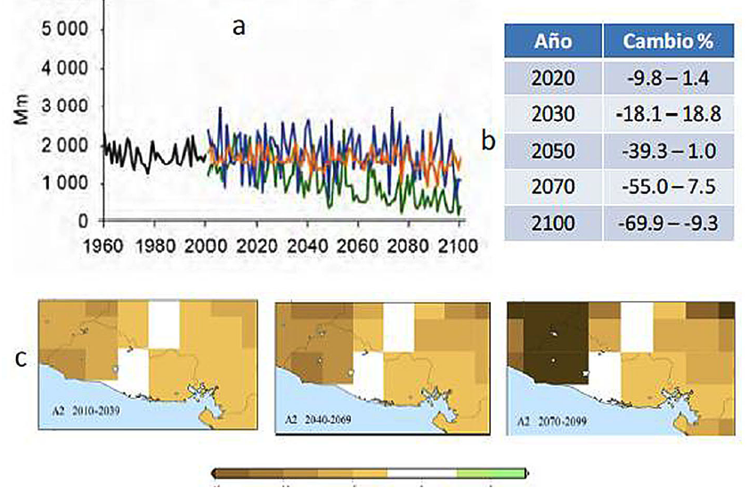

December 2021
Nayib Armando Bukele Ortez
President of the Republic of El Salvador
Felix Augusto Antonio Ulloa Garay
Vice President of the Republic of El Salvador
Fernando Andres Lopez Larreynaga
Minister of Environment and Natural Resources
Institutions participating in the process
National Administration of Aqueducts and Sewers, Central Reserve Bank of El Salvador, Development Bank of El Salvador, Executive Hydroelectric Commission of the Lempa River, National Energy Council, Environmental Fund of El Salvador, Initiative Fund for the Americas, Ministry of Agriculture and Livestock, Ministry of Public Works and Transportation, Ministry of Health, Ministry of Housing, Ministry of Environment and Natural Resources Ministry of Governance and Territorial Development, Ministry of Finance, Ministry of Economy Ministry of Labor and Social Welfare, Office of Planning of the Metropolitan Area of San Salvador, General Superintendence of Electricity and Telecommunications, Secretariat of Commerce and Investment of the Presidency of the Republic, Vice Ministry of Transportation.
For the preparation of this publication, we had the technical and financial support of the United Nations Development Program (UNDP) through the initiatives of the NDC Support Program and Climate Promise.
Design and layout: UNDP
The information presented has been validated by and belongs to the Government of the Republic of El Salvador.
All rights reserved. Its commercialization is prohibited.
This document may be reproduced in whole or in part for educational or non-commercial purposes, acknowledging copyright.
The Salvadoran State is aware of and proactive in the face of the seriousness and acceleration of the global phenomenon of climate change, in terms of an urgency in mitigating its causes (anthropogenic GHG emissions) at a global level – rooted especially in carbon dioxide emissions from of the energy sector of the economies – and an adaptation to its manifestations, effects at the national and local levels with the purpose of reducing the risk of the impacts of climate change and variability in the different socioeconomic sectors, natural and human systems that make up the economy , the society and the environment of this country.
Recognizing that the biophysical, sociocultural, economic, and environmental conditions of El Salvador determine a historical and multifactorial accumulation of susceptibility; the threat of the manifestations and effects of climate change and its associated variability, comes to accentuate the vulnerability and exposure to which it is subject, at the level of ecosystems, agroecosystems and human settlements, as well as on human life and all life forms.
Given this situation and, in response to the mandate established in the Primary Law and secondary laws of the country, referring to the obligation of the State to ensure the inhabitants, the enjoyment of freedom, health, culture, economic well-being and justice Social; as well as the duty of the State to protect natural resources, the diversity and integrity of the environment to guarantee sustainable development, public regulation actions have been implemented, aimed at creating feasible conditions to face the seriousness of climate change and its associated variability.
El Salvador is part of the United Nations Framework Convention on Climate Change (UNFCCC), since 1995, and within the framework of its ultimate objective and specific objectives, principles, structure, operation and stipulations, it participated in the negotiation and approval of the Paris Agreement, which, months later, was ratified based on the mechanisms of national law in consent, acceptance, support and contribution to the objective of making all the necessary efforts by each of the parties, based on the principle of “Common but Differentiated Responsibilities and Respective Capabilities” in light of different national circumstances.
Based on the urgency detailed by the Sixth Assessment Report of the Intergovernmental Panel of Experts on Climate Change, referred to by Working Group I on the Physical Science Bases of Climate Change (2021), there is hardly a narrow margin of action to global level, in order to achieve the objective of the Paris Agreement.
For El Salvador, it is important and mandatory to stop the magnitude and acceleration that climate change manifests and projects between now and mid-century in 2030, in such a way that the most emitting countries can establish GHG mitigation commitments, according to their responsibility and, at the same time, mobilize and transfer resources, in financial, technological and capacity terms.
For its part, El Salvador submitted its Intended Nationally Determined Contribution (INDC) to the UNFCCC, which was later adopted, in 2015, as its First Nationally Determined Contribution (NDC). From the commitments derived from its First NDC, El Salvador has made important progress: creating a regulatory framework and institutional arrangements; developing technical studies to analyze national circumstances, the contribution to GHG emissions and climate risk for different sectors and systems; analyzing needs, opportunities and barriers in terms of means of implementation and establishing national development priorities and objectives in the strategic framework for climate change to achieve a low-carbon society, economy and environment with adaptive and resilient capacity. In addition, El Salvador is preparing the monitoring, reporting and verification system for the NDC, projecting its presentation in an immediate addition to this document in 2022.
Also, based on article 3 of the Paris Agreement, El Salvador has made and is communicating progressive and successive efforts to identify its priorities, measures, goals, needs and opportunities, based on the improvement of information attributes, clarity , understanding and transparency; thus presenting the Second Contribution Determined at the National level of the Salvadoran State, before the United Nations Framework Convention on Climate Change, in compliance with its commitments before the Paris Agreement.
This effort has included a construction process with experts and the establishment or formation of sectoral roundtables of the government sector that will include a process of participation of different actors, including the Academy, Non-Governmental Organizations and private companies with the purpose of identifying and consolidating sectoral implementation plans, to fulfill the promises of this NDC and ensure suitable, effective and timely climate action.
In accordance with the provisions of the Environment Law that establishes stewardship over climate adaptation, El Salvador determines its priorities by defining climate change as a strategic issue. Thus, it is projected for the five-year period 2020-2024, the promotion of the incorporation, mainstreaming of the environmental dimension in sectoral policies, ensuring the strategic management of climate change.
Therefore, climate change management, and the NDC as part of it, contribute to comprehensive disaster risk management, environmental management, and climate change adaptation and mitigation, through systematic monitoring, early warning, and research. scientific, providing information services for the State, as a whole, productive sectors and citizens, in order to reduce loss of human lives and economic losses. In addition, to promote sustainable development low in emissions, vulnerability reduction and resilient to climate change.
All of the above, based on national efforts and resources, in addition to having the support of international cooperation; emphasizing the importance and continuing need for the mobilization and transfer of financing and technical assistance, as means to facilitate the implementation and full application of adaptation and mitigation measures.
Only an increase in international support and cooperation will allow El Salvador to increase, from now on and in the medium (until 2025 and 2030) and long term (beyond 2030), its low-carbon development and the improvement of resilience and adaptive capacity to contribute, from the principle of Common but Differentiated Responsibilities and Respective Capacities, to the achievement of the global goal of the Paris Agreement, so that the increase in global average temperature does not exceed 2°C or 1.5°C in 2100, without previous shocks, thus slowing down the magnitude and acceleration with which climate change manifests itself to enable adaptation to its effects and reduce the risk of impacts.
Figure II.1. Geographical location of El Salvador in Central America.
Figure II.2. Mean monthly temperature (°C) (red line) and monthly precipitation ratio (mm/day) (blue line) over El Salvador.
Figure II.3. Total GHG emissions of El Salvador (Kt CO2Eq) by sector, year 2014.
Figure II.4. Total GHG emissions of El Salvador (Kt CO2Eq) by gas, year 2014.
Figure II.5. Observed change in mean annual temperature and accumulated annual precipitation (mm) in El Salvador between 1950 and 2006.
Figure II.6. (a) Change in mean annual temperature for El Salvador. (b) Annual mean temperature anomaly for different time horizons for a Scenario A2, compared to the period 1980-2000. (c) Mean annual temperature anomaly for an A1B scenario relative to the average for the period 1900-1999
Figure II.7. (a) Change in Annual Precipitation for El Salvador. (b) Annual accumulated precipitation anomaly for different time horizons for a Scenario A2, compared to the period 1980-2000. (c) Anomaly of the annual precipitation for a scenario A2 in relation to the average of the period 1900-1999.
Figure II.8. Intra-annual pattern of (a) monthly mean temperature and (b) monthly precipitation for El Salvador at different time horizons, for Scenario A2, compared to the period 1980-2000.
Figure III.1. GHG emission reduction range in electricity generation for 2025, 2030 to 2050; for the scenario of high intensity of decarbonization (blue line) and low intensity of decarbonization (yellow line), with respect to the BAU Scenario (red line).
Figure III.2. Increase in the installed capacity of renewable energies (yellow line, right scale) and participation of renewable energies (green bars, left scale) in the country's installed capacity matrix, until 2030, for the high and low intensity decarbonization scenarios, compared to the base year.
Figure III.3. Increase in the proportion of electrical energy that is generated from renewable energies (green color) in the country's installed capacity matrix, for 2025 and 2030, for the scenario of high intensity of decarbonization (left panel) and low intensity of decarbonization (left panel). decarbonization (right panel), compared to the base year (2019).
Figure III.4. GHG emissions growth rate in 2030 for a BAU Scenario (red line) and a high-intensity decarbonization scenario (blue line) compared to the base year (2019).
Table II.1. Average mean temperature anomalies (°C) under four global climate change scenarios (RCP) in El Salvador, from 2021 to 2100.
Table II.2. Average monthly percentage changes in precipitation (%) under the four RCP scenarios for El Salvador in the period 2021–2050.
Table III.1. Mitigation results for the current Land Use categories and the transition proposals, according to mitigation capacity and corresponding areas.
Table III.2. Restoration and rehabilitation area of degraded lands in the agricultural landscape, adding to the goal of one million hectares, through land use transition proposals.
CH4 Methane
C02 Carbon Dioxide
MW Megawatts
N2O Nitrous Oxide
kton kilotons
KW Kilowatts
Ha Hectares
GWh Gigawatt hours
CO2Eq Carbon Dioxide Equivalent
Ad. Added
Fig. Figure
AECID Spanish Agency for International Development Cooperation
AFOLU Agriculture, Forestry and Land Use
AMSS Metropolitan Area of San Salvador
ANDA National Administration of Aqueducts and Sewers
ASAC Climate-Adapted Sustainable Agriculture
AT Technical Assistance
BANDESAL Development Bank of El Salvador
BAU Business As Usual Scenario
IDB Inter-American Development Bank
BIEE Base Program of Energy Efficiency Indicators
BTR Rapid Transport Bus
CCAD Central American Commission for Environment and Development
CCS Carbon Capture and Storage
CEDEFOR Forestry Development Center
CEGA Livestock Development Center
CEL Executive Hydroelectric Commission of the Lempa River
CENTA National Center for Agricultural and Forestry Technology “Enrique Álvarez Córdova”
CINACH National Interinstitutional Committee for Hydrographic Basins
CISALUD Intersectoral Health Commission
UNFCCC United Nations Framework Convention on Climate Change
CNE National Energy Council
COMURES Corporation of Municipalities of the Republic of El Salvador
COAMSS Council of Mayors of the Metropolitan Area of San Salvador
COMITRAN Central American Council of Ministers of Transportation
CONASAN National Council for Food and Nutrition Security
COP Conference of the Parties
COSAM Military Health Command
ECLAC Economic Commission for Latin America
TC Technical Cooperation
DACGER Directorate for Adaptation to Climate Change and Strategic Risk Management
DNM National Directorate of Medicines
ENA National School of Agriculture
FF Financial Flows
FI Investment Flows
FIAES Environmental Investment Fund of El Salvador
FONAES Environmental Fund of El Salvador
FOSALUD Solidarity Fund for Health
FGR Attorney General of the Republic
FUNDAZUCAR Sugar Foundation
GCF Green Climate Fund
GEF Global Environmental Facility
GHG Greenhouse Gases
GIZ German Cooperation Agency
GLASS Global Assessment of Drinking Water and Sanitation
LPG Liquefied Petroleum Gas
GOES Government of El Salvador
GOJ Government of Japan
IICA Inter-American Institute for Cooperation on Agriculture
IMTA Mexican Institute of Water Technology
INGEI National Inventory of Greenhouse Gases
INS National Institute of Health
IRENA International Renewable Energy Agency
ISRI Salvadoran Institute of Comprehensive Rehabilitation
ISSS Salvadoran Social Security Institute
ISTA Salvadoran Institute of Agrarian Transformation
JICA Japan International Cooperation Agency
KOICA Korean International Cooperation Agency
MAG Ministry of Agriculture and Livestock
MARN Ministry of Environment and Natural Resources
MAR2R Integrated Reef Basin Management Project of the Mesoamerican Reef Ecoregion
MbA Mitigation based on Adaptation
MIGOBDT Ministry of the Interior and Territorial Development
MINEC Ministry of Economy
MINSAL Ministry of Health
MIVI Ministry of Housing
MOPT Ministry of Public Works and Transport
MRV Monitoring, Reporting and Verification
msnm meters above sea level
MTPS Ministry of Labor and Social Welfare
MUHNES Natural History Museum of El Salvador
NDC Nationally Determined Contribution
NNAJ Boys, girls, adolescents and young people
NSO Salvadoran Mandatory Standard
SDG Sustainable Development Goals
WHO World Health Organization
OPAMSS Office of Planning of the Metropolitan Area of San Salvador
PAHO Pan American Health Organization
OSARTEC Salvadoran Agency for Technical Regulation
PIACC-AMSS Initial Plan for Adaptation to Climate Change of the Metropolitan Area of San Salvador
PNCC National Climate Change Plan
UNDP United Nations Development Program
UNEP United Nations Environment Program
WEEE Waste and Electrical and Electronic Equipment
REDD Reduction of Emissions from Deforestation and Degradation
PREP Ecosystem and Landscape Restoration Program
ROSE Regional Observatory on Sustainable Energies
RTS Salvadoran Technical Regulation
SIGET General Superintendency of Electricity and Telecommunications
SITRAMSS Transportation System of the Metropolitan Area of San Salvador
SUDS Sustainable Urban Drainage Systems
UCA Central American University «José Simeón Cañas»
UES University of El Salvador
IUCN International Union for Conservation of Nature
UNAC Procurement and Contracting Regulations Unit
UNICEF United Nations Children's Fund
VMT Vice Ministry of Transport
WASH Water, Sanitation and Hygiene
In compliance with the commitments acquired by El Salvador within the framework of the Paris Agreement (Article 3 and Decision 1/CP.21), this update of the Nationally Determined Contribution includes the components of response measures (Chapter II mitigation and adaptation), regulations and institutionalization (Chapter III), means of implementation, financing, development and transfer of technologies and capacity building (Chapter IV) prepared based on Decisions 4/, 9/ and 18/CMA.1. The component of the transparency framework for the monitoring, reporting and verification of the NDC will be presented in an update of this NDC during 2022.
In terms of its contribution to the global mitigation of climate change, El Salvador is committed to having a reduction in annual emissions (by 2030 and with respect to a baseline scenario (BAU) from 2019) of 640 Kton CO2Eq from fossil fuel burning activities. in the Energy Sector and up to a reduction in annual emissions of 819 Kton CO2Eq in the same activities and sector, if during the period up to those years the technological models, financing structures, regulatory frameworks and massive capacity-building processes with international support in accordance with the provisions of articles 9, 10 and 11 of the Paris Agreement.
In addition, El Salvador agrees to have a cumulative reduction in emissions, for the period between 2035 and 2040, counted from 2015, of 50,857.5 Kton CO2Eq for emission reductions and activities to increase carbon sinks and reservoirs in the agricultural landscape of its AFOLU sector, provided that large-scale financing is obtained from international and national sources with the participation of the private sector.
For this update, El Salvador presents climate change adaptation measures for the Agriculture, Hydroelectric Generation, Infrastructure, Health, Sanitation and Solid Waste, and Transportation Sectors, and priorities to promote adaptation in the Biodiversity and Ecosystems, Cities and Water Resources Sectors. Also, in terms of regulations and institutionalization, El Salvador expresses the achievements achieved since its first NDC and updates this framework in order to guarantee compliance with the commitments.
And, finally, the Means of Implementation are presented that contain the support received in the period 2015 to 2021 to facilitate the implementation of the first NDC (2017), as well as the support required to substantially promote the implementation of the measures of this NDC; structuring them in the categories: financial support, support granted for the development and transfer of technologies, support that has contributed to the promotion and strengthening of national capacities.
In this process, compliance with public finance arrangements, financing systems, implementation mechanisms and instruments, monitoring and verification of results will be given relevance; preparation and execution of implementation plans, capacity building of the sectors and development of an intersectoral and multilevel coordination approach, which integrates the contribution of national technical-scientific, financial and public policy resources, with the support of the international community. In such a way, that the Salvadoran State meets the proposed goal of mitigation and adaptation measures to climate change.
Administratively, El Salvador is made up of 14 departments grouped into four geographical zones (central, paracentral, western and eastern) and 262 municipalities. For the year 2021, a population of 6,325,827 inhabitants is counted; 61.7% is located in the urban area; 38.3%, in the rural area. It has one of the highest population densities on the continent with 302 inhabitants per km2 at the national level. The Metropolitan Area of San Salvador (AMSS), the political and economic center of the country, has 3% of the national territory and concentrates 25.9% of the population (DIGESTYC, 2021).
El Salvador is a tropical country with a surface area of 21,040 Km2, located on the Pacific coast of Central America (Fig. II.1). Its climate has small changes in temperature from one season to another, although the rainfall regime clearly shows a relatively dry season and a rainy season, which is why we speak of a monsoon climate. Changes in the position and intensity of the InterTropical Convergence Zone (ITCZ) or in the activity of cold fronts, tropical waves or hurricanes largely modulate the climate. In June and September, rainfall is intense and prolonged, they are known as "temporary" (Magaña et al., 2010).
Figure II.1. Geographical location of El Salvador in Central America.
Source: MARN 2021.
On a regional scale of the country, the orography is a factor that determines the climate because the mountain chain in the northern part of El Salvador causes a large part of the country to be located in the lee (behind) of the east wind coming from the Caribbean. (trade winds), reducing the injection of humidity from the Caribbean in the dry season. For this reason, the rains decrease much more in El Salvador compared to the countries that have coasts on the Caribbean slope.
In El Salvador there is a rainy regime with a dry season between November and April, with March and April being the hottest months (Fig. II.2). The intensity of precipitation during the rainy season (May to October), presents a relative minimum during July and/or August corresponding to the so-called "canicula". The behavior of the rains is bimodal, observing two maximum rain peaks, under normal conditions: the first, in the month of September, and the second, in June. During the dry season (November to February), that is, during the winter of the Northern Hemisphere, the presence of cold fronts near the Central American region predominates. To a large extent, the dry or rainy season is a result of the position of the ITCZ. Between November and February,
In the rainy season (May to October) trade winds with moderate and high moisture content from the Caribbean Sea appear, as well as tropical waves that determine the rainfall regime for El Salvador. In the month of June and until September, the Eastern Pacific InterTropical Convergence Zone (ITCZ) is associated with the occurrence of storms, low-intensity rainfall and continuous or intermittent character.
From June to September, the ITCZ is located between 10 and 12° N, so humidity, clouds and rains approach El Salvador. In certain years, the ITCZ can remain close to the geographic equator even from June to September, as happens in years with El Niño. These years can result in meteorological droughts (Magaña et al., 2010).
Figure II.2. Mean monthly temperature (°C) (red line) and monthly precipitation rate (mm/day) (black line) over El Salvador.
Source: GHCN and Global Precipitation Project grid data , GPCP, 2010.
The temperature of the sea off the coast of El Salvador is around 28 °C and its effects on rainfall are those characteristic of a pool of hot water where convective activity develops (Fig.II.2). In climatic terms, sea surface temperatures above 28 °C favor the development of deep clouds and precipitation.
An element of great importance is the temperature of the sea off El Salvador. The climatic analyzes carried out for the country have adequately captured the characteristics of El Salvador's climate and can be used as a reference to assess climate simulations, either in seasonal forecasts or for climate change scenarios (Magaña et al., 2010).
Regarding El Salvador's contribution to the anthropogenic causes of climate change, the Third Communication on Climate Change estimated the National Greenhouse Gas Inventory (INGEI) for 2014, in addition to the existing inventories for 1994, 2000 and 2005.
The results show that 57.8% of GHG emissions (11,793.6 KtonCO2Eq, net) come from the AFOLU Sector (Agriculture, Forestry and Land Use); 30.7% (6,268.5 KtonCO2Eq), from the Energy Sector; 9.2% (1,871.2 KtonCO2Eq), from the Waste Sector, and 2.3% (461.6 KtonCO2Eq), of the Industry Sector (Fig. II.3). The country's GHG emissions, for that year, they were 20,394.9 KtonCO2Eq, corresponding to 78.3% of CO2 (15,978.7 KtonCO2Eq, net); 17.5% CH4 (3,577.6 KtonCO2Eq); 3.7% N2O (753.3 KtonCO2Eq, net), and 0.4% HFC (85.3 KtonCO2Eq) (Fig. II.4).
Figure II.3. Total GHG emissions of El Salvador (Kt CO2Eq) by sector, year 2014.
Source: MARN.

Figure II.4. Total GHG emissions of El Salvador (Kt CO2Eq) by gas, year 2014.
Source: MARN.
Historically, and up to the present, El Salvador has generated very low greenhouse gas (GHG) emissions, for which its contribution is not significant at the global level. Given that nearly 90% of the emissions generated come from the AFOLU and energy sectors, the mitigation measures are oriented, especially, towards these sectors, without ruling out the development of mitigation measures for the Waste and Industry Sectors in the next updates of the the NDC and other country policies.
In El Salvador, the alteration of the climate associated with climate change is manifested for the variables and observable behaviors of the climate in the tropics, also considering that the studies and global data on the increase in the World Average Temperature (TMM) indicate that, in the tropics As in the polar regions, the temperature increases are and will be of greater magnitude than in the temperate zones. In El Salvador, one of the already observed manifestations of climate change is the increase in the average temperature for 2010, of approximately 0.60 °C since the 1970s and around 1.2 °C compared to the period 1961-1990.
The mean annual rainfall in El Salvador has been the lowest in Central America (1769 mm) with a downward trend in rainfall of -3.6% between 1980 and 2006 compared to the period 1950-1979 or a reduction in mean annual rainfall of 0.38 mm/year for the period 1961-1990 (Centella et al ., 2000, UNAM 2010) (Fig. II.5).
Wetter decades, as a result of interdecadal variation, could mask larger reductions in precipitation. The manifestations of extreme climatic events for El Salvador would be congruent with those that have been detailed for the regional level, since national and regional historical records have been surpassed for extreme hydrometeorological events, especially for intense rains and droughts in intensity, duration and intensity. territorial expansion.
Figure II.5. Observed change in mean annual temperature and accumulated annual precipitation (mm) in El Salvador between 1950 and 2006.
Source: ECLAC, 2011.
Regarding future climate change projections in El Salvador, the first future climate change scenarios prepared for El Salvador (Centella, 2000), within the framework of the First National Communication on Climate Change (MARN, 2000), indicated that the temperature mean annual rainfall would already be increasing from 0.8 °C to 1.1 °C in 2020 and from 2.5 °C to 3.7 °C in 2100 and, in the case of mean annual rainfall, although the projections were more uncertain, they presented ranges from -11.3% to +3.5% for 2020 and from -36.6% to +11.1% for 2100, in both cases, compared to the period 1961-1990. August, and that there would be reductions in the monthly volume of rainfall in September.
In relation to the increase in average temperature, future projections of climate change for El Salvador indicated in 2010 that for the A2 emissions scenario (medium-high emissions level), there would be increases in the average annual temperature of 1.7 to 2.3 °C. in 2050 and from 3.8 to 5.2 °C in 2100, compared to the period 1980-2000 (UNAM, 2010). For an A1B emissions scenario (average emissions level), a change of 1.0 to 1.2°C was determined for the 2010-2039 period, 1.2 to 1.4 °C for the 2040-2069 period, and 2.8 to 3.0 °C for the period 2070-2099, compared to the average temperature for the period 1900-1999 (Magaña et al ., 2010) (Fig. II.6).
The latest climate change scenarios developed confirm that the average and minimum temperature will present increases in the periods 2021-2050 and 2071-2100, under all the RCP scenarios (Table II.1), the foregoing may involve changes of between 1.4 °C and 3.7 °C towards the end of the century (MARN, 2018).
Figure II.6. (a) Change in mean annual temperature for El Salvador. (b) Annual mean temperature anomaly for different time horizons for a Scenario A2, compared to the period 1980-2000. (c) Annual mean temperature anomaly for a scenario A1B in relation to the average of the period 1900-1999.
Source: UNAM 2010, (Magaña et al ., 2010).
Table II.1. Average mean temperature anomalies (°C) under four global climate change scenarios (RCP) in El Salvador, from 2021 to 2100.
| Scenario |
Period |
|||||||
|
2021-2050 |
2071-2100 |
2021-2030 |
2031-2040 |
2041-2050 |
2071-2080 |
2081-2090 |
2091-2100 |
|
|
CPR 2.6 |
1.0 |
1.3 |
1.0 |
0.9 |
1.1 |
1.3 |
1.2 |
1.4 |
|
CPR 4.5 |
1.2 |
2.2 |
0.9 |
1.3 |
1.5 |
1.9 |
2.1 |
2.2 |
|
CPR 6.0 |
1.0 |
23 |
0.8 |
0.9 |
1.3 |
1.7 |
2.1 |
23 |
|
CPR 8.5 |
1.3 |
3.7 |
1.0 |
1.3 |
1.7 |
2.6 |
3.2 |
3.7 |
Source: Third National Communication on Climate Change, MARN, 2017.
Regarding the annual precipitation for the A2 emissions scenario (medium-high emissions level), the annual precipitation was projected with changes from -39.3 to +1.0% in 2050 and from -69.9 to -9.3% in 2100, compared to the 1980 period. -2000 (UNAM, 2010). As time progresses, a greater negative anomaly in annual precipitation would begin to be observed towards the western part of the country, which could reach up to -15% by the end of the century under scenario A2, while in the east, the anomaly it would not be greater than -5% (Fig. II.7).
The latest climate change scenarios developed confirm that national precipitation in the period between 2021-2050 would be reduced between 10% and 20% under any RCP scenario and, particularly, the change may be greater than 20% under RCP8.5 (Table II.1) (MARN, 2018).

Figure II.7. (a) Change in Annual Precipitation for El Salvador. (b) Annual accumulated precipitation anomaly for different time horizons for a Scenario A2, compared to the period 1980-2000. (c) Anomaly of the annual precipitation for a scenario A2 in relation to the average of the period 1900-1999.
Source: (UNAM, 2010), (Magaña et al ., 2010).
Table II.2. Average monthly percentage changes in precipitation (%) under the 4 RCP scenarios for El Salvador in the period 2021–2050.
| Scenery | Periods | |||||||
| Periods | First period (decade) | Second period (decade) | ||||||
|
2021-2050 |
2071-2100 |
2021-2030 |
2031-2040 |
2041-2050 |
2071-2080 |
2081-2090 |
2091-2100 |
CPR 2.6 |
-19.4 |
-18.7 |
-23.9 |
-16.9 |
-17.5 |
-16.9 |
-20.2 |
-18.7 |
|
CPR 4.5 |
-18.7 |
-20.8 |
-18.7 |
-19.5 |
-20.3 |
-19.5 |
-20.9 |
-17.5 |
|
CPR 6.0 |
-20.1 |
-21.8 |
-19.3 |
-20.1 |
-21.0 |
-20.1 |
-18.8 |
-23.7 |
|
CPR 8.5 |
-21.2 |
-24.9 |
-24.9 |
-21.5 |
-22.2 |
-21.5 |
-26.0 |
-25.5 |
Source: Third National Communication on Climate Change, 2017.
The projections in the intra-annual climate patterns show a progressive increase in temperature in all months without significant changes in this pattern, except for a greater increase in temperature between April and October, determining greater variability throughout the year. . On the other hand, the changes in the intra-annual precipitation pattern indicate that, for an A2 scenario, the rain in the first period would increase in June and the maximum precipitation in the second period would occur between October and November compared to the period 1980 to 2000. .
Likewise, the heat wave would have been accentuated in July and August in the following decades, the precipitation would be substantially reduced in the first period from April to July and in the second period in September. Between 2020 and 2085 there would be increases in rainfall in April and decreases in May, which could indicate a delay in the start of the rainy season in May and a false start in April.
Around the year 2100, the bimodal form would have been progressively lost due to a decrease in rainfall in the first period, especially in May, while the rainfall in October would be the maximum of the entire year, with a displacement of the end of the rainy season until December (ECLAC, 2012) (Fig. II.8).
Figure II.8. Intra-annual pattern of (a) monthly mean temperature and (b) monthly precipitation for El Salvador at different time horizons, for Scenario A2, compared to the period 1980-2000. Source: ECLAC, 2012.
Regarding extreme hydrometeorological events (MARN 2015), as manifestations of climate change and its associated variability, in El Salvador, historical records of registered rainfall in intensity, duration and territorial extension have also been broken. This both on a national scale and throughout the Central American region, as occurred in 2011 with tropical depression 12E, in very localized areas with extreme intensity for a period of six hours, as occurred in 2009 in Saint Vincent, with the associated low pressure 96E to Hurricane Ida. A variant between the two occurred in 2010 with storm Ágatha, severely impacting the western region of the country.
On the contrary, the following four years, from 2012 to 2015, became predominantly dry, breaking in 2014 the record for the driest month of July since the country has records, and, likewise, the first quarter of the rainy season 2015 was the driest on record to date.
The extreme variability of precipitation, in a territory as small as ours, was also manifested in a particularly acute way in the month of July 2012, in which the monthly precipitation recorded at a station in the department of Sonsonate was approximately 500 mm. , while, in one of La Unión, the record was barely 5 mm, a hundred times smaller.
The frequency of extreme events such as hurricanes and heavy rains has been multiplying in the country and in the Central American region in recent decades. While in each of the 60s and 70s of the last century only one of these phenomena was recorded, in the 80s there were two, in the 90s there were four, and from the beginning of the century to 2011 there were nine. Since 1980, half of these phenomena originated in the Pacific Ocean, while in one and two decades before, they only came from the Atlantic.
The most recent weather events have left millions of dollars in losses. Thus, for Tropical Storm Ida, losses are estimated at USD$315 million, equivalent to 1.44% of the country's GDP; for storm Ágatha, damages and losses are estimated at USD$112.1 million, which represented just over 0.5% of the country's GDP; storm 12-E left damages and losses estimated at USD$1.3 billion, equivalent to 6% of GDP; Amanda and Cristóbal, an economic loss of USD$8 million and infrastructure losses of USD$22.1 million are estimated, and an amount undetermined damage to grain, vegetable and fruit crops; and the droughts of 2012, 2014, 2015 and 2018 left economic losses of USD$208.7 million and destroyed 227,601.88 manzanas of basic grains (MARN, 2021).
The various impacts of climate change and its associated variability, in particular, the increase in average temperature, the reduction in annual accumulated precipitation, the change in precipitation patterns and extreme events, are experienced in different socio-economic sectors and natural and human systems of the country, such is the case of agriculture, biodiversity, cities, hydroelectric generation, infrastructure, water resources, sanitation and solid waste, health and transportation, which have specific attention in terms of impacts, vulnerability and adaptation in their corresponding NDCs.
These conditions determine the exposure and vulnerability of the territory and of those who inhabit it, in the face of the threats of climate change and its associated variability; but, also, they condition the priorities of the country and the action of the State. Not only based on the implementation of actions at the local and territorial level, but also for its contribution to the global response, for example, in the face of the commitments of the Paris Agreement and the UNFCCC.
Pursuant to Decision 4/CMA.1 (FCCC/PA/CMA/2018/3/Add.1, March 19, 2019) and the Paris Agreement (Article 4, paragraphs 8 and 13, among others), The Salvador presents its response measures in mitigation, providing the necessary information for the purposes of a progression in the attributes of clarity, transparency and understanding, with respect to the First NDC of El Salvador (2017) and considers that in the process of implementation and accountability of accounts of the reduction of emissions and anthropogenic absorption, corresponding to these NDC (2021), the principles of environmental integrity, transparency, accuracy and exhaustiveness, comparability and coherence must be promoted and applied; and also, avoid double counting and double counting, and ensure that real, additional and non-displacement mitigation actions are integrated.
It is important to note that, based on Decision 1/CP.21, Paragraph 31, (FCCC/ CP/2015/L.9/Rev.1, December 12, 2015), El Salvador has included the emission categories and anthropogenic absorptions in the commitments of this NDC, depending on the availability of information, capacities and scope of the country in this purpose, stating that for the missing categories, El Salvador will be strengthening its capacities so that they are covered in a future update of its NDC.
The categories of sources and sinks, which are integrated into this NDC, are detailed for each of the mitigation measures, they refer only to the Energy Sector and the AFOLU Sector (Agriculture, Forestry and Land Use), based on the Guidelines of the 2006 IPCC for national greenhouse gas inventories.
From the Energy Sector, and based on a "bottom-up" approach, El Salvador will be reducing its annual GHG emissions between 819 and 640 Kton CO2Eq by 2030, based on measures 1.1.1 and 1.1.5, whose GHG annual emission reduction goals confer values between 485 and 306 Kton CO2Eq (Goal 1.1.1.A) and 334 Kton CO2Eq (Goal 1.1.5.A), for 2030. Both goals are additional to each other and provide the result previous.
This sector establishes measures 1.1.2 and 1.1.3, expressed in “Non-GHG type” indicators, and measure 1.1.4 as accumulated GHG reductions, which will be prepared and presented in the next update of the NDC. from the country. The annual GHG reductions calculated for these measures will be additional to goal 1.1.1. and 1.1.5.
El Salvador has the priority of implementing its National Energy Policy 2020-2050, with the following strategic objectives:
Ensure that the institutional and regulatory frameworks related to the energy sector are kept up to date to promote its sustainable development and efficient operation;
Guarantee an energy supply at affordable prices and quality that encourages the production and competitiveness of the country and improves the quality of life of the population;
Incentivize efficient growth in energy demand and increase the energy performance of the economy, doubling the rate of improvement in energy efficiency over the next decade;
Mitigate the risks of energy shortages associated with the high dependence on oil products, the impact of climate change and national emergency conditions;
Achieve the national goals of mitigation and adaptation to climate change and sustainable development corresponding to the energy sector, adopted in international agreements and treaties.
1.1.1. Reduction of GHG emissions in the generation of electricity, due to a growth in generation with renewable energy (solar photovoltaic, wind, geothermal, hydroelectric and biomass) and the incorporation of natural gas, including an increase in the installed capacity of renewable energies and an increase in of the proportion of electrical energy, which is generated from renewable energies
|
Subsector Fossil fuel burning activities |
Category: energy industries |
Greenhouse gases (GHG) C02 CH4 N2O |
|
Exercise: Power and heat production |
||
|
Font: electricity generation |
|
Other related sectors/systems |
Sustainable Development Goals involved |
|
Adaptation: Cities Hydroelectric Generation Infrastructure |
|
1.1.1. A. Target based on GHG emissions reduction for 2030 and 2025
By 2030, annual GHG emissions will decrease to a value in the range between 308 and 487 Kton CO2Eq, which corresponds to a reduction between 61% and 39% in relation to the BAU scenario; according to which, 2019 emissions were 986 Kton CO2Eq, leading to a tendency to reach 793 Kton CO2Eq in 2030. This means a reduction in annual emissions between 485 and 306 Kton CO2Eq in 2030 in relation to the emissions of the BAU scenario. (Fig.I.1).
By 2025, annual GHG emissions will decrease to a value in the range between 346 and 540 Kton CO2Eq, which corresponds to a reduction between 39% and 5%, in relation to the BAU scenario, according to which emissions in 2019 were of 986 Kton CO2Eq, which leads to a tendency to reach 570 Kton CO2Eq in 2025. This means a reduction in annual emissions between 224 and 30 Kton CO2Eq in 2025 in relation to the emissions of the BAU scenario (Fig.I.1).
1.1.1. B. Goal based on the installed capacity of renewable energies for 2030 and 2025
By 2030, the installed capacity of renewable energies will increase by 50% compared to 2019 (base year), to reach a value of 2,222 MW, which represents a 64% share of renewable energies in the country's installed capacity matrix . In the base year, the installed capacity of renewable energies was 1,482 MW (66% share of renewable energy in the country's energy matrix) (Fig. II.2).
By 2025, the installed capacity of renewable energies will increase by 14% compared to 2019 (base year), to reach a value of 1,684 MW, which represents a 58% share of renewable energies in the country's installed capacity matrix. . In the base year, the installed capacity of renewable energies was 1,482 MW (66% share of renewable energy in the country's energy matrix) (Fig. II.2).
1.1.1. C. Goal based on the proportion of electricity generated from renewable energies for 2030 and 2025
By 2030, between 86.1% and 85.7% of electrical energy is generated from renewable energy compared to 70% of electrical generation that came from renewable energy in 2019 (Fig. III. 3). By 2025, between 83.7% and 82.7% of electrical energy is generated from renewable energy, compared to 70% of electrical generation that came from renewable energy in 2019 (Fig. III.3).
Methodological aspects
The BAU scenario, which had 2015 as its starting point and was used for the First NDC (2017), was updated to a new BAU scenario with projections from 2019, which also incorporates new energy variables, the impact of the COVID- 19 in 2020, the prospects for economic growth and the new long-term development vision of the National Energy Policy 2020-2050.
To calculate the reduction of GHG emissions in electricity generation (Goal 1.1.1.A), for 2025 and 2030, based on "GHG type" verifiers, the BAU Scenario was compared with a high intensity scenario of decarbonization, with another scenario of low intensity of decarbonization. These scenarios include, to varying degrees: economic growth variables, inclusion of renewable energy, energy efficiency hypotheses in consumption sectors, considerations for the implementation of Carbon Capture and Storage (CCS) systems, and the use of less polluting fuels. Resulting in a cleaner power supply, lower GHG emissions,
To calculate the increase in the installed capacity of renewable energy and the participation of renewable energies in the country's installed capacity matrix (Goal 1.1.B) for 2025 and 2030, with respect to the base year; High and low intensity decarbonization scenarios were considered. These scenarios include, to varying degrees: economic growth variables, inclusion of renewable energy, energy efficiency hypotheses in consumption sectors, considerations for the implementation of Carbon Capture and Storage (CCS) systems, and the use of less polluting fuels. Resulting in a cleaner power supply, lower GHG emissions,
However, although a common result of installed capacity is obtained for both scenarios, it should be mentioned that different generation technologies are considered in these scenarios: the high-intensity decarbonization scenario contemplates the use of natural gas technology with Capture and Storage of Carbon (CCS), while the one with low intensity of decarbonization, considers conventional natural gas technology (Fig.III.2).
To calculate the increase in the proportion of electricity generated from renewable energies in the country's installed capacity matrix (Goal 1.1.1C), for 2025 and 2030, compared to the base year (2019), the scenarios of high and low intensity of decarbonization. These include, to varying degrees: economic growth variables, inclusion of renewable energy, energy efficiency hypotheses in consumption sectors, considerations for the implementation of Carbon Capture and Storage (CCS) systems, and the use of less polluting fuels. Resulting in a cleaner energy supply, lower GHG emissions, expansion of the generating park under a focus of optimization of operation and investment costs and incorporation of strategic guidelines of the National Energy Policy.
It should be noted that, although there is the same installed renewable energy capacity for both scenarios, they use different technologies with different investment and operating costs, so the dispatch of electricity between these scenarios is different. This determines that there is always a range in reaching the goal, even if this range is very narrow (Fig. III.3).
Figure III.1. GHG emission reduction range in electricity generation for 2025, 2030 to 2050; for the scenario of high intensity of decarbonization (blue line) and low intensity of decarbonization (yellow line), with respect to the BAU Scenario (red line).
Source: CNE 2021.
Implementation framework
This measure is part of the NDC, within the framework of the Implementation of the National Energy Policy and other binding regulations, which involves interaction with many State entities, the Academy, the private sector and international cooperation.
Conditioning elements
The emission reduction goals of 61% in 2030 and 39% in 2025, with respect to a BAU scenario from 2019, are conditional on the installation of a 100 MW plant that uses Capture technology during the period up to those years. and Carbon Storage (CCS). For this, it will also be necessary to create a business model for this project and obtain a financing structure that makes its construction feasible.

Figure III.2. Increase in the installed capacity of renewable energies (yellow line, right scale) and participation of renewable energies (green bars, left scale) in the country's installed capacity matrix, until 2030, for the high and low intensity decarbonization scenarios, compared to the base year.
Source: CNE.
Figure III.3. Increase in the proportion of electrical energy that is generated from renewable energies (green color) in the country's installed capacity matrix, for 2025 and 2030, for the scenario of high intensity of decarbonization (left panel) and low decarbonization intensity (right panel), compared to the base year (2019).
Source: CNE.
Perspectives and approaches
The country will be developing studies to identify and make visible the aspects that link the implementation of this measure with aspects pertinent to the gender approach, NNAJ (boys, girls, adolescents and young people), commitments with local communities, ancestral and local knowledge.
1.1.2. Implementation of energy efficiency actions at the level of government, commercial and residential consumers, due to the replacement of refrigeration and air conditioning equipment for others with greater efficiency
|
Subsector Fossil fuel burning activities |
Category: other sectors |
Greenhouse gases (GHG) C02 CH4 N2O |
|
Exercise: Commercial, institutional and residential |
||
|
Font: Commercial, institutional and residential |
|
Other related sectors/systems |
Sustainable Development Goals involved |
|
Adaptation: Cities Solid waste Health |
1.1.2. A. Goal based on technical regulations in 2026
By 2026, there will be two revised and improved technical regulations, approved and in application for the improvement of energy efficiency in refrigeration and air conditioning equipment. And a new regulation approved and in application on energy efficiency in lighting equipment, based on the two technical regulations approved and in application on energy efficiency in refrigeration and air conditioning equipment, prepared in 2018.
1.1.2. B. Target based on annual consumption in 2030
By 2030, there will be an annual consumption of 2,033 GWh, for refrigeration and air conditioning equipment nationwide. This means a reduction of 8% in relation to the BAU scenario, which assumes an annual consumption of 1,982 GWh in 2019, with a trend that would imply a consumption of 2,194 GWh in 2030, if efficiency measures are not applied. energetic.
Methodological aspects
The country will be advancing in the characterization of the energy consumption of the demand for this equipment, as well as in the quantification of the GHG emissions that will be mitigated by its implementation.
To calculate this goal, the BAU Scenario was compared with a high-intensity decarbonization scenario that includes economic growth and energy efficiency variables to different magnitudes. Resulting in improvement components in the use of energy, less GHG emissions and evaluation of the cost-effectiveness in the implementation of these measures.
Implementation framework
This measure is part of the NDC, within the framework of the implementation of the National Energy Policy, the Energy Efficiency Strategy and other binding regulations, which involves interaction with many State entities, the Academy, the private sector and international cooperation. .
Conditioning elements
The following is required: a) making arrangements with the General Directorate of Customs, the Ministry of Finance, the Salvadoran Agency for Technical Regulation and the Salvadoran Accreditation Agency for the review of the technical file of the new refrigeration and air conditioning equipment; b) the generation of approval reports at Customs to facilitate the importation and entry of this equipment into the country; c) the review and updating of the Salvadoran Technical Regulations (RTS) with a focus on improving energy efficiency for the importation of new equipment and d) Financing and capacity building.
Perspectives and approaches
The country will be carrying out studies to identify and make visible the aspects that link the implementation of this measure with aspects pertinent to the gender approach NNAJ (boys, girls, adolescents and young people), commitments with local communities and ancestral and local knowledge.
1.1.3. Implementation of energy efficiency actions in public lighting
|
Subsector Fossil fuel burning activities |
Category: other sectors |
Greenhouse gases (GHG) C02 CH4 N2O |
|
Exercise: Commercial, institutional and residential |
||
|
Font: commercial and institutional |
|
Other related sectors/systems |
Sustainable Development Goals involved |
|
Adaptation: Cities Solid waste Health |
1.1.3. A. Target based on annual consumption in 2030
By 2030, there will be an annual consumption of 124 GWh for public electric lighting, which means an accumulated saving of 34 GWh compared to a BAU Scenario, in which an annual consumption of 126 GWh in 2019 is assumed, with a trend which would imply a consumption of 128 GWh in 2030, by not applying energy efficiency measures.
Methodological aspects
The country will be advancing in the characterization of the energy consumption of the lighting demand at the level of municipalities and distributors, as well as in the quantification of GHG emissions that will be mitigated by its implementation.
To calculate this goal, the BAU Scenario was compared with a high-intensity decarbonization scenario that includes, to different magnitudes, economic growth and energy efficiency variables, resulting in improved energy use components, less GHG emissions , evaluation of the cost-effectiveness in the implementation of these measures.
Implementation framework
This measure is part of the NDC, within the framework of the implementation of the National Energy Policy and the Energy Efficiency Strategy, which involve interaction with many State entities, the Academy, the private sector and international cooperation.
Conditioning elements
It is required a) to make arrangements with the General Directorate of Customs, the Ministry of Finance, the Salvadoran Agency for Technical Regulation and the Salvadoran Accreditation Agency for the review of the technical file of the new public lighting equipment; b) the generation of approval reports at Customs to facilitate the importation and entry of this equipment into the country; c) the review and updating of the Salvadoran Technical Regulations (RTS) with a focus on improving energy efficiency for the importation of new equipment; and d) financing.
Perspectives and approaches
The country will be developing studies to identify and make visible the aspects that link the implementation of this measure with aspects pertinent to the gender approach, NNAJ (boys, girls, adolescents and young people), commitments with local communities, ancestral and local knowledge.
1.1.4. Substitution of the use of petroleum-derived fuels (bunker, liquefied petroleum gas and diesel) in industry and commerce for natural gas
|
Subsector Fossil fuel burning activities |
Category: other sectors |
Greenhouse gases (GHG) C02 CH4 |
|
Exercise: Commercial, institutional and residential |
||
|
Font: commercial |
|
Other related sectors/systems |
Sustainable Development Goals involved |
|
Adaptation: Health |
|
1.1.4. A. Goal based on the reduction of GHG emissions between 2024 and 2030
Between 2024 and 2030, a cumulative reduction of 175 Kton CO2Eq would be achieved, which corresponds to a reduction of 1.6% compared to a BAU Scenario, without substitution, in which 11,226 Kton CO2Eq would be emitted, cumulatively in the same period.
Methodological aspects
To calculate this goal, the BAU Scenario was compared with a high-intensity decarbonization scenario that includes, to a different extent, economic growth variables and less polluting fuels. Resulting in improved energy use components, less GHG emissions, cost-effectiveness evaluation in the implementation of these measures.
Implementation framework
This measure is part of the NDC, within the framework of the implementation of the National Energy Policy, which involves interaction with many State entities, the Academy, the private sector and international cooperation.
Conditioning elements
It is an unconditional measure, except for the requirements for carrying out the corresponding arrangements, for the development and transfer of technologies.
Perspectives and approaches
The country will be developing studies to identify and make visible the aspects that link the implementation of this measure with aspects pertinent to the gender approach, NNAJ (boys, girls, adolescents and young people), commitments with local communities, ancestral and local knowledge.
1.1.5. Introduction of electro-mobility in the vehicle fleet with primary attention to public and private passenger transport
|
Subsector Fossil fuel burning activities |
Category: Transportation |
Greenhouse gases (GHG) C02 CH4 N2O |
|
Exercise: Ground transportation |
||
|
Font: Cars, trucks, motorcycles and buses |
|
Other related sectors/systems |
Sustainable Development Goals involved |
|
Adaptation: Cities Infrastructure Health Transportation |
1.1.5. A. Goal based on the growth of GHG emissions between 2024 and 2030
For the year 2030, annual GHG emissions would be 4,931 Kton CO2Eq, corresponding to a growth of 28% of annual GHG emissions compared to 2019. This represents a lower growth compared to the BAU Scenario than for 2030, this activity, without The introduction of electromobility in the vehicle fleet would imply annual emissions of 5,265 Kton CO2Eq, corresponding to a growth of 37% in GHG emissions compared to 2019. The foregoing means a reduction in annual emissions of 334 Kton CO2Eq, in 2030, compared to to the BAU scenario (Fig. III.4).
Methodological aspects
To calculate this goal, the GHG emissions projection of the BAU Scenario was compared with the emissions of a high-intensity decarbonization scenario that includes, to different magnitudes, variables of economic growth, growth of the vehicle fleet, ambition for electromobility penetration and others. sustainable mobility actions. Resulting in improvement components in the energy consumption of the transport sector, reduction of GHG emissions, evaluation of the cost-effectiveness of this measure, forecast of required investments and strategic guidelines of the National Energy Policy.
Additionally, vehicle sales projection models and technological characterization models of the vehicle fleet were built to estimate survival curves, age curves, vehicle retirement rate and key parameters to estimate the future energy consumption of the sector (such as fuel economy and average annual travel).
In addition, four electric vehicle penetration scenarios were established: reference, modernization, transition and decarbonization. A more ambitious decarbonization scenario was obtained with 20% of electric vehicle sales in 2030, a modernization scenario, with lower penetration, with 7% of electric vehicle sales for the same year.

Figure III.4. GHG emissions growth rate in 2030 for a BAU Scenario (red line) and a high-intensity decarbonization scenario (blue line) compared to the base year (2019).
Source: CNE.
Implementation framework
Implementation of the National Energy Policy that involves interaction with many State entities, the Academy, the private sector and international cooperation.
Conditioning elements
The introduction and establishment of electromobility in the country is subject to the following requirements:
Creation and implementation of a regulatory framework that facilitates and regulates the importation of vehicles, financing incentives for users, and recharging rates;
Financing for investment in infrastructure and appropriate technologies for electromobility;
Massive processes of development and promotion of capacities, awareness, public communication and environmental education, aimed at the acceptance and operation of electric vehicles
Special incentives for public transport for the acquisition and use of electric vehicles.
Secondary benefits
Reduction of other non-GHG gases, from the combustion of automobiles, improving health conditions, especially at the city level.
Perspectives and approaches
The country will be carrying out studies to identify and make visible the aspects that link the implementation of this measure with aspects pertinent to the gender approach NNAJ (boys, girls, adolescents and young people), commitments with local communities and ancestral and local knowledge.
El Salvador proposes the following needs and opportunities for the implementation of its mitigation NDC in the Energy Sector and to strengthen progress towards updating its NDC, in 2025 or earlier, as deemed appropriate:
Electricity savings, and substitution of the use of LPG for solar and thermal energy, in the Dairy Agroindustrial Sector.
Substitution of petroleum derivatives for renewable energies for the different industrial and commercial sectors of the country.
GHG mitigation options, due to the replacement of current means of land transport, by different sustainable means of transport.
Promotion of renewable energies, efficiency and energy savings at the community level, integrating the gender approach NNAJ (boys, girls, adolescents and young people), ancestral and local knowledge.
Planning aspects of energy saving and efficiency at the level of government institutions.
For the AFOLU sector, based on a "bottom-up" approach, El Salvador will be accumulating an emission reduction of 50,857.5 Kton CO2Eq (Meta 1.2.1.A), through emission reduction activities and activities to increase sinks. and carbon reservoirs, in the agricultural landscape of the country.
These emissions are additional and will be counted, registered and reported by the Salvadoran State in the categories, activities and emission sources of the AFOLU sector, including when referring to other monitoring, reporting and verification commitments before the UNFCCC, in addition to the NDC, for example: in the National Inventories of Greenhouse Gases (INGEI) of the Biennial Reports and the National Communications on Climate Change.
From AFOLU, El Salvador has the priority of implementing its Ecosystem and Landscape Restoration Program (PREP), as a key instrument of the National Environmental Policy, to reduce the country's vulnerability to the threat of climate change and variability. .
The Program includes three strategic areas:
Restoration of critical ecosystems through social inclusion processes to recover key ecosystem services in water recharge areas, riparian ecosystems, areas susceptible to landslides, fragile and sensitive habitats, and ecological connectivity sites;
Restoration of highly degraded areas, through the establishment of climate-resilient agroforestry systems, the adoption of sustainable agriculture resilient to climate change and friendly to biodiversity
Synergistic development of physical infrastructure and natural infrastructure.
Likewise, El Salvador will be including, in its next update of the NDC, quantitative national goals for each of the emission categories of this sector, in a manner consistent with the national proposal for the AFOLU 2040 Initiative, which contemplates achieving Carbon Neutrality in this sector by 2040.
For AFOLU mitigation measures, the PREP goal of restoring one million hectares is considered, under a landscape-scale intervention model in which there is coexistence and interdependence of different types of land use (including ecosystems and agroecosystems), grouped into eleven categories.
However, only six of these eleven current land use categories, referring to the transition to low-carbon agriculture and livestock, will have "GHG Type" indicators to report a mitigation contribution (Table III.1).
The total of eleven categories, whose respective areas add up to approximately one million hectares, have been integrated into an adaptation measure of the Agriculture Sector (Measure 2.1.7) with “Non-GHG Type” indicators, since they refer to risk reduction climate (Table III.2).
This ensures that the NDC has consistency between a mitigation and adaptation measure that refers, spatially, to the same activity at the territorial level; but at the same time, double accounting, registration and reporting of emission reductions or adaptation verifiers is avoided in the transparency framework for monitoring, reporting and verification that will complement this NDC.
1.2.1. Reduction of GHG emissions and increase of carbon sinks and reservoirs due to actions of restoration and rehabilitation of degraded lands in the agricultural landscape, and a transition towards low-carbon agriculture and livestock, which includes agroforestry systems, practices low in GHG emissions and restoration of degraded soils in six current land use categories: maize and bean crops, grasslands, crop and grassland mosaics, crop mosaics, grassland and vegetation (<900 msnm), sugarcane, crop and grassland mosaics , corn and beans, vegetation and sugar cane
|
Subsector Land Aggregate sources and non-CO2 emission sources from land |
Category: Forest land, cropland, grassland, aggregate sources, and non-CO2 emission sources from land. |
Greenhouse gases (GHG) C02 CH4 N2O |
|
Exercise: Forest, Crop, Grassland, and Other Land Remaining Forest Land, conversion to land in those categories; GHG emissions from biomass burning. |
||
|
Font: Conversion of forest, crop, grassland, and other land to other land in these categories; emissions from biomass burning on cropland. |
|
Other related sectors/systems |
Sustainable Development Goals involved |
|
Adaptation: Agriculture Biodiversity/Ecosystems Cities hydroelectric generation Water resources Health |
|
1.2.1. A. Target based on GHG emissions reduction for 2030 and 2025
For the period from 2035 to 2040, and from 2015, 50,857.5 Kton CO2Eq will have been mitigated in a total of 818,421 ha, distributed according to its transition proposal, of which, 359,208 ha of corn and bean cultivation, through the establishment of systems agroforestry; 195,590 ha of grasslands, through the establishment of silvopastoral systems; 84,536 ha of crop and pasture mosaics, through agrosilvopastoral systems; 82,716 ha of mosaics of crops, grasslands and vegetation (<900 msnm), through cocoa agroforestry systems; 77,441 ha of sugar cane, through mechanized harvesting (green harvest); and 18,930 ha of mosaics of crops and grasslands, corn and beans, vegetation and sugar cane, through the rehabilitation of riparian forests (Table III.1).
Methodological aspects
To calculate this goal, the CO2 capture and carbon storage capacity was estimated, which will be counted, registered and reported by the Salvadoran State as a result of mitigation in the AFOLU sector of its economy. This CO2 capture and carbon storage capacity was calculated for each transition proposal (agroforestry systems, silvopastoral systems, agrosilvopastoral systems, mechanized harvesting and riparian forest rehabilitation), according to potential per hectare and each of the six use categories. of the current soil.
Table III.1. Mitigation results for the current Land Use categories and the transition proposals, according to mitigation capacity and corresponding areas.
|
Category Current Land Use |
Proposal Land Use Transition |
Potential area (ha) |
Mitigation capacity (ton CO2Eq/ha) |
Mitigation by category (ton CO2Eq) |
|
Corn and bean crops |
Agroforestry systems |
359,208 |
84 |
30,173,472 |
|
Grassland |
Silvopastoral systems |
195,590 |
10 |
1,955,900 |
|
Mosaic of crops and grasslands |
Agrosilvopastoral systems |
84,536 |
37 |
3,127,832 |
|
Mosaic of crops, grasslands and vegetation <900 msnm |
Agroforestry systems (including cocoa) |
82,716 |
94 |
7,775,304 |
|
Sugarcane with burning practices |
Mechanized harvest (green harvest) |
77,441 |
70 |
5,420,870 |
|
Mosaic of crops and grasslands, corn and beans, vegetation and sugarcane |
Rehabilitation of riparian forests |
18,930 |
127 |
2,404,110 |
|
TOTAL |
818,421 |
50,857,488 |
Source: MARN.
Implementation framework
Local Restoration and Sustainable Environmental Development Plans have been developed collectively in the prioritized landscapes, with the participation of local communities, the private sector, non-governmental organizations, small producers, local governments and indigenous peoples, allowing to obtain information on restoration opportunities at the municipal level.
The process includes the analysis of the dynamics of environmental degradation and the identification of vulnerabilities: prioritizing the sites to be restored, selecting the corresponding techniques, establishing alliances and institutional arrangements for their implementation, monitoring the actions and their impacts. An inter-institutional space or platform should be formed and developed at the level of government institutions, especially between the MARN and the MAG, to ensure discussion, consensus and decision-making on technical-scientific, political and means of implementation aspects (financing, technologies and capabilities) for this measure. In addition, to know the dynamics of degradation, it is necessary to establish an executed methodology, a monitoring system,
In addition, the participation of the Academy, non-governmental organizations, local producers, trade unions, private companies, the agribusiness sector, international cooperation, rural communities and indigenous peoples is required to facilitate the implementation of this mitigation measure. be counted, registered and reported by El Salvador in its contribution to the objective of the Paris Agreement. The foregoing, to overcome the obstacles and barriers related to the regression and elimination of the direct and underlying causes of deforestation and land degradation in the agricultural landscape. Especially, in terms of opportunity costs, awareness and public communication, sustainability of means of survival, development of opportunities and benefits from agricultural activity.
Conditioning elements
This activity has current financing with available national funds, local investments and regional cooperation funds. A large-scale financing amount has been identified for the total area of the six current land use categories and their corresponding transition proposals towards more resilient sustainable systems.
Notwithstanding the foregoing, the MAG, as the governing entity of the agricultural issue in the country, and other executing organizations, must access sources of climate financing, for the purpose of the restoration and rehabilitation of degraded lands in the agricultural landscape and a transition towards low-carbon agriculture and livestock, as well as other areas of interest to the AFOLU sector.
It is worth mentioning that, with this measure, activities for the conservation of biodiversity are promoted through ecological rehabilitation in agricultural areas and ecological restoration of degraded lands in critical areas, in consideration of rural livelihoods and survival, with a vision of adaptation to climate change and reduction of vulnerability.
The conservation of the structure, composition of ecosystems, agroecosystems at the landscape scale, preservation of the functions of the hydrological cycle: soil, air and microclimates, have direct benefits in the sustainability of cities, environmental and human health.
Perspectives and approaches
This measure will be carried out on the basis of consideration, participation and adjustment to the needs, opportunities and requirements of communities and populations living in conditions of greater vulnerability, including women, girls, boys, adolescents and youth, rural communities, producers and indigenous peoples. . In attention to and application of generational change, an inclusive approach and the "Principle of Free, Prior and Informed Consent", which is also important for obtaining funds and facilitating mechanisms from international cooperation.
1.2.2. Preparation of strategy and national mitigation actions in cattle ranching in El Salvador
|
Subsector Livestock Land |
Category: Enteric fermentation, manure management, land forest, grassland. |
Greenhouse gases (GHG) C02 CH4 N2O |
|
Exercise: Enteric fermentation, manure management, Forest and Grassland Remaining Forest Land, and conversion to land in those categories. |
||
|
Font: Livestock (dairy cows and others), conversion of forest land and grassland to other land in these categories. |
|
Other related sectors/systems |
Sustainable Development Goals involved |
|
Adaptation: Agriculture Biodiversity/Ecosystems Sanitation and solid waste Health |
1.2.2. A. Goal based on the consolidation of a mitigation measure for 2025
By 2025, the country will have developed a strategy and adopted mitigation actions in cattle farming at the national level in order to consolidate and present a measure with quantified GHG mitigation goals, in the next update of the NDC, in the subsectors, categories, detailed activities and sources.
To this end, the following mitigation actions will be integrated: a) production and use of probiotics in cattle feed; b) planting and use of live fences; c) shade and multipurpose trees; d) planting and use of improved pastures; e) planting and use of protein banks and energy banks; f) rotation and rational use of pastures and g) treatment and use of bovine manure.
The result of this goal with "non-GHG type" indicators, which will be the establishment of a measure with quantified "GHG type" goals, in the next update of the NDC, in the subsectors, categories, activities and sources now detailed, will be contributing to the achievement of Goal 1.2.1.A. Above all, since the establishment of silvopastoral systems, in the term of accumulated reduction of GHG emissions between 2035 and 2040, for which this consideration must be taken into account when applying the monitoring and reporting of the future goal, to avoid duplication in the counting of emissions.
Theoretically, it is considered that a mitigation goal from the livestock sector would be producing emission reductions between 230 and 1,389 Kton CO2Eq, only by applying mitigation actions related to enteric fermentation, manure management and the reduction of the application of synthetic fertilizers.
Methodological aspects
To achieve this goal, a project is being implemented based on which national mitigation actions will be agreed upon in the bovine livestock sector of El Salvador, through:
Implementation and research at the level of experimental pilot farms;
Coordination of appropriate and demonstrative actions with guilds, organizations, ranchers and ranchers;
Technical assistance (for example, how Nitrous Oxide and Methane gases are measured on farms);
Capacity building in general.
Work has been done with national unions and 1,000 ranchers (10% women) and 200 small and small producers (15% women) with direct assistance, mainly in the department of Morazán, in the east of the country, in an Experimental Pilot Farm. in CEGA-Morazán, and, to a lesser extent, with members of the Association of Agricultural Producers of Nueva Concepción (APANC de RL) in the department of Chalatenango, in the north of the country.
Implementation framework
The mitigation actions that will be part of the future goal, in the next update of the NDC, do not confer drastic changes in production, nor higher investment costs to be implemented; neither do they seek an increase in production, but rather a reduction in costs in cattle farms and their profitability.
It is expected that these actions will have the capacity to reduce GHG in cattle farming and the conditions for benefited farmers to increase milk production, especially with the use of probiotics, improved pastures, protein and energy banks. that will allow the provision of food in times of meteorological droughts and intense rains.
In addition, from the execution of experimental pilot farms, an andragogical methodology is developed through:
Field Schools and workshops where the implementation of alternatives and the involvement of producers will be promoted;
Exchange tours at national and international level, to facilitate the adoption of resilient activities low in GHG emissions;
Incentives for ranchers, such as seed capital for adoption and implementation, which motivates the transformation to models of low-carbon resilient systems;
Implementation of monitoring, reporting and verification activities in the experimental pilot farms.
Conditioning elements
The executors are the Ministry of Agriculture and Livestock (MAG), through the General Directorate of Livestock, with the support of IICA, together with CENTA, ISTA, ENA, and the UES. This measure is currently financed with a grant from GIZ and a counterpart from MAG. In addition, the mobilization of South-South cooperation between Central American countries. Additional funds will be required for the implementation of the measure with quantified GHG mitigation goals, which will be consolidated and presented in the next update of the NDC.
Perspectives and approaches
In the methodological implementation of this measure, the involvement of young people is encouraged for generational change and the empowerment of women, since these groups have not traditionally been included in productive livestock activities.
El Salvador proposes the following needs and opportunities for the implementation of its mitigation NDC in the AFOLU sector, to reinforce progress towards updating its NDC in 2025 or earlier, as deemed appropriate:
GHG Inventory and Carbon Footprint of the Sugar Agroindustry in El Salvador, with emphasis on the baseline of GHG emissions and the mitigation scenarios with the options that are environmentally sustainable and economically/socially viable, for the development of a measure of mitigation from this agribusiness, in the next update of the country's NDC.
Development and implementation of appropriate mitigation actions in Salvadoran coffee farming with the main objective of reducing GHG emissions throughout the value chain, which includes the establishment of a baseline for the quantification of GHG emissions, the evaluation of the reduction of GHG emissions and other environmental benefits generated by the adoption of said actions and the management for the consolidation of a mitigation measure in the next update of the NDC.
Pursuant to Decision 9/CMA.1 (FCCC/PA/CMA/2018/3/Add.1, March 19, 2019) and the Paris Agreement (Article 7, paragraphs 1, 2, 3 and 5, between others), El Salvador presents its response measures in adaptation, providing the necessary information for the purposes of a progression in the attributes of clarity, transparency and understanding, with respect to the First NDC of El Salvador (2017).
In the process of implementation and accountability on the increase in adaptive capacity, the strengthening of resilience and the reduction of vulnerability, corresponding to these NDCs (2021), the promotion and application of the principles of environmental integrity will be sought. , transparency, accuracy and completeness, comparability and consistency; protection of people, livelihoods and ecosystems, especially groups and communities in conditions of greater vulnerability; gender equity and social participation and be based on the best available scientific information and, as appropriate, on technical and empirical knowledge, local knowledge systems, ancestral and traditional knowledge.
All this, subject to financial availability, provision of resources and means of implementation, as well as making visible the urgent and immediate needs to improve resilience and adaptation capacity, the particularities of El Salvador as a country in a geographical position sensitive to a greater exposure to the manifestations of climate change, which exacerbates the risk of gradual and abrupt impacts occurring on the different socioeconomic sectors and natural and human systems at a national and local scale.
This part includes the sectors involved in the "Climate Change Policy for the Agricultural, Forestry, Fisheries and Aquaculture Sector" (MAG, 2017), whose adaptation to climate change and variability is a priority, through the following strategic objectives:
Sustainable management of natural resources, prioritizing populations in conditions of greater vulnerability and improving the resilience of production systems;
Strengthening of knowledge management among the main actors in the territories to improve resilience and adaptability to climate variability and change;
Promotion and strengthening of research, transfer and innovation of technologies adapted to the manifestations and effects of climate change;
Strengthening of institutional capacities in favor of the protection, sustainable and resilient management of natural resources.
The foregoing, through a territorial action that is based on technical assistance, the transmission of technical-scientific knowledge, the development and transfer of technologies, social participation, inter-institutional coordination and the articulation of all the actors for the best land management. , water, air and biodiversity that provides equal opportunities according to the needs of women, men, youth and indigenous peoples.
2.1.1. Implementation of practices for the transition from traditional agriculture to sustainable agriculture (socially, economically and environmentally), based on the application of soil, water and biodiversity conservation technologies in basic grain, vegetable and fruit crops
|
Threat of climate change against which action is taken: Manifestations of climate change: increase in average temperature, change in precipitation patterns and extreme hydro-meteorological events |
Risk reduction of (impacts of climate change and associated variability) Economic losses, food and nutritional insecurity, loss of the dynamics, structure and composition of ecosystems at the scale of agricultural landscapes. |
|
Vulnerability reduction elements of this measure: Improvement of environmental conservation and socio-economic sustainability of farmers in contribution to increasing the resilience of production systems. For the socioeconomic sustainability of farmers, post-harvest technologies for food, basic grains, vegetables and fruits will be developed, strengthening CENTA for its execution. |
|
|
Lower exposure [Does not apply] |
|
Contribution to climate change mitigation (Measure 1.2.1): From sustainable agricultural practices, it contributes to the conservation of soil, water and biodiversity; Therefore, it indirectly contributes to reducing CO2, CH4 and N2O emissions, as well as conserving carbon reservoirs and sinks. |
|
Other related sectors/systems |
Sustainable Development Goals involved |
|
Mitigation: AFOLU Adaptation: Biodiversity Water resources Solid waste Health Sanitation |
2.1.1. A. Goal based on number of practices
Increase in the number of practices from a baseline of practices that are already applied in 2017, to a scenario of more practices in 2025.
Implementation framework
This measure will be carried out within the framework of the implementation of the Climate Change Policy for: the Agricultural, Forestry, Fisheries and Aquaculture Sector; the Climate Change Action Plan, the update of the Agricultural Policy, the new Agroclimatic Sustainability Policy that entails interaction with many State entities, the Academy, the private sector, international cooperation, cooperatives, producers, producers, unions and associations.
It is important to ensure the scope of these measures with the support of different sectors, especially for the issue of monitoring, reporting and verification of compliance at the country, territory and population levels. In addition, it is required to strengthen:
The internal articulation of the centralized and decentralized offices attached to the MAG with emphasis on the CENTA;
The inter-institutional articulation with other organizations that generate invention, innovation, development and transfer of technologies, and technical assistance;
The opportunities for access, mobilization and obtaining financial resources to address climate change, directly by the MAG and, especially, by CENTA, as well as the centralized, decentralized and attached offices of the MAG.
Also, the improvement of capacities at the institutional and individual level, at all scales, with special emphasis on the apprehension of lessons learned, the formulation, planning and execution of policies, initiatives, programs, projects and plans from said funds to address change climate. The foregoing requires making the pertinent arrangements from the MAG with other government institutions, in coordination with the MARN as the focal point of the UNFCCC and the Paris Agreement.
Sustainability elements
It is implemented with its own funds, but it is necessary to calculate magnitudes of resources to cover all items and sectors for the implementation of more practices, conditioned to financing and means of implementation that are received
Approaches and perspectives
The implementation of practices, including the technologies that it considers, must integrate gender and intergenerational considerations, in terms of capacities, needs and opportunities for women and men, girls and boys, adolescents and young people. Likewise, there must be participation of the ancestral and local knowledge of the agricultural sector with emphasis on the contribution of women farmers and rural communities in the transition towards sustainable agriculture.
2.1.2. Implementation of genetic materials adaptable to climate change and its variability associated with basic grain crops (corn, beans, sorghum and rice), pastures, vegetables and others such as fruit and forest species
|
Threat of climate change against which action is taken: Manifestations: increase in average temperature, changes in precipitation patterns and extreme hydro-meteorological events. Effects: heat, water stress, soil dryness, higher incidence of pests and diseases. |
Risk reduction (impacts of climate change and its associated variability) Economic losses, food and nutritional insecurity, loss of the dynamics, structure and composition of ecosystems at the scale of agricultural landscapes. Loss of native flora and fauna species. |
|
Vulnerability reduction elements of this measure: Greater tolerance capacity to the effects of dryness, water stress, heat and pests and diseases. |
|
|
Lower exposure [Not applicable] |
|
Contribution to climate change mitigation (Measure 1.2.1): Since the implementation of genetic materials, it could be promoting sustainable soil agricultural practices and fewer applications of agrochemicals that indirectly contribute to reducing CO2, CH4 and N2O emissions and conserving carbon reservoirs and sinks. |
|
Other related sectors/systems |
Sustainable Development Goals involved |
|
Mitigation: AFOLU Adaptation: Biodiversity Water resources Health |
2.1.2. A. Target based on amount of genetic material
In 2025, there will be an increase in the number of genetic materials implemented since 2017.
Implementation framework
This measure will be carried out within the framework of the implementation of the Climate Change Policy for the Agricultural, Forestry, Fisheries and Aquaculture Sector, the Climate Change Action Plan, the updating of the Agricultural Policy and the new Agroclimatic Sustainability Policy that entail an interaction with many State entities, the Academy, the private sector, international cooperation, cooperatives, unions and associations, producers and producers.
It is important to ensure the scope of these measures with the support of different sectors, especially for the issue of monitoring, reporting and verification of compliance at the country, territory and population levels.
In addition, it is necessary to strengthen the articulation of the centralized, decentralized and attached offices to the MAG, with emphasis on CENTA and the inter-institutional articulation with other organizations that generate invention, innovation, development and transfer of technologies and technical assistance.
It is necessary to improve the opportunities for access, mobilization and obtaining of financial resources, with special emphasis on access to funds to address climate change, directly by the MAG, specifically CENTA and CEDEFOR. In addition, the improvement of capacities at the institutional and individual level for access to funds in this area. The foregoing requires making the pertinent arrangements from the MAG with other government institutions, in coordination with the MARN as the focal point of the UNFCCC and the Paris Agreement.
Sustainability elements
It is implemented with its own funds, but it is necessary to calculate resources to cover all items and sectors for the implementation of genetic materials, subject to financing and means of implementation that are received
Approaches and perspectives
The implementation of genetic materials adaptable to climate change, and the technologies that must integrate gender and intergenerational considerations, in terms of capacities, needs and opportunities of women and men, girls and boys, adolescents and young people. Likewise, there must be participation of the ancestral and local knowledge of farmers and rural communities in the transition towards the development, promotion and appropriation of these genetic materials.
2.1.3. Improvement of production chains, sustainable horticulture, fruit growing, livestock, beekeeping and aquaculture with a focus on adaptation to climate change in the eastern part of the country
|
Threat of climate change against which action is taken: Manifestations of climate change: increase in average temperature, change in precipitation patterns and extreme hydro-meteorological events. |
Risk reduction of (impacts of climate change and its associated variability) Economic losses, food and nutritional insecurity, loss of the dynamics, structure and composition of ecosystems, evacuations and migration of people and communities in emergency and disaster situations, loss of community and road infrastructure, breaking of the links in the production chain in emergency and disaster situations, especially transportation and access to markets. |
|
Vulnerability reduction elements of this measure: Improvement of the capacities of farmers in the eastern zone with a focus on technological adjustment, production chains of agro-ecosystems to the effects of climate change, with a vision of social inclusion of populations living in conditions of greater poverty and vulnerability. |
|
|
Lower exposure [Not applicable] |
|
Contribution to climate change mitigation (Measure 1.2.1): Improved pasture (better digestibility) and the use of small biodigesters in livestock farms (manure treatment) will allow the reduction of CH4 emissions in the AFOLU sector; the implementation of SAF will allow CO2 capture in the AFOLU Sector; Nitrogen fertilization based on soil analysis will allow the reduction of N2O in the AFOLU sector. |
|
Other related sectors/systems |
Sustainable Development Goals involved |
|
Mitigation: AFOLU Adaptation: Water resources Solid waste Health Sanitation |
|
2.1.3. A. Goal based on improvement of production chains
Between 2020 and 2024, the production chains of vegetables, fruits, livestock, beekeeping and aquaculture will be improved with scope, also, in the agriculture of basic grains with a climate change adaptation approach for five production chains in 87 municipalities of the eastern zone, 5,000 producers in the departments of Usulután, San Miguel, La Unión and Morazán, through:
Improvement of research, extension, education and training services in participating organizations, families and individuals and groups excluded and living in conditions of poverty;
Capacity building of professionals from the National School of Agronomy (ENA), for the advanced training of new professionals;
Research and development of the following technologies: microclimate improvement in beekeeping and horticulture, improved pasture (0M22) with higher protein content and digestibility, tomato variety (CENTA-CUSCATLÁN) adapted to drought and resistant to virus attack, improvement of plantations of honey species at the landscape level, reservoirs for capturing water in livestock and agriculture, drainage channels, soil conservation works, windbreaks to protect productive infrastructure, foggers to reduce temperature increase in greenhouses, among others;
Preparation and implementation of at least ten business plans and plans for adaptation to climate change, for production chains, with the participation of mayors, associations and watershed organizations.
Implementation framework
Research and technology transfer is carried out in agreement with CENTA for the diagnosis and innovation of technologies and practices in the face of climate change and with CEGA MORAZÁN to strengthen a soil laboratory in the eastern part of the country.
Education and training is carried out with the support of the ENA, through a diploma course on climate change adaptation and mitigation, aimed at 27 teachers. The revision of the curriculum to integrate the climate change component in the subjects and topics of the teaching-learning process for new professional agronomists, producers and producers of value chains.
In addition, we work with producer organizations from the five production chains that can meet a series of criteria, especially experience and knowledge in managing funds for the implementation of business and adaptation plans.
There has been little supply of technical personnel skills that can work at the project level, as well as the need to improve the levels of education and social awareness of climate change at the territorial level and support for decision-making at the technical level. This measure involves indicators to raise adaptation and mitigation practices to climate change. On the subject of adaptation, a baseline of Disaster Risk Management variables and capacities for adaptation to climate change is made, as a starting point for a mid-term and final evaluation.
Sustainability elements
Financial resources for the implementation and financing of sustainable production chains, including funds from existing projects
Approaches and perspectives
An indicator is considered with a minimum of 40% of women as part of the membership of the beneficiary organizations and the application of participatory and inclusive methodologies in an appropriate manner, to guarantee the maximum possible participation and inclusion of women and young people, the development of adaptation plans, giving priority to organizations of indigenous peoples.
2.1.4. Establishment and development of an agroclimatic information system
|
Threat of climate change against which action is taken: Manifestations of climate change: increase in average temperature, change in precipitation patterns and extreme hydro-meteorological events. Effects: cyclones, intense storms and drought. |
Risk reduction of (impacts of climate change and its associated variability) Economic losses, food and nutritional insecurity, loss of the dynamics, structure and composition of ecosystems, evacuations and migration of people and communities in emergency situations and disasters; loss of community and road infrastructure, breaking of the links in the production chain in emergency situations and disasters, especially transportation and access to markets. |
|
Vulnerability reduction elements of this measure: Improvement of knowledge of sensitive hydrometeorological variables for production chains, allowing forecasting, timely decision-making, continuous learning at the level of producers on resilience and adaptation measures for the specific production systems of each zone, community and family. |
|
|
Lower exposure [Not applicable] |
|
Contribution to climate change mitigation (Measure 1.2.1): Knowledge of hydrometeorological behavior at the forecast level allows: the preservation of productive systems in the field, the timely application of irrigation and the reduction of agrochemical applications; thereby indirectly contributing to reducing CO2, CH4 and N2O emissions and conserving carbon reservoirs and sinks. |
|
Other related sectors/systems |
Sustainable Development Goals involved |
|
Mitigation: AFOLU Adaptation: Water resources Solid waste Health Sanitation |
|
2.1.4. A. Goal based on the scope of the agroclimatic information system
Between 2020 and 2024, 20,000 male and female producers in the eastern part of the country will receive easy-to-understand, timely and sustained agroclimatic information through weekly bulletins, telephone text messaging and an application to be developed to be able to carry out adaptation practices in the face of variability and climate change based on decision making, learning and variable modeling.
Implementation framework
The resources are provided to take off and establish the agroclimatic information system to be managed jointly between MAG and MARN. Strengthening institutional, operational and infrastructure capacities and equipment for its establishment. The follow-up will be carried out by the General Directorate of the Observatory of Threats and Natural Resources of the MARN, in association and transfer of information to the MAG. Also, with the support of other organizations that work on the issue at a territorial level in the eastern part of the country.
Sustainability elements
Have initial financing for the establishment of the agroclimatic information system, in search of ensuring sustainability within the framework of the joint work between MAG and MARN.
Approaches and perspectives
The target audience should be: a) at least 40% of women producers based on current indicators, but a reach of more than 50% of women who are already considered the main recipients and promoters of agroclimatic information is expected; b) at least 20% of young producers (population under 30 years of age) and, c) at least 5% of producers of indigenous peoples.
2.1.5. The Sugar Agroindustry will be increasing the mechanized harvest (green harvest), advancing each year over an area equivalent to 3% of the total sugarcane cultivation area
|
Threat of climate change against which action is taken: Manifestations of climate change: increase in average temperature, change in precipitation patterns and extreme hydro-meteorological events. Effects: heat at the level of microclimates and human communities, soil erosion, soil dryness. |
Risk reduction of (impacts of climate change and its associated variability) Water scarcity, soil leaching, and loss of composition, structure, and function of ecosystems and agricultural systems at the landscape level; heat stress, day and night on human health at the local and community level, loss of productivity of sugarcane crops. |
|
Vulnerability reduction elements of this measure: Conservation of natural attributes and dynamics in the soil, surface and underground water bodies, air, and biodiversity at the level of ecosystems and agroecosystems in the sugarcane landscape. Reducing the effects of smoke and ash on infrastructure and transportation; and reduction of toxic gas emissions to human, animal and plant health. |
|
|
Lower exposure [Not applicable] |
|
Contribution to climate change mitigation (Measure 1.2.1): It contributes to the reduction of GHG, especially CH4 and N2O, from biomass burning during harvest. In the Sugar Agroindustry, the largest proportion of GHG comes from CO2 from the burning of fossil fuels in irrigation and transportation activities and from N20 from nitrogen fertilization activities. In addition, the contribution of the Sugar Agroindustry to the country's energy matrix is made visible, through the burning of biomass at the level of energy plants in some mills (Measure 1.1.1). |
|
Other related sectors/systems |
Sustainable Development Goals involved |
|
Mitigation: AFOLU Adaptation: Biodiversity and ecosystems Infrastructure Water resources Solid waste Health Sanitation Transport |
2.1.5. A. Goal based on the area in which mechanized harvesting will be implemented
For the 2024-2025 harvest, the Sugar Agroindustry will be reaching an area of 27,600 ha mechanized (green harvest), in an equitable participation of producers and mills in the country. This will represent 35% of the total sugarcane cultivation area in El Salvador, based on a sustained annual increase in the participation of mechanized harvesting (green harvest) in the sugarcane production of the Salvadoran Sugar Agroindustry.
Each year, since the 2017-2018 harvest, progress has been made over an area equivalent to 3% of the total crop area (approximately 80,000 ha), reaching 17,650 ha of green harvest harvest for the 2020-2021 harvest, that is, that, by 2021, 22% of the sugar cane in El Salvador is already harvested in the green harvest in compliance with the commitments of the Sugar Agroindustry in the First NDC of El Salvador (2015).
This goal will be contributing to the achievement of Goal 2.1.7.A, which establishes the restoration of a potential area of 77,441 ha of sugarcane, through the eradication of burning for the period between 2035 and 2040. Therefore, it must have this consideration when applying the monitoring and reporting of the adaptation goal in that measure to avoid duplication.
Implementation framework
For the implementation of this measure, it is considered:
A gradual and sustained advance without affecting rural livelihoods in terms of rural job opportunities;
The joint struggle to eradicate unscheduled or criminal burning, in support of sugar mills, cane producers, and territorial and state authorities;
The prioritization of the green harvest in lots adjacent to areas of public use (roads, buildings and ports), natural areas (including mangroves), water sources, rural communities and local populations;
The prioritization of areas where rural agricultural labor is scarce, due to other economic opportunities, including remittances and
The feasibility of areas whose topography and size allow the mechanization of the harvest.
The commitment has been proposed and will be implemented by all sugar mills and cane producers with the leadership of the Salvadoran Sugar Association and FUNDAZUCAR. In addition, public and private institutions related to the agro-industrial production of cane and sugar will facilitate the follow-up of this commitment, including the formation of an inter-institutional table for environmental management, addressing climate change and sustainability in the area of agriculture. sugar cane to be initially led by the MAG.
Sustainability elements
This measure will be implemented with the own funds of sugar cane producers and mills.
Approaches and perspectives
Work continues on the eradication of child labor in manual harvesting and will expand towards mechanized harvesting. The ancestral harvest of sugar cane was manual and without burning, until the years before the civil war (1980). It is considered that the local conception is that manual green cutting is more difficult and risky, so the feasible option is mechanized harvesting.
With the mechanized harvest (green harvest) there is an opportunity to integrate the gender approach in the production of sugarcane and, in the Sugar Agroindustry in general, extending job opportunities to rural women in order to guarantee the protection of their rights.
2.1.6. Implementation of the Manual of Good Practices for the cultivation of sugar cane in El Salvador
|
Threat of climate change against which action is taken: Manifestations of climate change: increase in average temperature, change in precipitation patterns and extreme hydro-meteorological events. Effects: heat, soil erosion, soil dryness, floods and tidal waves, incidence of pests and diseases. |
Risk reduction of (impacts of climate change and its associated variability) Water scarcity, soil leaching, and loss of composition, structure, and function of ecosystems and agricultural systems at the landscape level; heat stress, day and night, on human health at the local and community level, loss of productivity of sugarcane crops. |
|
Vulnerability reduction elements of this measure: Conservation of natural attributes and dynamics in the soil, surface and underground water bodies, air, and biodiversity at the level of ecosystems and agroecosystems in the sugarcane landscape. Reduction of the effects of sprinklers, smoke and ash, agrochemicals and solid waste in infrastructure and transportation, reduction of toxic gas emissions to human, animal and plant health. |
|
|
Lower exposure [Not applicable] |
|
Contribution to climate change mitigation (Measure 1.2.1): It contributes to the reduction of GHG, especially CH4 and N2O, from the burning of biomass during harvest. In the Sugar Agroindustry, the largest proportion of GHG comes from CO2 from the burning of fossil fuels in irrigation and transportation activities in the energy generation sector and from N20 from nitrogen fertilization activities. In addition, the contribution of the Sugar Agroindustry to the country's energy matrix is made visible, through the burning of biomass at the level of energy plants in some mills (Measure 1.1.1). |
|
Other related sectors/systems |
Sustainable Development Goals involved |
|
Mitigation: AFOLU Adaptation: Biodiversity and ecosystems Water resources Solid waste Health Sanitation |
2.1.6. A. Goal based on the scope of training for implementation of the Manual
By 2025, training in the implementation of this manual is achieved for sugarcane producers who manage 60% of the cultivated areas in that year, that is, at least 50,000 ha. The training includes the application of the following areas of the manual of good practices: planting, aerial applications, nutrition, integrated pest management, irrigation, environment, harvest, occupational health and safety, and climate change.
2.1.6. B. Goal based on the scope of implementation of the Manual
By 2025, sugarcane producers who manage, together, at least 10,000 ha of sugarcane cultivation, will be implementing 100% of the activities included in the Manual of Good Agricultural Practices on sowing, aerial applications, nutrition, integrated pest management, irrigation, environment, harvest, occupational health and safety, adapted to climate change
Implementation framework
For the implementation of this measure, it is considered:
Gradual and sustained progress in the application of the manual, without affecting rural livelihoods in terms of their rural work opportunities;
Prioritization of hydrographic regions and hydrographic basins susceptible to the effects of climate change and with a higher proportion of protected natural areas, for example: RAMSAR sites, biosphere reserves and landscape-scale conservation areas with greater importance for the protection of bodies of water. surface and groundwater;
Feasibility in sugarcane lots adjacent to areas of public use (roads, buildings and ports), natural areas (including mangroves), water sources, agroecosystems for basic grain crops, rural communities and local populations.
The Manual of Good Practices for the Cultivation of Sugar Cane in El Salvador must be reviewed between FUNDAZUCAR and the MAG in order to reduce the risk of contamination of the cane (raw material for sugar production). In addition, to take actions to reduce the contamination of crops, water sources, flora and fauna as a result of aerial applications of chemical products.
The commitment has been proposed and will be implemented by all sugar mills and producers, with the leadership of the Salvadoran Sugar Association and FUNDAZUCAR. In addition, public and private institutions related to the agro-industrial production of cane and sugar will facilitate the follow-up of this commitment, including the formation of an inter-institutional table for environmental management, addressing climate change and sustainability in the area of agriculture. sugar cane to be initially led by the MAG.
Sustainability elements
This measure will be implemented with the own funds of sugarcane producers and mills.
Approaches and perspectives
With this measure of training and implementation of the Manual of Good Agricultural Practices, in the Cultivation of Sugar Cane, there is the opportunity to integrate the gender approach in the production of sugar cane and in the Sugar Agroindustry in general, extending opportunities labor, development and participation of rural women, youth and adults to guarantee the protection of their rights.
In addition, work will continue on the eradication of child labor in manual harvesting, and it will expand towards mechanized harvesting and other labor areas of sugar cane cultivation and production. Complementing with direct collateral benefits in support of School Centers in rural communities, through the dissemination of this measure, its scope and the links with people, ecosystems and landscape.
It is important to consider ancestral knowledge in the vision of sustainable agriculture, the proposal of the local communities, the local knowledge and the opinion/demands of the communities in the application of good agricultural practices in the production of sugar cane, the protection to the environment and adaptation to climate change at the landscape scale.
2.1.7. Conservation, restoration, rehabilitation of one million hectares at the level of ecosystems and landscapes; working on the drivers and causes of deforestation, ecosystem degradation and promoting the transition towards sustainable agroecosystems
|
Threat of climate change against which action is taken: Manifestations of climate change: increase in average temperature, change in precipitation patterns and extreme hydro-meteorological events. Effects: heat, soil erosion, soil dryness, floods, landslides, landslides and storm surges. |
Risk reduction of (impacts of climate change and its associated variability) Scarcity of water for different uses, damage to infrastructure, reduction in food production, loss of livelihoods; gradual and abrupt changes in the structure, composition and functions of ecosystems and agroecosystems. |
|
Vulnerability reduction elements of this measure: Intervention model at landscape scale, with social and environmental benefits, which prioritizes the recovery of structural complexity and diversity of ecosystem functions at the level of sustainable landscapes. In those in which different types of land use (including ecosystems and agroecosystems) coexist interdependently in critical areas, such as: water recharge areas, riparian ecosystems, areas susceptible to landslides, fragile and sensitive habitats, and sites of ecological connectivity. |
|
|
Lower exposure [Not applicable] |
|
Contribution to climate change mitigation (Measure 1.2.1): This adaptation measure will be understood as the contribution to conservation, restoration and rehabilitation at the level of ecosystems and landscapes, which includes the eleven current land use categories (Table III.2), producing climate risk reduction indicators. It is worth mentioning that only six of these eleven current land use categories refer to the transition towards low-carbon agriculture and livestock (maize and bean crops, grasslands, mosaics of crops and grasslands; mosaics of crops, grasslands and vegetation to less than 900 meters above sea level, sugar cane; mosaics of crops and grasslands, corn and beans, vegetation and sugar cane), have "GHG Type" indicators to report a contribution in mitigation (Goal 1.2.1.A) to be counted , registered and reported by El Salvador from the categories, sources and emission activities of its AFOLU Sector. The other five categories (two types of coffee cultivation at less than 800 msnm; coffee cultivation between 800 and 1,200 msnm; coffee cultivation at more than 1,200 msnm; degraded mangroves), although they would be contributing mitigation results, especially in the improvement carbon sinks and reservoirs; these results are not counted, registered or reported as part of the mitigation goal. Although the restoration and rehabilitation activity is carried out in the field and with the same scope of spatial arrangements, operationalization and territorial location, the mitigation and adaptation aspects resulting from the particular indicators of measures 1.2.1 and 2.1.7 are considered, respectively, and their corresponding goals. Therefore, with this provision, it is guaranteed that the NDC: (a) has consistency between a mitigation and adaptation measure that refers to the same activity in practice; (b) double counting, recording and reporting of emission reductions is avoided; (c) the processes of the future transparency framework for monitoring, reporting, and verification that will complement this NDC are preserved, since emission reduction indicators are on the one hand (Goal 1.2.1. |
|
Other related sectors/systems |
Sustainable Development Goals involved |
|
Mitigation: AFOLU Adaptation: Biodiversity and ecosystems Hydroelectric generation Water resources Health |
2.1.7. A. Goal based on the territorial scope of the restoration area
Between 2035 and 2040, the restoration and rehabilitation of one million hectares of degraded land in the agricultural landscape will have been achieved in eleven current land use categories: corn and bean crops, grasslands, crop mosaics, and grasslands; mosaics of crops, grasslands and vegetation at less than 900 meters above sea level, sugar cane, two types of coffee crops at less than 800 meters above sea level; coffee cultivation between 800 and 1,200 msnm, coffee cultivation at more than 1,200 msnm, mosaics of crops and pastures, corn and beans, vegetation and sugar cane and degraded mangroves (Table III.2).
The foregoing, through the adoption of a sustainable agriculture that is resilient to climate change and friendly to biodiversity, through: a) agroforestry systems in corn and bean crops, silvopastoral systems, and agrosilvopastoral systems; b) cocoa agroforestry systems; c) mechanized harvesting (green harvest) in sugar cane cultivation; (d) renovation of coffee plantations at low, medium and high altitudes and e) rehabilitation of riparian forests and f) restoration of mangroves.
Table III.2. Restoration and rehabilitation area of degraded lands in the agricultural landscape, adding to the goal of one million hectares, through land use transition proposals.
| Current land use category | Land use transition proposal | Potential area (ha) |
|
Corn and bean crops |
agroforestry systems |
359,208 |
|
grassland |
Silvopastoral systems |
195,590 |
|
Mosaic of crops and grasslands |
Agrosilvopastoral systems |
84,536 |
|
Mosaic of crops, grasslands and vegetation <900 msnm |
Agroforestry Systems (including cocoa) |
82,716 |
|
Sugarcane with burning practices |
Mechanized harvest (green harvest) |
77,441 |
|
Coffee, growing at less than 800 meters above sea level |
Agroforestry Systems (including cocoa) |
66,369 |
|
Coffee, growing at less than 800 meters above sea level |
Renovation of low altitude coffee plantations |
47,615 |
|
Coffee, growing between 800 and 1,200 meters above sea level |
Renovation of mid-altitude coffee plantations |
41,000 |
|
Coffee, growing at more than 1,200 meters above sea level |
Renovation of high altitude coffee plantations |
26,000 |
|
Mosaic of crops and grasslands, corn and beans, vegetation and sugarcane |
Rehabilitation of riparian forests |
18,930 |
|
degraded mangroves |
Rehabilitation of riparian forests |
2,000 |
|
TOTAL |
1,001,405 |
Source: MARN.
Implementation framework
Local Restoration Plans and Sustainable Environmental Development Plans have been developed collectively in prioritized landscapes that cover the total area to be restored/rehabilitated in the country, to obtain more resilient territories, conserve biodiversity, maintain livelihoods and livelihoods, and protect productive activities in order to achieve more sustainable local economies.
This will include the participation of local communities, the private sector, non-governmental organizations, producers from the agriculture sector, local governments and indigenous peoples, in order to:
Obtain information on restoration opportunities at the municipal level;
Analyze the dynamics of environmental degradation and the identification of vulnerabilities:
1) prioritize the sites to be restored; 2) select the corresponding techniques; 3) establish alliances and institutional arrangements for its implementation; 4) monitor actions and their impacts. A monitoring system for the scope and impact results of previous actions has already been established.
Among all this, the obstacles and barriers related to the reduction of deforestation and degradation must be identified, especially in terms of opportunity costs in production, awareness and communication actions, sustainability of livelihoods, development of opportunities and benefits for agricultural activity, restoration of ecosystems and landscape and benefit of the population in general.
The strengthening of the inter-institutional work space led by the MAG and with the participation of the MARN will be favorable to ensure discussion, consensus and decision-making on technical-scientific and policy aspects for the implementation of this commitment. In addition, the MAG and other executing organizations must access funds from international agreements and international cooperation for the restoration and rehabilitation of the agricultural landscape in relation to compliance with this NDC.
Sustainability elements
This activity has current financing with available national funds, local investments and regional cooperation funds. A large-scale financing amount of around $9,147,143,380 for 1,001,405 ha has been identified in 11 proposals for the transition from current land use to more resilient sustainable systems.
However, the items corresponding to mitigation, through Measure 1.2.1, and adaptation, through Measure 2.1.7, must be disaggregated, in addition, as these will be awarded for their implementation among the different State portfolios, linked to the implementation of these measures.
Approaches and perspectives
To make adaptation possible through the restoration and rehabilitation of one million hectares, referred to in this measure, the actions must be carried out based on the consideration of participation and adjustment to the needs, opportunities and requirements of communities and populations living in conditions of greater vulnerability. , including: women, girls, boys, adolescents and young people, rural communities and producers, and indigenous peoples.
The foregoing, in consideration and application of the Principle of Free, Prior and Informed Consent, which is applied to obtain funds and facilitating mechanisms from international cooperation, as well as for the benefit of the population in compliance with their rights.
El Salvador raises the following needs and opportunities for the implementation of its adaptation NDC in AFOLU-Agriculture to reinforce progress towards updating its NDC, in 2025 or earlier, as deemed relevant:
Implementation of genetic materials adaptable to climate change and associated variability in all areas of agricultural production in the country.
Adaptation measures to climate change with sustainable agriculture practices, for the agricultural, forestry, fishing and aquaculture sectors.
Implementation of adaptation measures in coffee growing with a focus on socioeconomic and environmental sustainability.
Support for the implementation of the Agricultural Rescue Master Plan that includes two strategic pillars: a) Agricultural Transformation Plan for Food Sovereignty, b) Plan for the Sustainable Takeoff of Coffee. Both as clear bets on climate-resilient, low-carbon agriculture, increasing water capacity and conserving biodiversity.
In this sector, it is established as a country priority, related to the conservation of forest cover and sustainable management of ecosystems of Natural Protected Areas, mangroves, gallery forests and other forest ecosystems in critical areas; with special emphasis on building resilience at the landscape level, increasing ecosystem services, evaluating the effects of climate on the habitat of species, and the structural and functional connectivity of ecosystems.
|
Threat of climate change against which action is taken: Manifestations of climate change: increase in average temperature, change in precipitation patterns and extreme hydro-meteorological events. |
Risk reduction of (impacts of climate change and its associated variability) Loss, damage and gradual and abrupt changes in the structure, composition and functions of ecosystems. |
|
Vulnerability reduction elements of this measure: Conservation of the structure, composition and functions of ecosystems; strengthening of individual and institutional capacities in the protection of Natural Protected Areas. |
|
|
Lower exposure [Not applicable] |
|
Contribution to climate change mitigation: From this sector, mitigation results can be reported, referring to the improvement of biogenic carbon sinks and reservoirs, in the activity of "forest lands that remain as such" (Subsector: land. Category: forest lands) of the country's AFOLU Sector. These results are not counted, registered or reported within the framework of this NDC; but they must meet the criteria of environmental integrity and comparability, avoiding double counting and double counting, and that they be integrated as real, additional and non-displacement mitigation results. |
|
Other related sectors/systems |
Sustainable Development Goals involved |
|
Mitigation: AFOLU Adaptation: Agriculture Hydroelectric generation Water resources Health |
|
El Salvador, based on the development and learning of initiatives in execution, presents as a priority the topic of cities that are adaptable, resilient to climate change and low in GHG emissions, based on the principles of organization of space, the regulations of the Territorial Planning and Development to facilitate the socioeconomic and administrative services that allow the life of the inhabitants and the development of various daily activities such as: work, transportation, recreation and expression in the cities.
|
Threat of climate change against which action is taken: Manifestations of climate change: increase in average temperature, change in precipitation patterns and extreme hydro-meteorological events. Effects: landslides, landslides, floods, overflows of bodies of water, siltation due to flows, soil erosion, heat and strong winds. |
Risk reduction of (impacts of climate change and its associated variability) Gradual and abrupt loss, damage, and modifications to the infrastructure, biological components, and socioeconomic and cultural dynamics of cities and human settlements; including loss of human lives, individual, family or collective material goods, evacuations and humanitarian crisis, during emergency processes and disasters. |
|
Vulnerability reduction elements of this measure: Strengthening technology, capacities, environmental education and social awareness in cities, to support a resilient (and low-carbon) development model, which does not damage the carrying capacity of these human settlements and which, at the same time, recovers and preserves the natural dynamics of water, soil, air and biodiversity at the landscape scale. |
|
|
Lower exposure Comprehensive processes (social, economic and environmental) of mobilization, resettlement and evacuation of human populations, material goods and services (energy and transport, water and telecommunications), based on land use planning and development to avoid greater exposure to manifestations and impacts of climate change, especially in the case of extreme hydro-meteorological events and their effects on human settlements and communities. |
|
Contribution to climate change mitigation: From this sector, mitigation results can be reported, referring to the improvement of biogenic carbon sinks and reservoirs, in the categories of «forest land», «settlements» and «other land», for the different activities and emission sources. in the “land” subsector of the AFOLU Sector in the categories of “transport” and “other sectors” for the different activities and emission sources of the “burning of fossil fuels” subsector of the Energy Sector. These results are not counted, registered or reported within the framework of this NDC; but they must meet the criteria of environmental integrity and comparability, avoiding double counting and double counting of, and that they be integrated as real, additional and non-displacement mitigation results. |
|
Other related sectors/systems |
Sustainable Development Goals involved |
|
Mitigation: Energy AFOLU Adaptation: Biodiversity and ecosystems Infrastructure Water resources Solid waste Health Sanitation |
El Salvador proposes the following needs and opportunities for the implementation of priority adaptation actions in the Cities Sector, as well as to reinforce progress towards updating its NDC in 2025 or earlier, as deemed appropriate:
Technologies of small lamination lagoons in priority areas in the Metropolitan Area of San Salvador (AMSS), for the prevention of floods in the city and human settlements.
Resettlement processes, on comprehensive bases (sociocultural, economic and environmental) to reduce the exposure of human populations and communities to the effects of overflows, floods, landslides and landslides.
Disaster Risk Management in the Las Cañas Hydrographic Basin and the Las Colinas area and the El Picacho area, focused on floods, overflows, erosion and slope movements.
Construction of capacities to improve energy saving and efficiency, efficiency in the use of water and bio-climatic designs in residential, commercial and institutional buildings, according to the AMSS guide for sustainable buildings.
Coordination and inter-institutional articulation for the implementation of the Initial Adaptation Plan of the AMSS, led by the Central Government and the COAMSS.
Opportunity for scalability of the adaptation results of the Sustainable Urban Development Project in the AMSS, in consideration of inter-institutional participation and under a comprehensive perspective.
Development of sustainable and resilient human settlements using bio-climatic actions in housing and renewable energies.
From this sector, El Salvador proposes two adaptation measures that are integrated into the country's priorities to reduce vulnerability to manifestations and effects of climate change, through restoration, rehabilitation of degraded areas of the Ecosystem and Landscape Restoration Program, as well as , in the principles of social participation, sustainability, equity and protection of the end user and innovation of the National Energy Policy.
2.4.1. Conservation of forest areas with a focus on sustainable management and assisted natural regeneration on CEL land (Executive Hydroelectric Commission of the Lempa River)
|
Threat of climate change against which action is taken: Manifestations: increase in average temperature, change in precipitation patterns and extreme hydrometeorological events. Effects: dryness and heat, reduction of flows in the dry season, abrupt changes in flows in the rainy season with excesses and overflows, soil erosion and landslides. |
Risk reduction of (impacts of climate change and its associated variability) Increased sediment input to reservoirs that shortens the useful life of water volumes for power generation and reduced water infiltration. |
|
Vulnerability reduction elements of this measure: Attributes of composition, structure and function of ecosystems are preserved, at the landscape level, for better management of the hydrographic basin. |
|
|
Lower exposure [Not applicable] |
|
Contribution to climate change mitigation (Measure 1.2.1): From this sector, mitigation results can be reported, referring to the improvement of biogenic carbon sinks and reservoirs. Additionally, the sustainability of hydroelectric generation supports the progression of Goal 1.1.1.A. |
|
Other related sectors/systems |
Sustainable Development Goals involved |
|
Mitigation: Energy AFOLU Adaptation: Biodiversity Cities Water Resources Health |
2.4.1. A. Goal based on the assisted natural regeneration area
From 2005, with a projection until 2025 (after the entry into operation of the Central 3 de Febrero, in 2023), more than 146 ha of forest will have been established with an assisted natural regeneration approach on land surrounding the perimeter of the future reservoir, of said Power Plant, in the Torola River Hydrographic Basin, in the Lempa River Hydrographic Region.
This goal will be contributing to the fulfillment of Goal 2.1.7.A through the rehabilitation of an area of 18,930 ha of riparian forest, for the period between 2035 and 2040, so this consideration must be taken into account when applying monitoring. and reporting of the adaptation goal in that measure to avoid duplication.
2.4.1. B. Target based on forest managed area
From 2013, with a projection until 2025, 46 ha of forest will be managed in the perimeter of the Cerrón Grande reservoir (Potonico sector) and in areas surrounding the 5 de Noviembre Hydroelectric Power Plant, in the Río Lempa Hydrographic Region.
2.4.1. C. Goal based on the managed area of plantations
From 1980, with a projection until 2025, 427 ha of plantations will be managed for restoration in the vicinity of the Hydroelectric Power Plants that CEL manages and operates.
Implementation framework
In the implementation of: a) Goal 2.4.1.A, the establishment of the 146 ha, since 2005, is part of the environmental compensation for the development of the El Chaparral Hydroelectric Project (formation of the reservoir, infrastructure works and streets) ; b) goal 2.4.1.B, the management of 46 ha is as compensation measures for the execution of the projects: expansion of the 5 de Noviembre Hydroelectric Power Plant and the 115 KW Transmission Line El Chaparral-15 de Septiembre, since 2013 and c) goal 2.4.1.C, management is by voluntary efforts of CEL.
Additionally, as a project managed by CEL, from 2015 to 2025, five Mega Nurseries have been established and maintained in the CEL facilities, for the production of plants of various forest and fruit species, using them in the areas achieved with the previous goals. . In addition to the delivery of plants to interested organizations and entities for reforestation projects in the Río Lempa Hydrographic Region, other regions and hydrographic basins of the country.
Sustainability elements
It is currently implemented with CEL's own funds, but a high investment is required to guarantee the long-term sustainability of activities, especially in: a) establishment, development and sustainability of plantations and forests; b) reversal of underlying causes of deforestation and degradation, direct causes such as illegal extraction practices, hunting and burning; many times rooted in socio-cultural values at a social and local scale; c) protection tasks that include field supervision by CEL guard-resources; d) permanent technical monitoring system to verify status, prepare reports, prioritize actions and make decisions.
Approaches and perspectives
There is a socio-environmental responsibility approach that contributes to the sustainability of the plantations and the development of the communities living in the areas of influence. Through educational programs with a focus on gender, children and youth, and indigenous peoples, for the protection of reforested areas and the implementation of good agricultural practices.
There has been local economic strengthening, at the level of families of young people who work as resource guards. In addition, during the dry season, CEL supplies water from the reservoir of the 15 de Septiembre Hydroelectric Power Plant, for irrigation of crops in the Lempa-Acahuapa Irrigation District, in an agreement with the MAG and considering the local needs of communities and the producing population in the territory.
2.4.2. Use of excess water, through the Expansion of the 5 de Noviembre Hydroelectric Power Plant in 80 MW of installed capacity
|
Threat of climate change against which action is taken: Manifestations: extreme hydrometeorological events related to intense storms and cyclones. Effects: abrupt increases in river flow. |
Risk reduction of (impacts of climate change and its associated variability) Excess water that could not be used for hydroelectric generation with economic losses. |
|
Vulnerability reduction elements of this measure: Better management of CEL's hydroelectric reservoirs with efficient use of excess water for generation. |
|
|
Lower exposure [Not applicable] |
|
Contribution to climate change mitigation (Measure 1.1.1): It contributes to the sustainability and participation of renewable energies in the country's installed energy matrix. |
|
Other related sectors/systems |
Sustainable Development Goals involved |
|
Mitigation: Energy Adaptation: Infrastructure Water Resources |
2.4.2. A. Goal based on the increase in installed capacity
Until at least 2030, there are two generating units that help maintain the installed capacity of the 5 de Noviembre Hydroelectric Power Plant, using excess water caused by abrupt increases in the flow of the Lempa River. In order to maintain an energy matrix running on clean energy and thus contribute to climate action.
Implementation framework
Since 2017, there has been the use of excess water for power generation, when the two generating units came into operation, with long-term operation, it is expected to be beyond 2030, through the use of two generating units that help to the maintenance of the installed capacity in the 5 de Noviembre Hydroelectric Power Plant, with an average annual generation of 190.43 GWh, under an engineering work of great economic investment and with a model that could be replicated at the regional level.
Sustainability elements
It is implemented with CEL's own funds.
El Salvador proposes the following needs and opportunities for the implementation of its adaptation NDC for the Hydroelectric Generation Sector, as well as to reinforce progress towards updating its NDC in 2025 or earlier, as deemed appropriate:
Expansion of the strategy and adaptation measures for the electricity generation sector, in the face of the manifestations and effects of climate change and its associated variability.
Hydro-meteorological information system with particular application in the monitoring, prediction and reporting of the effects caused by extreme climatic events of climate variability and change.
From this sector, El Salvador proposes two adaptation measures, within the framework of the implementation of the Urban Planning and Construction Law, with a focus on adaptation to climate change and its associated variability.
2.5.1. Implementation of gray infrastructure and green infrastructure, housing resilient to climate change and variability in precarious urban settlements of the AMSS (San Salvador Metropolitan Area)
|
Threat of climate change against which action is taken: Manifestations: changes in intra- and interannual precipitation patterns, including rainfall variability and the incidence of extreme hydrometeorological events, especially cyclones and intense storms. Effects: hurricane winds, landslides and floods. |
Risk reduction of (impacts of climate change and its associated variability) Losses and damages in houses, streets, and in the infrastructure of precarious urban settlements of the AMSS. |
|
Vulnerability reduction elements of this measure: Improvement of the resistance to forces of meteorological events by the incorporation of gray and green infrastructure and housing infrastructure in precarious communities, close to riverbeds, slopes and flood zones, |
|
|
Lower exposure [Not applicable] |
|
Contribution to climate change mitigation: [Does not apply] |
|
Other related sectors/systems |
Sustainable Development Goals involved |
|
Adaptation: Cities Water Resources Sanitation Health Transportation |
|
2.5.1. A. Goal based on the implementation of infrastructure works at the community level
By 2025, green and gray infrastructure works will have been implemented at the community level, such as measures against floods in the Acelhuate Hydrographic Basin and measures against landslides in the Las Cañas Hydrographic Basin, with a scope of at least eight municipalities.
2.5.1. B. Goal based on the implementation of housing rehabilitation actions
By 2025, housing improvement infrastructure works will have been implemented with a scope of at least eight municipalities.
Implementation framework
Between 2021 and 2022, an initial diagnosis of sectors, populations and communities is carried out to establish the scope of this goal. In addition, there is an international consultancy to accompany the diagnosis, planning, execution and closure of the initiative, as a fundamental requirement for financing the intervention.
Sustainability elements
The loan has been approved by the Legislative Assembly and the Ministry of Finance, for the intervention with international cooperation funds. However, additional funds are required to be able to replicate this measure in other areas of the AMSS.
Approaches and perspectives
The project involves aspects related to obtaining decent housing for women, considering, in addition, that women confer a higher level of empowerment in the subject of Disaster Risk Management and greater participation throughout the life cycle of the initiatives.
In addition, the consent and empowerment of the communities as a whole must be achieved, with the infrastructure works to be implemented, for example: through communication tools (community empowerment booklet) and educational tools (information for the long-term maintenance of the works) .
It is relevant that these actions aimed at housing and other uses considered vulnerable include non-structural measures, such as actions to build resilience, such as: generation of detailed cartography, zoning of permitted land use, education of communities in risk management and strengthening of early warning.
El Salvador proposes the following needs and opportunities in the implementation of its NDC for adaptation of the Infrastructure Sector, to reinforce progress towards updating its NDC in 2025 or earlier, as deemed appropriate:
Adaptation measures executed in road infrastructure works with greater resilience to geo-threats caused by the adverse effects of climate change.
Adaptation measures in road and pavement structures in the face of climate variability.
Evaluation of impacts, vulnerability and adaptation in human settlements to prioritize actions and housing initiatives adaptable to climate change and its variability.
This sector presents a country priority related to the promotion of the sustainable management of water resources, for which the sustainable management of hydrographic basins is an imperative, through the implementation of actions, activities and initiatives that integrate the adjustment from socioeconomic sectors and natural and human systems to the manifestations and effects of climate change on the hydrological cycle, the soil, microclimates and biodiversity, at the landscape level.
It is worth mentioning the extensive participation of actors, with efforts directed towards this management, such as: central government institutions, municipalities, non-governmental organizations, private companies, academia, rural and urban communities, indigenous peoples, unions, producers and producers. As well as the importance of the inclusion of gender approaches NNAJ (boys, girls, adolescents and young people), of ancestral and local knowledge, in raising this country priority.
It should be noted that the opportunities for developing adaptation strategies and measures in this sector depend on the objectives, content and scope of the Water Resources Law, which is under discussion in the Legislative Assembly at the time of the presentation of this law. NDC.
|
Threat of climate change against which action is taken: Manifestations of climate change: increase in average temperature, change in precipitation patterns and extreme hydro-meteorological events, with adverse effects on the phases of the hydrological cycle. |
Risk reduction of (impacts of climate change and its associated variability) Imbalance of the hydrological cycle, with scarcity and loss of water resources, in quantity and quality, and indirect impacts on all socioeconomic sectors that depend on water resources for their sustainability. |
|
Vulnerability reduction elements of this measure: Strengthening of the socioeconomic, political, institutional, technological and environmental factors for the conservation of the structure and composition of natural systems and of the processes of sustainability in the human systems of the territories of the hydrographic basins to maintain and adjust the functions, dynamics of the hydrological cycle in response to the manifestations and effects of climate change. |
|
|
Lower exposure [Not applicable] |
|
Contribution to climate change mitigation: It applies from the Energy, AFOLU, Industry and Waste sectors, which must be considered in the sustainable management of hydrographic basins. |
|
Other related sectors/systems |
Sustainable Development Goals involved |
|
Mitigation: Energy AFOLU Adaptation: Agriculture Biodiversity and ecosystems Cities Hydroelectric Generation Infrastructure Solid waste Sanitation Health Transport |
|
El Salvador presents an adaptation measure in the Sanitation and Solid Waste sector, specifically, within the framework of comprehensive waste management, the promotion of recycling with a circular economy approach adapted to climate change and variability at the country level. The foregoing, based on compliance with and application of the Law on Comprehensive Management of Solid Waste and Promotion of Recycling and the National Plan for Comprehensive Waste Management.
Additionally, El Salvador has priorities, for the reduction of vulnerability and adaptation to climate change, in the promotion of actions to improve environmental sanitation with emphasis on wastewater discharges.
This includes the survey, monitoring and follow-up of the quality of discharges discharged to receiving bodies at the national level and the recovery of the purification capacity of priority polluted rivers at the national level.
2.7.1. Implement actions to reduce waste, separation at source, recovery, elimination or final disposal; within the comprehensive framework of waste management, promoting recycling and the circular economy with management of adaptation to climate change and variability
|
Threat of climate change against which action is taken: Manifestations: increase in average and extreme temperatures, extreme hydrometeorological events related to intense storms and cyclones. Effects: overflow due to rising river flows, flooding in urban areas and human settlements, increased runoff. |
Risk reduction of (impacts of climate change and its associated variability) Contamination of soil, water and air, due to higher leachates, emission of harmful gases at higher ambient temperatures; obstruction and accumulation of waste in waterways and increased operating costs and loss of economic value of landscapes, locations and resources. |
|
Vulnerability reduction elements of this measure: Increased environmental quality in the soil, water and air components at the landscape level by properly managing waste through proper disposal. |
|
|
Lower exposure [Not applicable] |
|
Contribution to climate change mitigation: From this sector, mitigation results can be reported in the categories of "solid waste disposal", "biological treatment of solid waste", "incineration and open burning of waste" and "treatment and disposal of wastewater" of the Waste Sector. These results are not counted, registered or reported within the framework of this NDC, but they must meet the criteria of environmental integrity and comparability, avoiding double counting and double counting, and that they be integrated as real, additional and non-displacement mitigation results. |
|
Other related sectors/systems |
Sustainable Development Goals involved |
|
Adaptation: Agriculture Biodiversity and ecosystems Cities Water resources Health |
2.7.1. A. Goal based on compliance with indicators of manuals and plans
Compliance with the manuals and plans based on indicators of the amount of waste separated at the source and the amount of recovered waste, resulting in an improvement in the proper management of waste, an increase in the recovery of usable waste and a reduction in the final disposal of waste. waste in authorized sites.
The reduction of solid waste disposed of in landfills reduces GHG emissions, however, by adopting good practices in the proper management of these, the population contributes to adaptation to climate change.
Implementation framework
The measure will be implemented based on official agreements between the MARN and the municipalities for the development of the diagnosis, the manuals and the plans, for which the following is required:
Encourage the consideration of arrangements in the different local areas, the economic, social and environmental incidence;
Improve the level of awareness, communication and participation of the different governmental and social actors, in the implementation system of these actions;
Incorporate contributions and contributions on actions on the subject, from non-governmental organizations, private companies and academia;
Sustain an information and management system that includes the measurement and estimation of results every three years, based on updating the management manuals.
Sustainability elements
The National Diagnosis is currently being developed, with an advance of 40%, which will provide the basic elements for the elaboration of the National Plan for Comprehensive Management of Solid Waste and management plans, which will include reduction measures, separation at the source, among others.
Approaches and perspectives
The circular economy includes the participation of the different social actors with a gender perspective NNAJ (boys, girls, adolescents and young people), ancestral and local knowledge to strengthen the implementation of these actions.
El Salvador proposes the following needs and opportunities, for the implementation of its NDC for adaptation of the Sanitation and Solid Waste Sector and a possible NDC on mitigation in the Waste Sector in the progression towards updating its NDC in 2025 or, before, according to considered pertinent:
GHG inventory, strategy and mitigation options in the Waste Sector, from the Comprehensive Waste Management at the national level.
Results applicable to the adaptation and mitigation of climate change, based on the development of the National Waste Diagnosis.
Results applicable to climate change adaptation and mitigation, based on the creation, establishment and development of the Integrated Waste Management Information System at the national level.
Promotion of markets for the production, marketing and consumption of products made with recyclable materials.
El Salvador presents two adaptation measures in the Health Sector, specifically, within the framework of support for the implementation of planning on adaptation to the manifestations and effects of Climate Change, from human and environmental health, in the period from 2021 to 2025 .
And the strengthening of capacities at the intersectoral and interinstitutional level in this way and in consideration of information, research, education and communication resources on the subject of climate change and health.
2.8.1. Improvement of early warning systems, attention to emergencies and recovery in the process of epidemiological surveillance of diseases sensitive to climate change, (especially arboviruses), to reduce risks to human health, through early warning systems, attention to emergency and recovery
|
Threat of climate change against which action is taken: Manifestations: increase in average temperature and heat waves, changes in intra- and inter-annual precipitation patterns, including rainfall variability and the incidence of extreme wet and dry hydrometeorological events. Effects: increased heat and acceleration of the biological cycles of insects, flooding and stagnation of water. |
Risk reduction of (impacts of climate change and its associated variability) Higher incidence of diseases in human health, especially due to arboviruses. |
|
Vulnerability reduction elements of this measure: Increased surveillance capabilities, decision making and implementation of preventive, corrective and recovery actions |
|
|
Lower exposure [Not applicable] |
|
Contribution to climate change mitigation: [Not applicable] |
|
Other related sectors/systems |
Sustainable Development Goals involved |
|
Adaptation: Biodiversity and ecosystems Cities Water resources Solid waste Sanitation |
|
2.8.1. A. Goal based on the improvement of epidemiological surveillance surveillance systems
Between 2021 and 2025, epidemiological surveillance systems with a national scope will be improved, indicating the following results: a) identification of human diseases attributable to climate change and its associated variability; b) integrated pilot system with common variables that allows predictive and multivariate analysis and its link to the National Epidemiological Surveillance entities; c) sustained establishment of a situation room with the objective of analyzing and making decisions based on information shared and updated intersectorally.
Implementation framework
For the implementation of this measure, a strengthened inter-institutional coordination is considered, between the ISSS, FOSALUD, MINSAL, ISRI, DNM, INS, COSAM, Teacher Welfare, among others of the Integrated Health System. The current non-standardization of the climate change approach in interventions, its thematic application in the political agenda of the institutions and dependencies of this sector must be overcome.
Sustainability elements
The process of budget growth, intersectorality and the flow of means of implementation from national and international cooperation must be maintained.
Approaches and perspectives
Incorporation of the vulnerabilities of girls, boys, women and men, in the surveillance process, through the segregation of data, the consideration of gender aspects and the guarantee of rights, so that, in all processes, including those of provision and provision of health services, there is equal participation of women and men without any kind of discrimination.
2.8.2. Development of a model for surveillance, supervision and attention to the nutritional situation and condition of populations affected or at risk of emergency and disaster situations due to climate variability and change
|
Threat of climate change against which action is taken: Manifestations: higher incidence and intensity of extreme wet and dry hydrometeorological events, especially cyclones, intense storms and droughts. Effects: floods, landslides, overflows, landslides and dryness. |
Risk reduction of (impacts of climate change and its associated variability) Food and nutritional insecurity, in emergency and disaster situations. |
|
Vulnerability reduction elements of this measure: Disaster risk management capacities are increased, from state and local government institutions in preparation, care and recovery, under a food aid and assistance approach. |
|
|
Less exposure due to: Evacuation processes, shelter and mobilization of people, communities, families or populations; with a food aid approach. |
|
Contribution to climate change mitigation: [Not applicable] |
|
Other related sectors/systems |
Sustainable Development Goals involved |
|
Adaptation: Cities Water Resources Sanitation |
2.8.2. A. Goal based on the development of the surveillance model
Between 2021 and 2025, there is a nutritional surveillance model developed and validated with application at the national level.
Implementation framework
For the implementation of this measure, an inter-institutional coordination is considered led by CONASAN and strengthened with: ISSS, FOSALUD, MINSAL, ISRI, DNM, INS, COSAM, Teacher Welfare, among others from the Integrated Health System. The current non-standardization of the climate change approach in interventions must be overcome. In addition, its thematic application in the political agenda of the institutions and dependencies of this sector.
Sustainability elements
The process of budget growth, intersectorality and the flow of means of implementation from international cooperation must be maintained
Approaches and perspectives
Incorporation of the vulnerabilities of girls, boys, women and men in the surveillance process, through data segregation, consideration of gender aspects and guarantee of rights. So that, in all processes, including the provision and provision of health services, there is equal participation of women and men without any kind of discrimination.
El Salvador presents an adaptation measure in the Transportation Sector, within the framework of policies to encourage and promote sustainable transportation modalities and in connection with the National Energy Policy 2020-2050. As well as those related to the scope of the national goals of mitigation and adaptation to climate change and sustainable development corresponding to the energy sector adopted in international agreements and treaties.
2.9.1. Implementation of sustainable modes: mass public transport, use of bicycles, walking, speed restricted zones and traffic management; in consideration of road safety and promotion of public spaces
|
Threat of climate change against which action is taken: Manifestations: increase in temperature, extreme hydrometeorological events related to intense storms and cyclones. Effects: floods, surface water overflows, landslides, landslides and flooding. |
Risk reduction of (impacts of climate change and its associated variability) Accidents and incidents with damage, material and human losses; effects on health due to thermal and hydric stress in passengers. |
|
Vulnerability reduction elements of this measure: Reduction of toxic gas emissions from automotive combustion, and a healthier lifestyle. |
|
|
Less exposure due to: Streamlining the passage through areas of exposure to hazards. |
|
Contribution to climate change mitigation: It contributes to the reduction of GHG, through a shorter combustion time in vehicles, through reductions in emissions from the "transportation" category, activity "land transportation" and source "automobiles, trucks, motorcycles and buses" of the subsector, burning of fossil fuels from the country's energy sector. These results are not counted, registered or reported within the framework of this NDC; but they must meet the criteria of environmental integrity and comparability, avoiding double counting and double counting and that they be integrated as real, additional and non-displacement mitigation results. |
|
Other related sectors/systems |
Sustainable Development Goals involved |
|
Mitigation: Energy Adaptation: Cities Infrastructure Health |
2.9.1. A. Goal based on increased pilot tests and improvements
In the 2024-2025 period, compared to the 2021-2022 period, there will be an increase in the number of pilot tests and improvements implemented in prioritized traffic zones and zones vulnerable to the effects of climate change.
Implementation framework
For the implementation of this measure, the availability of secure infrastructure and appropriate technologies for the use of active modes are considered. Also means of monitoring and control through the annual reports on access to public transport, according to which the compliance indicators will be described.
Conditioning elements
There is international technical cooperation on the subject of sustainable transport, and the flow of means of implementation in capacities, technologies and financing must be developed, especially in the areas of awareness, education and social communication linked to this measure.
Approaches and perspectives
Equitable access for women and men to infrastructure and sustainable transport technologies, in an environment free of violence against women, preferential access to girls, boys, adolescents and young people on the roads to schools and higher education institutions. They will enrich the processes: consider regional pilots, such as those carried out by the Metropolitan Area of San Salvador (AMSS), on bicycle lanes, Safe Pedestrian Environmental Networks (RAPS) and tactical urban planning.
El Salvador proposes the following needs and opportunities for the implementation of its NDC in the adaptation of the Transport Sector, in the progression towards updating its NDC in 2025 or earlier, as deemed appropriate:
Strategy and adaptation measures to climate change and variability in the Transport Sector.
Diagnosis and strategy for the establishment, surveillance and follow-up of air quality monitoring centers, with risk reduction components due to the effects of climate change.
The national regulatory framework for dealing with climate change is established in the Environmental Law, which defines the elements of policy and instruments applicable to climate change, giving it priority of country and social interest. As well as for the commitments assumed in signed international agreements and conventions, among them: the Paris Agreement.
For its part, the MARN, in view of its competence as the governing body and coordinator of action for climate change, proposes the following for this new period of the NDC:
Preparation and/or updating of strategic instruments such as:
Updating of the National Environmental Policy.
Preparation of the National Climate Change Plan 2021-2025, which will be put to the consultation of the sectors and will contain the political framework for action on the NDCs.
Preparation of the National Plan for Adaptation to Climate Change (NAP) with a construction process of two years, seven sectoral plans; identifying strategic lines and components, resource management, to guide adaptation in the implementation of sectoral plans and priority interventions.
Preparation of the Fourth National Communication on Climate Change and Second Biennial Update Report.
First Biennial Transparency Report (BTR).
Presentation before the United Nations Framework Convention on Climate Change, the Nationally Determined Contribution of the Salvadoran State (NDC) updated to 2021 and preparation of the Implementation Plans.
Participation in the Central American regional project "Increasing the ambition of Nationally Determined Contributions and climate financing in Central America", whose objective is to support countries to identify and address the main barriers to updating their NDCs. Evaluating capacities and financing alternatives necessary to accelerate the implementation of high ambition objectives that include criteria of comparability, transparency and coherence.
Monitoring of instruments to promote resilience to climate change, such as the proposal of incentives for restoration and specific projects.
Preparation of technical regulations on atmospheric emissions and air quality.
Elaboration of the Low Carbon Development Strategy for 2050.
Regarding institutional arrangements for actions on climate change, the MARN acts in close coordination with other national and local institutions, as well as ad hoc technical spaces , in monitoring the contribution and compliance with the current NDC and the organic functions of its competence.
In addition, in aspects of management tools, there is a Measurement, Reporting and Verification System (MRV) to monitor progress in the implementation of the planned NDCs, being a functional platform with the capacity to be operated inter-institutionally, adaptable to include the new commitments and goals resulting from the process of reviewing and updating the new NDC.
The management of public finances as a facilitator of the implementation of the proposed measures in the face of climate change will be focused on the following:
Definition of the financial strategy that identifies the necessary resources for the implementation of the sectoral plans, financing sources and gaps, channels for obtaining public and private funds, definition of normative instrumentation and capacity building;
Obtaining and assigning the resources for the implementation of the plans;
Preparation of the implementation monitoring strategy, spending control mechanisms and compliance with indicators and goals.
Regarding the link to make public finance actions for climate change viable, as part of the process of updating the NDC, the formation of a Climate Financing Table has begun, with the concurrence of the Secretary of Commerce and Investments of the Presidency of the Republic, Ministry of Economy, Ministry of Finance through its directorates and units: Directorate of Economic and Fiscal Policy, Directorate of Public Credit, General Directorate of the Budget and the Procurement and Contracting Regulations Unit (UNAC).
Based on the progressive fulfillment of the commitments established in the Expected NDC of 2015, progress is observed in the preparation of new regulatory bodies, updating of other existing ones and, to a lesser extent, approvals at the legislative, executive or ministerial level.
This is due to two considerations: first, the time required for the technical review processes and, second, the modification of priorities or technological proposals that require returning to the stages of analysis and preparation of proposals.
These advances are detailed in Annex 1 of the NDC document.
On the other hand, to face this new period of national commitments, the actions in normative aspects and institutionalization are aimed at strengthening regulation and instrumentation for the implementation of framework regulations: concluding updating processes, elaborating new normative bodies that respond to recent technological scenarios for respond to new challenges and needs.
This has fostered synergy in the work of the institutions' technical and legal teams, which has a positive impact on the coordination between some sectors, allowing for more comprehensive and functional regulations.
In accordance with the foregoing, the organizational arrangements that some institutions have implemented to address climate change denote the responsibility with which the country's commitment is assumed. However, in most sectors ad hoc coordination schemes have been adapted as needs arise, implying more time to comply with processes, as well as increasing the risk for not having contributions in a timely manner, at the different levels.
Hence, it is important to strengthen the creation of spaces for articulation and dialogue, at the political, strategic and technical level, considering that they are vital to achieve successful results in the planned commitments.
The commitment to regulatory work and institutional arrangements proposed in each sector is detailed below.
In the regulatory framework for compliance with the updated NDC in the AFOLU/Agriculture sector, the following is proposed:
Update of the Policy, Plan and Strategy framework on climate change for the Agricultural, Forestry, Fisheries and Aquaculture Sector of El Salvador. It includes the elaboration and implementation of the Agricultural Rescue Master Plan; preparation of the National Agricultural Policy; updating of the Forestry Law and its regulations; review, adjustment and approval of the draft Forestry Incentives Law.
Update of the Action Plan for the Restoration of Ecosystems and Landscapes with an MbA approach, 2018-2022.
Execution of the Plan to Fight Deforestation, Erosion and Desertification, in line with the United Nations Convention against the fight against diversification.
Execution of the National Reforestation Plan, prepared between MARN and MAG.
Review of regulations on the use of agrochemicals, review for the coherence of the Penal Code and legislation attached to the use of fire and agricultural burning; proper use of water resources and binding instruments.
Preparation of the action plan for the implementation of community biodigester projects for the production of organic fertilizers, based on the sustainable management of livestock waste (MIGOBDT).
Preparation of guides for the proper management and use of livestock waste biodigester projects (MIGOBDT).
In this way, as a relevant institutional arrangement to address the issue of Climate Change, according to ministerial agreement No. 356 dated September 3, 2021, the Environmental and Climate Change Office of the MAG is created, reporting to the Ministerial Office.
This office acquires a coordinating role within the ministry to promote the implementation of the NDC, including internal and attached units. However, it is necessary to strengthen the spaces for articulation and technical dialogue, as well as, at a high strategic political level at the inter-institutional and intersectoral level.
In the regulatory framework for compliance with the updated NDC in the Energy sector, the following is proposed:
Update of the relevant regulatory framework for the energy sector with special emphasis on laws and regulations related to the National Energy Policy, the Energy Efficiency Strategy, the promotion of the use of renewable energies, the energy transition, user protection and competitive prices. Also considering technological advances and the causes and effects of climate change.
Preparation of guides for the production of biofuels based on the sustainable management of livestock waste.
The institutional arrangements for the sector are carried out by the CNE through the following instances: a) CNE Board of Directors with the Energy Cabinet, where ministers from different portfolios attend and have a high political-strategic character; b) Technical-operational spaces such as Work Tables where technical aspects are articulated (mobility, natural gas, created according to the need determined by the specialty) and c) memorandums of understanding or agreements with other institutions.
It should be added that in the short term, the need to have more regulatory body is identified to continue improving the regulations based on the NDC of the energy sector, since, to date, the reforms made make the operation viable. Although, it is required that these impact the market or the conditions of the context.
The performance of the Infrastructure sector in matters of regulations will be oriented towards the preparation, revision and implementation of new and approved regulations, as the case may be, for which the following is proposed:
National in scope:
Review of the Urban Planning and Construction Law, with a focus on adaptation to climate change, by MIVI, with the support of other institutions such as MOPT, MIGOBDT and OPAMSS.
Formation and development of an inter-institutional governing commission that works on the subject of formation and implementation of the Construction Regulations, involving a perspective of adaptation to climate change, by considering intrinsic characteristics of soils and updated aspects of design.
Updating of instruments for promoting and promoting development, such as environmental zoning maps and land use guidelines with detailed guidelines for strict practices, within the planning and development plans of the territories and in accordance with their reality.
Implementation of disaster risk reduction plans, based on national studies of disaster losses and the impact of climate change.
Awareness raising and promotion of climate risk management, based on the Sendai framework program on risk governance.
Regional and local in scope:
Updating of the regulations and implementation of the AMSS Territorial Development and Planning Law, by OPAMSS and 14 municipalities.
Creation of an inter-institutional figure for the implementation of the Master Plan for the Sustainable Management of Rainwater in the AMSS.
Development of a legal and planning tool for the resettlement of populations and communities in the AMSS in a situation of disaster risk based on comprehensive measures (social, economic, environmental) of prevention, reduction of exposure to demonstrations, effects of climate variability and change, especially floods, overflows, landslides and landslides.
Preparation of master plans for the reduction and control of floods based on the sustainable management of rainwater.
Other regulatory aspects are identified that will be addressed with the operation and nature of the institutions linked to the sector:
Preliminary project of the Law of Planning and Territorial Development from the MIGOBDT.
Preparation of regulations for earthquake-resistant buildings and seismic standards.
Preparation of master plans for flood reduction/control.
Prepare groundwater regulations for priority cities; and update the rainwater regulations for the AMSS.
Implement the Master Plan for the Sustainable Management of Rainwater in the AMSS, and prepare departmental Master Plans for Santa Ana, San Miguel and Sonsonate.
Currently, the links are made bilaterally and punctually according to the need that arises, the National Council for Territorial Planning and Development (CNODT) does not operate. The same situation occurs at the regional level of the AMSS, since the Metropolitan Development Council (CODEMET) is not currently in session.
According to the above, the articulation and comprehensiveness of the inter-institutional actions between the MIGOBDT, MOPT, MIVI and the regional planning offices, including COAMSS/OPAMSS, is seen as a determining element for the work on regulations to have a positive impact on planning. based on compliance with the updated NDCs.
Regarding the supporting regulations for the updated NDC of the Health sector, the following is proposed:
Generation of the regulatory framework for the implementation of sanitary measures in the sanitation components (latrines, water systems, gray and black water management systems) with greater resilience and capacity to adapt to climate change and variability.
Develop a Research Strategy on Climate Change for the Health sector, from the National Health Institute of MINSAL, specifically, in measurement of parameters in water for human consumption, mapping of risk factors for vector proliferation, analysis of atmospheric pollutants, control of vectors of sanitary interest, deficit and quality of water for human consumption and its adverse effect on health, strengthening of capacities for the development of research. All of the above in relation to the effects and impacts of climate change.
Develop the "Occupational Safety and Hygiene Strategy against the risk of Thermal Stress due to Heat linked to Climate Change" to face exacerbated conditions, due to the gradual and abrupt increase in temperature, in the area of occupational safety. Through the training of workers in the occupational health and safety committees, the monitoring and surveillance of the regulatory framework for risk prevention management in the workplace, through inter-institutional coordination processes, between MINSAL and MTPS.
Preparation of a regulatory body of regulations, standards, guidelines, pertinent to the reforms approved to the Health Code that will give the opportunity to include climate change aspects as a cross-cutting issue.
Regarding the institutional arrangements of the sector, based on the competencies assigned by the National Comprehensive Health System, the National Health Council operates as an articulated, permanent body, of a consultative and propositional nature, whose main function is to identify, propose and enrich national health policies and plans, with the participation of all public and private social actors from the different sectors linked to development.
In addition, taking into account the intersectoral approach embodied in the National Health Plan, it allows the MINSAL as a sector leader, to articulate and coordinate the Sectoral Technical Commission for Health, of which more than thirty institutions are part, including: civil society organizations , international cooperation agencies, among others. Currently, the sanitation component is included in its work agenda, within the framework of emergency care and disasters of all kinds, linked to international health regulations.
Internally, it is in the MINSAL's interest to carry out the analysis of the creation of an organizational unit, to address the issue of climate change and compliance with the NDC, for which it is expected to place it on the work agenda in the short term. .
The proposed regulations for the NDC of the Transport sector are as follows:
Review and update the legislation of the transport sector to adapt it to the circumstances and threats posed by climate change.
Development and implementation of the Salvadoran Technical Regulation on fuels, in coordination with the Central American Technical Regulation, with the purpose of improving the quality of diesel fuel in the country.
By 2025, El Salvador will have presented and will be implementing regulations to improve the quality of fuels marketed for land transportation: superior gasoline, regular gasoline and diesel, with respect to a decrease in the total sulfur content.
Development of the regulatory framework to regulate the importation of vehicles and incentives and financing to users for the application of different modes of sustainable transport, with special attention to an additional framework for the introduction and establishment of electromobility in the country.
In contrast to the above, the transport sector does not have a specific instance of articulation and dialogue. However, on an occasional basis, they work on issues in a coordinated or bilateral manner when deemed necessary. Therefore, it is important to establish communication mechanisms or interaction spaces that facilitate technical work and decision-making at a high strategic political level.
In regulatory aspects for the updated NDC of the Water Resources sector, the following is proposed:
Approval and start of implementation of the General Law on Water Resources.
Update Regulation of Territorial Development and planning of the AMSS; Updating of the hydrogeological map and water balance with climate change scenarios for the Metropolitan Area of San Salvador, which allows the development of the Recharge Zone Management Plan.
Strengthen Climate-Resilient Water Safety Plans, through the identification and prioritization of hazards and risks in water supply systems, conservation and collection in the micro-basin, purification, storage, water distribution networks, adequate quality management practices and management by consumers, based on events exacerbated by climate variability and change.
Updating of the National Policy for Integrated Water Resource Management based on the approved Water Resource Law.
Preparation of the Integrated Hydrographic Basin Management Policy.
Preparation of guides for adequate water harvesting or sustainable management of rainwater.
That said, the space for articulation and dialogue in the sector is carried out in the National Interinstitutional Committee for Hydrographic Basins, chaired by MARN and made up of: MAG, MINSAL, MIGOBDT, MOPT, ANDA, CEL and COMURES, among others. This space is made up of two levels; a political one, with the contribution of all the ministers who meet annually; and another technician, with the representatives appointed by the ministerial offices, who meet bimonthly.
Therefore, the current agenda responds to: a) analysis and response to demands from the FGR and Environmental Judges; b) definition of a water agenda for the Committee (oriented towards compliance with the SDGs); c) promote the implementation of the Environmental Restoration Plan in the Río Grande de San Miguel basin, with follow-up through work groups according to component and d) preparation of an Integrated Hydrographic Basin Management policy.
The regulation proposed in the update of the NDC of the Sanitation and Solid Waste sector is as follows:
Preparation of the National Plan for Comprehensive Waste Management, as of 2022, by MARN, including: general strategy for adequate waste management, prepared from the National Waste Diagnosis; objectives to be met in terms of prevention, preparation for reuse, recycling, recovery and final disposal; guidelines and the structure to which the comprehensive waste management manuals must adapt; indicators of compliance with the strategy and objectives defined in the Plan. This national plan must be updated at least every seven years.
Generation of guidelines for the preparation of waste management manuals.
Preparation of waste management manuals by the "managers", considering the stipulations of the Law on Comprehensive Management of Solid Waste and Promotion of Recycling.
Prepare technical regulations for the proper management of sanitary landfills, collection and transportation of waste, transfer stations and composting plants.
Approve and implement the regulations that are in the process of being prepared and consulted.
In this regard, on institutional arrangements for the sector, currently, it is articulated bilaterally with the necessary instances. Instead, it is relevant to activate a space for dialogue and articulation in a technical table of the waste sector. Therefore, all regulations and instrumentation prepared, and prior to being approved, must previously comply with the provisions of the Administrative Procedures Law and the Regulatory Improvement Law, with emphasis on public consultation processes.
The means of implementation refer to the instruments and support mechanisms necessary to achieve the aspiration of the country that contribute to the adaptation and mitigation measures and priorities in accordance with the commitments established in the Paris Agreement.
In such a way that the limited resources available to the country, and given the need to cover social deficits and current effects of climate change, El Salvador can hardly implement its NDCs without external support. In this context, the availability of international support, in the form of financing, development and technology transfer and/or support for capacity building, is considered a fundamental element that conditions the scope of the various goals proposed in its Nationally Determined Contribution (NDC).
Therefore, El Salvador ratifies article 4.7 of the United Nations Framework Convention on Climate Change, which reads: "The extent to which developing countries effectively implement their commitments under the Convention will depend on how that developed country Parties effectively implement their commitments relating to financial resources and technology transfer, and full account shall be taken of economic and social development and poverty eradication as the first and essential priorities of Parties that are developing countries”.
Likewise, the identification of the supports that facilitate the implementation of the mitigation and adaptation commitments defined by the Government of El Salvador is based on and totally aligned with the provisions of the Paris Agreement in its articles 9, 10 and 11, regarding the characterization of the financial support, the development and transfer of technologies, the creation and strengthening of capacities necessary to guarantee the implementation of the ultimate objective of the Convention and the Paris Agreement.
Finally, this section adheres to the guidelines provided in Decision 18 CMA1, section VI, in relation to information on financial support for the development and transfer of technologies and capacity building required and received by the Parties that are developing countries. under articles 9-11 of the Paris Agreement.
El Salvador, for the implementation of its climate agenda, has mobilized domestic resources, mainly from the national budget, added to the support of the international community. However, due to budget restrictions and the need to meet other urgent needs of the country, the international support received represents a "sine qua non" element, that is, an essential condition for the planning and implementation of mitigation and adaptation measures. national and subnational level.
However, the country has conducted, in recent years, important efforts to strengthen its capacities to ensure improved access, absorption and effective implementation of climate financing sources to accelerate a low-carbon and climate-resilient development path.
In particular, with resources from the Green Climate Fund, from the Preparatory Support Program, in 2017-2018, El Salvador developed a Climate Financing Strategy, which included a roadmap with specific actions to prepare national institutions for to the eligibility requirements of various sources of climate finance.
Similarly, an inter-institutional architecture was developed, which assigned roles and responsibilities to key actors from the central government and the private sector in relation to the management and implementation of financing for climate change.
In addition, in May 2021, the Ministry of Finance approved by ministerial agreement the
"Financial management strategy against disaster risk", which strengthens public finances and the country's fiscal resilience against the risk of emergencies resulting from extreme natural and climatic phenomena. From this, a one to three-year implementation plan will be derived, which is in the process of being prepared and will include a more detailed definition of the financial instruments to promote the implementation of the strategy.
This is how El Salvador is promoting an initiative to implement a basic labeling mechanism for public investment, to facilitate the identification of investment in climate change. This has been prepared through the Ministry of Economy (MINEC) in the “Economic investment plan for the development of resilient projects”.
However, despite all the efforts made, the country still requires support to implement large-scale transformative climate investments that generate a paradigm shift in the Business As Usual (BAU) scenario, in the various economic sectors and territories of the country. In general, central government institutions also require technologies and support in capacity building for improved access to climate finance and its effective and efficient implementation.
For the reporting of information on the support required and received by El Salvador, the US dollar is used as the reference currency, which represents legal tender in the country. However, support received in other currencies (mainly euros) is also taken up, presenting a conversion to the equivalent in US dollars according to the exchange rate established in the financing agreement signed with the respective donors.
The compilation of information regarding the support required and received has been carried out through a broad consultation process with various institutions of the Government of El Salvador, including details on the sectors and subsectors covered by the support. Through this exercise, the institutions have reported financial support for the development and transfer of technologies and for the strengthening of capacities received in the period 2015-2021. As well as the support required from 2021 to support the implementation of the mitigation and adaptation goals defined in section II and III of this NDC.
Likewise, the support received reported in this section and presented in Annex 2 of this document; They include support committed and disbursed in the 2015-2021 period, channeled by bilateral and multilateral sources and structured through various types of financial instruments, mainly donations and concessional loans.
Accordingly, information on support in the form of technology development and transfer and capacity building has been compiled for each of the sectors and includes all external support that has contributed to increasing the country's capacity to respond to the climate change through innovative technologies and strengthened capacities.
Likewise, the information reported includes an indication of the type of support, whether it is for mitigation, adaptation or cross-cutting actions that contain both mitigation and adaptation. Lastly, the report on support received includes a brief description of the use, effects and estimated and/or achieved results, where such information is available.
Although the information compiled represents an important mapping of support received by the country, it is not exhaustive, since, as there is no system for monitoring, reporting and verification of climate finance in the country, systematic information is not available. . In other words, detail the support received by all relevant public and private actors involved in climate action, which was not channeled through the Central Government, which ultimately represents a major challenge for the country.
Based on the presentation of the updated NDC, and following a participatory and equity and equality approach, El Salvador will begin the process of preparing the respective Sectoral Plans for the Implementation of the NDC, which will provide more details regarding the specific support required. and the routes to reach them.
However, the discussions and feedback of the Sector Roundtables for the update of the NDC have left important findings regarding the means required to promote the implementation of the mitigation and adaptation measures defined in this second generation NDC, as well as crucial resources. importance to generate enabling environments that increase the ambition of the country for future revisions of the NDC.
Considering the aforementioned factors and conditions of the national context, for the implementation of the NDCs, El Salvador requires effective and expeditious access to large-scale climate financing, including the resources that flow through the financial mechanism of the Paris Agreement. In particular, the country will seek to increase access to the resources of the Green Climate Fund (GCF) through donation instruments and loans under favorable conditions and other instruments that enable the participation of the private sector in the national climate agenda. and the Adaptation Fund.
Through the Development Bank of El Salvador (BANDESAL), the Environmental Fund of El Salvador (FONAES) and the Initiative Fund for the Americas (FIAES), the country has instruments to channel national and international resources necessary to promote NDCs and all efforts to promote resilience and low-carbon development.
In particular, the financial support required by each of the sectors to promote the mitigation and adaptation measures defined as national commitments is presented below. Most of the supports identified do not yet have a detailed cost estimate, since it will be carried out within the framework of the construction of the sectoral implementation plans that have been referred to in previous paragraphs.
In support of the mitigation and adaptation goals proposed by the AFOLU/Agriculture sector, the following financial support requirements have been identified.
3.1.1. Second National Forest Inventory 2023
The Government of El Salvador, through the Ministry of Agriculture and Livestock (MAG), together with the Ministry of Environment and Natural Resources (MARN) and with the support of other government institutions, has defined the need to explore the provision of a mixed financial support that includes a donation component and technical assistance for an estimated amount of around USD$1 million to follow up on the first national forest inventory.
This support is envisaged as a structured investment in various phases, starting in 2022, with a first preparation phase that includes adjusting the design of the forest inventory and preparing the platform. In addition, a second phase, in 2023, which involves the development of the inventory.
The type of support provided is transversal (mitigation/adaptation) which, in particular, seeks to generate enabling environments for the implementation of the mitigation goal 1.2.1 and adaptation target 2.1.7.
3.1.2. Garden Program for Food, Nutritional and Productive Security
This program aims to strengthen technical personnel on sustainable production technologies that will be transferred to producers through the establishment of demonstration plots and field schools.
The purpose is to achieve the transition from traditional agriculture to sustainable agriculture, through technical assistance to cooperatives and communities to improve productivity, transformation and value addition capabilities in competitive markets. From this initiative, many families in all areas of the country have benefited. However, funding is needed to continue the scope of the program.
For this reason, the required support has been estimated at an indicative amount of around USD$2,500,000 to be implemented in a period of approximately four <v years from its approval by the funding source.
3.1.3. Support for the promotion of resilient low-carbon livestock (Livestock NAMA)
The financial support required for this large-scale investment is aimed at promoting measures for mitigation, adaptation, protection of biodiversity and ecosystems. In particular, this support seeks to promote resilient livestock in a synergistic manner with the national livestock sector.
In this same sense, mixed financing is required that allows the MAG to work in coordination with the private livestock sector to incorporate reforms to regulations that introduce a vision of resilient low-carbon livestock, inter-institutional articulation and reorganization of the governance structure of the subsector within of the MAG and investments at the farm level that allow the promotion of low-carbon resilient livestock.
According to MAG estimates, the required support has an indicative amount of USD$57 million to implement the various strategic lines of the project.
This required support is based on the NAMA Roadmap for the Bovine Livestock sector, developed through pilot technical assistance actions on mitigation and adaptation issues, capacity building, development of an MRV system for GHG measurement, among others. .
However, it is still necessary to carry out the implementation of the MRV monitoring system, developed to consolidate the NAMA that can be registered in the NAMA Registry for its effective implementation in order to scale actions, expand the beneficiaries and transform the productive systems into resilient livestock farms. low carbon nationally.
3.1.4. Development and Implementation of NAMA Café
The coffee sector is one of the agricultural sectors that makes the most contributions in terms of providing environmental services in El Salvador. In recent years, due to low international coffee prices and extreme weather events that increased the incidence of pests, the productivity of coffee plantations has drastically decreased due to lack of investment, resulting in the vulnerability of the coffee forest due to degradation and change of land use.
Currently in El Salvador, work has begun on the definition of the baseline of the Environmental Footprint of Coffee and the adoption of regulations through the Salvadoran Accreditation Body such as the "Norm ISO 14064-1 and ISO 14064-3, Relative to Greenhouse Gases (GHG): for the quantification and reporting of GHG emissions and removals; and for the validation and verification of GHG declarations» which is in a state of technical dissemination. These regulations would serve as advances for the design of a COFFEE NAMA for El Salvador.
Therefore, it is through the development of a NAMA for COFFEE in El Salvador, that the entire coffee sector of the country can benefit, with the implementation of mitigation actions and transformation of the processes of the coffee value chain towards more efficient systems that allow the recovery of crop productivity.
In such a way that new opportunities are generated for the commercialization of differentiated coffees and increasing the competitiveness of the sector in the different markets; with the main objective of reducing GHG emissions throughout the chain, strengthening the resilience of coffee plantations that represent the main forest and largest source of water recharge in the country.
For all these reasons, the required support represents a holistic and strategic commitment that seeks to develop the NAMA COFFEE proposal for El Salvador and facilitate the implementation of good low-emission practices throughout the coffee value chain.
To promote the emission reduction goals in the Energy Sector of El Salvador and, particularly, in the generation of electrical energy through a growth in generation with renewable energy (Goal 1.1.1.), and the implementation of efficiency actions energy (Goal 1.1.2.) the following financial support is required:
3.2.1. Pilot Project in the Dairy Agroindustrial sector, by changing technology to save the use of electricity and replace the use of Liquefied Petroleum Gas (LPG) with renewable energies (solar and thermal)
This support request is structured based on a case study developed with the support of the International Renewable Energy Agency (IRENA), in collaboration with the European Commission through the EU Technical Assistance Mechanism (EUTAF), which seeks to serve as Demonstration project with great potential for replicability in other economic sectors.
So the support is proposed as mixed financing that includes a donation component, another loan component under favorable conditions, and technical assistance to strengthen capacities and technology transfer.
So support is required, particularly, for the development and application of a feasibility study and financial resources for the implementation of the pilot project in the agro-industrial sector, based on the use of active solar technologies, including photovoltaic panels and thermal solar collectors to collect energy.
3.2.2. Renewable energy and energy saving program at community level
Mixed financing (donation, concessional loan and technical assistance) is required to promote a program of renewable, efficient energy and energy savings at the community level, integrating the approach of gender, childhood, youth and adolescence, ancestral and local knowledge. Likewise, with a focus on health, sustainability and energy access and reduction of vulnerabilities to climate change.
Similarly, the support seeks to provide the skills, knowledge and financial resources to facilitate a transition to more efficient refrigeration and air conditioning equipment. As a result of this support, education, communication and capacity building will be strengthened for actors at the local and community level on renewable energy and energy saving issues, promoting the co-responsibility of women and men in caring for the environment at the family and community level.
As a result, the supports identified by the transport sector seek to generate improvements in the energy consumption of the transport sector, facilitating the reduction of GHG emissions in accordance with the provisions of Goal 1.1.5 of this NDC.
3.2.3. Support for the implementation of the “Mobile Source Emissions Regulation”
The regulation of mobile source emissions dates from the early 2000s, however, its implementation has been limited. In this sense, the objective of this support is to create emissions mitigation standards for the country and thus reduce most of the emissions of the different pollutants.
Additionally, support in the form of mixed financing that includes a donation component and technical assistance is proposed from a participatory approach that involves other agencies and institutions at the national level so that it is a consensual and applicable standard.
Therefore, the required financial support seeks the establishment of verification centers, improvement of technologies and equipment for monitoring emissions, among others.
3.2.4. Pilot program on infrastructure and technologies for sustainable mobility
The required support in the form of mixed financing that includes donation and technical assistance components will facilitate the implementation of technology for electromobility, including charging stations.
Likewise, the support seeks to strengthen the capacities of the public and private sectors to acquire knowledge and experience for the electrification of mass transportation in the country and the exploration of other types of sustainable transportation.
Finally, the required support will finance a pilot project to test electric bus technology, including the acquisition of a small fleet of electric buses that can operate in the topographical and market conditions of San Salvador (2-4 buses ), with potential for scalability and fleet expansion.
The financial supports described below seek to facilitate the implementation of Adaptation Goals 2.3. (Cities) and 2.5.1. (Infrastructure).
3.3.1. Support for the implementation of the Master Plan for rainwater management in the Metropolitan Area of San Salvador (AMSS)
The required support is contemplated as a loan under favorable conditions for an indicative amount of USD $19 million to prepare a master plan for the sustainable management of rainwater in the AMSS, with a basin approach and an emphasis on water reuse.
Likewise, the required financing seeks to promote the construction of lamination ponds that allow to reduce flooding problems and control the amounts of water, after extreme rains experienced more frequently in the context of climate change.
This support seeks to enable the implementation of adaptation target 2.5.1.
3.3.2. Pilot program for the implementation of adaptation works in the Plan de la Laguna industrial zone
The Plan de la Laguna industrial zone is an important economic center in the capital that faces high vulnerability to the impacts of extreme hydrometeorological events.
In this sense, the required support seeks to co-finance investments in adaptation works in the industrial zone, complementing the contributions of investors and companies interested in financing said works in the highly industrialized zone.
3.3.3. Pilot project for the protection and adaptation of slopes to ensure their stability against the effects of climate change
The required support seeks to replicate the Japanese technology that is currently being implemented on the slopes on the way to Surf City for its applicability in other areas. The support in particular is proposed as a loan under favorable conditions, despite the fact that an estimate of the costs of said project has not yet been made.
Supports 3.3.2 and 3.3.3 are directly linked to adaptation goal 2.3 on cities resilient to the effects of climate change.
3.3.4. Pilot program: formulation, design and execution of healthy, resilient and self-sustaining housing solutions in the Marine Coastal Strip of El Salvador
The Government of El Salvador has begun the work of conceptualizing this effort in the coastal-marine strip linked to the Surf City project. Support is required that promotes efforts in the housing sector to go beyond an approach based solely on infrastructure, but rather includes a vision of resilience.
In view of the above, financial support is required in the form of a loan under favorable conditions for the formulation and execution of the pilot project for healthy, resilient and sustainable housing in the Marine Coastal Strip, which will mainstream adaptation and resilience into the subsector housing in the coastal zone of El Salvador.
Especially, because it already shows manifestations of climate change that include: increase in average temperature, change in precipitation patterns and extreme hydro-meteorological events. This support is linked to the Master Plan for Territorial Planning and Management of Priority Tourist Areas (Departments of La Libertad and Usulutan) (IDB-MITUR) and the Coastal-Marine Strip Tourism Development Program.
3.4.1. Pilot Project for the implementation of the Water Fund for the restoration of hydrographic basins
Support is required through mixed financial instruments that include donations and technical assistance that allow, through the pilot project, to give continuity to the efforts initiated by the Government of El Salvador for the restoration of hydrographic basins.
The support required would include the development of business models that combine environmental compensation resources with co-financing from the beneficiaries and international financing.
Likewise, support is required for the development and transfer of technology and innovation for the restoration of basins, including in areas such as: infiltration, water harvesting and decontamination, among others. Finally, the support will include a capacity-building component for the implementation of the Environmental Compensation Manual through work with the private sector that serves as a catalyst for climate action in watershed restoration.
3.5.1. Comprehensive support for Waste Management
Based on the National Waste Diagnosis, support is required initially for the 262 municipalities in the development of local waste systems and plans. In follow-up to the preparation of the plans, capacity building is required in a series of issues that allow the promotion of comprehensive waste management, such as the following:
Analysis of costs for services;
Municipal regulations and installation of the decentralized office by each municipality (administration, operational, financial);
Design of routes for the collection of solid waste and expansion of the provision of solid waste services;
Education/training for municipal employees on issues of separation of solid waste from the source;
Promotion of the 3Rs program, circular economy and awareness in environmental education.
Similarly, the required support includes the acquisition of equipment necessary for solid waste management: collection vehicles, gondolas, scales to record the weight of tons transferred to the landfill, georeferencing information system for solid waste. This support will seek to facilitate the design of transfer plants. Likewise, a pilot study is considered pertinent according to the typology of the municipalities to assign the model for each of the municipalities of Greater San Salvador, departmental capitals, large municipalities, among others.
This support seeks to facilitate the development and transfer of technology to equip the sector with the requirements for comprehensive solid waste management, as well as to strengthen capacities at various levels, including at the municipal level, for waste management.
Therefore, the required support is in the form of mixed financing that includes donation components, concessional loans, and technical assistance to generate enabling environments for the implementation of adaptation goal 2.7.1 of this NDC.
3.6.1. Support for the implementation of the Intersectoral Plan for Adaptation and Mitigation to Climate Change and Health 2018-2025
The Intersectoral Plan for Adaptation and Mitigation to Climate Change and Health 2018-2025 has been prepared with the leadership of the Ministry of Health and is in the discussion and approval phase. The main purpose of this instrument is the development of comprehensive adaptation and mitigation strategies to reduce the health impacts related to climate change within the framework of the social and environmental determination of health.
This plan is proposed as an intersectoral tool that seeks to facilitate coordination between various institutions to face the challenges of climate change in the health sector. In particular, the plan includes the following seven strategic lines:
Capacity building at the intersectoral and interinstitutional level;
Information, Education and Communication on Climate Change and Health;
Epidemiological Surveillance and Health Risks;
Sanitary and Environmental Surveillance in the face of Climate Change;
Climate Change and Health Research;
Surveillance and Nutritional Attention to populations affected or at risk by climatic events;
Occupational safety and hygiene against the risk of thermal stress due to heat related to work activity and linked to climate change.
The required support includes mixed resources including donations and technical assistance for capacity building at various levels and equipping relevant institutions for the health sector, for epidemiological monitoring and health and environmental surveillance in the face of climate change. In particular, it is hoped to make visible the vulnerability of women before the impacts of climate change in the health sector.
This support is directly linked to adaptation targets 2.8.1 and 2.8.2.
The Republic of El Salvador recognizes and expresses its gratitude for the support received in the 2015-2021 period, which has provided important contributions for the implementation of mitigation and adaptation measures embodied in the first generation Nationally Determined Contribution (2015) .
In particular, the financial contributions made by:
The Government of Spain through its Cooperation Agency (AECID) and the decentralized Governments of Spain, who have also provided contributions in terms of adaptation and mitigation.
The Government of Germany through its KfW development bank and the International Cooperation Agency (GIZ).
The Inter-American Development Bank.
The Green Climate Fund (GCF).
The Global Environment Facility (GEF).
The Government of Japan through its International Cooperation Agency (JICA).
The Korean Government through its International Cooperation Agency (KOICA).
The European Union and member countries (Euroclima program and others).
World Bank (WB).
The table presented in Annex 2 of this document represents a mapping of the financial support received/executed by the country in the period 2015-2021. However, some of these investments have their start date even before the reporting period and have been considered in view that most of the investment was carried out within the framework of the referred period.
Likewise, the Table includes investments for mitigation, adaptation and transversal for the seven sectors defined as priorities in the first generation NDC. However, this mapping is not exhaustive given that El Salvador does not yet have an MRV system for financing that allows tracking the financing flows channeled through public and private actors in the country.
The development and transfer of technologies represent an important need for the Republic of El Salvador. The data collected below shows an indication of the sectors with a clearer definition of the support required for technology development and transfer. However, in the framework of the construction of the Sectoral Plans for the Implementation of the NDC, other details may arise regarding the need for specific technologies.
5.1.1. Capacity building and application of climatic agricultural technologies
According to MAG estimates, in the 2021-2025 period, support is required to scale practices, identified technologies and generate technology transfer at the territorial and farm level for the transition process from traditional agriculture to sustainable agriculture, from the perspective resilience and adaptability of production systems to climate variability and change.
5.2.1. Technology study of small rolling ponds in AMSS priority areas
Considering the high social risk that rolling ponds entail, support is proposed, during the 2021-2025 period, in conducting analyzes for the design and construction of technology for smaller rolling ponds, placed along the basin with the lowest socioeconomic cost for its implementation. Then, as a result of the support, technologies with less social impact will have been identified and tested for vulnerable human resettlement, which allows responding to climate risk.
Based on the consultation carried out, none of the sectors reported having received support for the development and transfer of technology from external funds. The actions carried out in this matter (particularly from the Ministry of Agriculture and Livestock), were carried out with domestic resources.
In this way, the project called "Strengthening Family Farming Applying Sustainable Technologies in the Face of Climate Change in El Salvador" was implemented in the 2015-2017 period by the National Center for Agricultural Technology (CENTA) with resources from the so-called FANTEL Funds. .
The Government of El Salvador, through a broad consultation process, has identified support for the promotion and strengthening of capacities that will make it possible to establish the capacities required at various levels for the implementation of the mitigation and adaptation goals in the country.
Likewise, with a view to future review and implementation processes of the NDCs, the country has identified support requirements that allow El Salvador's vision and ambition to be strengthened. The capacities proposed include a diverse typology of capacities that could be supported by developed country Parties, but it is also considered relevant to facilitate the exchange of experiences and knowledge with Parties that are developing countries.
In this sense, the capacities to be strengthened include the following types:
Functional and/or facilitation capacities: refers to institutional or organizational or coordination capacities that allow government institutions, in the various sectors at the national level, to facilitate transformative processes towards a low-emission and climate-resilient development path. .
Technical or training capacities: Refers to the need to acquire specialized knowledge at the sector level and technical know-how on mitigation and adaptation to climate change, MRV frameworks, transparency and other elements that allow the climate agenda to be energized at the national level from a informed view.
Strategic capacities or enabling environments: refers to the support required to strengthen capacities to mainstream climate change in the various political and strategic instruments at the sectoral level and the generation of environments that enable their effective implementation, contributing to the national climate agenda.
Resource management capacities: the central government institutions have identified the urgent need to strengthen their knowledge and capacity for effective management of financial, technological and other resources, allowing, in addition, to promote an efficient use of resources.
In this sense, this section presents not only the various support requirements for the promotion of the various capacities that each sector has identified, but also highlights a series of requirements that are transversal and necessary for all sectors and that are grouped by their intersectoral character.
7.1.1. Support for the strengthening of capacities for the structuring of a plan for the restoration of basins and improvement of the resilience of the hydroelectric infrastructure
In the 2021-2025 period, there is a need to receive support to facilitate inter-institutional and intersectoral work (agriculture, energy, water resources, environment) for the education of communities and the development of a basin restoration plan.
Also, as structuring of adaptation projects and technology transfers for watershed management. Therefore, through technical assistance, the possibility of strengthening capacities for watershed restoration from a resilience perspective is raised.
7.1.2. Support for the establishment of a shared hydrometeorological system between MARN, MAG, CEL and CNE
The required support seeks to facilitate the establishment of an inter-institutional hydro-meteorological system to estimate river flows and meteorological variables, their intra- and inter-annual behavior. Through models, prediction systems, and Early Warning Systems (SAT), which allow the various sectors to prepare in advance for the effects of extreme climatic events of climate variability and change.
Likewise, the development of rainfall-flow models, strengthening of the radar network and capacity building of the technical teams of various institutions for the production and use of information through the hydro-meteorological system are required.
Even more, it is required that the system be functional for the generation of situation reports for multiple sectors and particularly for the agricultural sector that includes agroclimatic forecasts, integrating hydrometeorological variables sensitive to the effects of climate variability and change in the Agriculture.
7.1.3. Support for conducting impact, vulnerability and adaptation studies for various sectors (particularly energy and transportation), in the face of the manifestations and effects of climate change and its associated variability
Support is required to strengthen the resilience of the various sectors (energy, transport, others), in the face of the impacts of climate change, which also allows the generation of adaptation goals in the sector for the future process of updating the NDC.
In particular, support is required through technical assistance for the development of a diagnosis of impacts, vulnerability and adaptation options (of the energy and transport sectors) and development of an investment plan to strengthen the resilience of the sector to the impacts of the climate change.
7.1.4. Design and structuring of financing schemes such as payment for results and payment for environmental services
There is a need for support through technical assistance for the structuring of inter-institutional schemes (MARN, MAG, CEL, others) of payment for results/payment for environmental services, which allow the systematic promotion of the restoration of watersheds and landscapes.
7.1.5. Strengthening of institutional and inter-institutional capacities for direct access and implementation of climate funds and carbon markets
Support is required through workshops and technical assistance to strengthen the capacities of the Government of El Salvador (including MAG in coordination with MARN, MH, Foreign Ministry and relevant institutions for other sectors).
Similarly, technical assistance is required for the development of capacities that enable access to carbon markets at the international level and the generation of a carbon market at the national level.
7.2.1. Baseline study of sustainable agricultural practices
Support is required to carry out a study on sustainable agricultural practices, taking the year 2017 as a baseline. As a result of this support, it is expected to develop a Roadmap for scaling up best practices and technologies in the agricultural sector.
7.2.2 Support for the development of MRV Systems (AFOLU)
Support is required for the implementation of the MRV system for forests that allows monitoring whether the restoration of the million hectares of forest is fulfilled. Support for the development of an MRV system for agriculture (including livestock). Development of a first GHG inventory for AFOLU to serve as a baseline for said systems.
In addition, this support implies the formation of institutional capacities in the MAG on this issue, and coordination with MARN (particularly, for the issue of MRV of Forests).
7.3.1. Study of GHG mitigation scenarios and strategies for replacing the current land transport scenario with different means of sustainable transport
Support is required through technical assistance for the development of GHG mitigation scenarios and strategies in the transport sector; focused, particularly, on the replacement of the current land transport scenario by different sustainable means of transport.
7.3.2. Support for the implementation of the National Air Quality Policy
Support is necessary for the implementation of the Air Quality Policy, with the aim of reducing GHG emissions from mobile sources. Above all, support is required for socialization and capacity building at various levels for the implementation of the Policy, including the private sector, civil society and the municipal level.
7.3.3. Support for the development of Salvadoran regulations to improve the quality of fuels marketed for land transport (2025)
Technical assistance is required to explore options that facilitate lowering the total sulfur content of premium gasoline, regular gasoline, and diesel. This support would be led by the CNE. In this regard, it is important to highlight that there is already progress on the Central American technical regulation, so support is necessary to prepare the technical regulation for El Salvador.
7.4.1. Support for the implementation of the AMSS Sustainable Building Guide
In the 2021-2025 period, technical assistance is required to structure a program that encourages sectors to implement energy efficiency and water saving measures. As well as improving the capacities for mitigation for energy efficiency and adaptation through the management of water, waste, land use, temperature at the household, commercial and institutional level.
7.4.2. Disaster risk management study in the Las Cañas, Las Colinas and El Picacho (San Salvador volcano) hydrographic basins, especially focused on floods, overflows, erosion and slope movements
The objective of the study is to identify vulnerabilities and associated exposure to debris flows and slope movements, floods, overflows and erosion. The foregoing will allow the development of an action plan, a catalog of possible actions and pilot projects for the adaptation of these priority areas.
7.4.3. Support for the escalation of Rainwater Master Plans to reduce the incidence of urban flooding in Santa Ana, Sonsonate and San Miguel
Support is required for the contracting of consultancies that support the design of Rainwater Master Plans for the management of urban floods. The objective is to replicate the AMSS Rainwater Master Plan for Santa Ana, Sonsonate and San Miguel, taking into account the connectivity of these commercial departments, with a focus on adaptation.
7.4.4. Support for updating studies for the implementation of protection works in the Cordillera de El Bálsamo
Support is required through technical assistance to carry out studies and revalidation of the works carried out in the Cordillera del Bálsamo in 2001. Likewise, it is expected to structure a support portfolio that will enable the construction of said works. The area is very vulnerable to the manifestations of climate change and was also one of the most affected sectors during the 2001 earthquakes.
7.4.5. Support for the development/updating of a catalog of infrastructure damage (by type)
Support is required for the conceptualization and implementation of a catalog that makes it possible to visualize the damage by type of infrastructure and that the result is efficiency in the attention to different infrastructures. This tool would be based on efforts made by various institutions, including: the System of Climate Risks in Priority Infrastructure that was created within the framework of the Environmental Observatory.
Thus, the result of this support is expected to have a georeferenced inventory of infrastructure for the entire country (education, health, bridges, roads, etc.) with an updated diagnosis of each of the infrastructures to facilitate the definition of the type of intervention to be carried out. perform, as well as its prioritization and budgeting.
7.4.6. Support for the definition of adaptation measures for heat waves in buildings in priority cities
Support is required through technical assistance to carry out a study detailing the impacts on buildings in the face of heat waves and possible adaptation options in priority cities in the country (San Miguel and others in the east of the country).
7.4.7. Support for the updating and implementation of the Public Climate Change Policy for the Public Works, Transport, Housing and Urban Development sector 2018-2036
Since 2009, the Ministry of Public Works and Transportation (MOPT) has made a commitment to support all actions aimed at preventing, addressing and reducing the vulnerability of the Salvadoran population, especially the low-income population, where the impact is greater in the face of a phenomenon linked to climate change.
In this context, support is necessary for updating and disseminating the Climate Change Public Policy for the Public Works, Transportation, Housing and Urban Development sectors. Likewise, for the preparation of an implementation plan that operationalizes cross-cutting work on climate change in the sector.
7.4.8. Support for updating the poverty map
Support is required through technical assistance in the 2021-2025 period to facilitate the collection of information to update the poverty map. This will make it possible to make visible the socioeconomic and climatic vulnerabilities of the populations that are in a situation of poverty.
7.5.1. Deepen / Define a water agenda for the National Interinstitutional Committee of Hydrographic Basins (CINACH)
Methodological and logistical support is sought so that CINACH can generate a strategic vision of actions that allow guiding and providing guidelines for the integrated management of Water Resources with a vision of adaptation / mitigation of climate change.
7.5.2. Study of recognition of the attributes and characteristics of the aquifers in El Salvador
In the 2021-2025 period, support is required to carry out studies that facilitate the recognition of the attributes and characteristics of the country's aquifers, as a fundamental element for the different uses of water, with priority for human consumption and according to the Water Plan . The study will be developed from a vulnerability approach, and in consideration of the manifestations and effects of climate change and variability.
7.5.3. Socio-environmental and economic feasibility study, for the implementation of a future decontamination process for prioritized rivers and basins in the country
There is a pre-feasibility study for the construction of three treatment plants in the most representative areas of the country. In this sense, support is required to carry out a complete feasibility study and design of said plants. In particular, an environmental and social risk analysis framework prior to the construction of the plants.
7.5.4. Support for the implementation of the Environmental Compensation Manual
Support is required to strengthen capacities in the implementation of the environmental compensation model and the process of linking with communities for the conservation of biodiversity and protection of water resources. Through guidelines and criteria to make the compensation, in coordination with the canon components of the new Water Resources Law.
7.5.5. Studies on the situation of biodiversity and critical ecosystems for water management
Support is required, through technical assistance, to carry out a situation analysis of the main ecosystems and biodiversity of the country that serves as a baseline for the implementation of environmental compensation schemes.
7.5.6. Development of a training, monitoring and skills development system for the comprehensive management of water resources in their specific variables: basins, micro-basins, water systems, among others
Support is required for the design of an articulated training system in comprehensive water resource management at various levels. It must have the participation of various institutions and actors that allow the generation of capacities and know-how for the comprehensive management of water resources.
In accordance with the above, it is considered pertinent that this system be based on the already existing structure of the ANDA Training Institute with a scope that involves institutions of the Central Government, Municipal Governments and other actors at the territorial level.
7.6.1. Training for landfill operators for GHG measurements
Support is required through workshops and training for landfill operators to systematically conduct GHG measurements. Support could include capacity building for the use of mobile GHG measurement equipment to make it easier for operators to measure GHG.
7.6.2. Study of GHG emissions and mitigation scenarios from waste, and development of a GHG reduction plan from the Comprehensive Waste Management at the national level
The support of technical assistance is required to conduct a Study detailing the behavior of GHG in the waste sector. Likewise, identify mitigation scenarios from the waste that settles in a GHG reduction plan from the Comprehensive Waste Management at the national level.
7.6.3. Continuation and development of the National Diagnosis of Waste
Support is required through technical assistance to complete the National Waste Diagnosis. This support includes the following elements:
Physical and energetic characterization of the waste generated at the national level;
Quantification of generation per capita;
Service coverage analysis;
Analysis of the institutions and operators that work in the treatment or use of waste;
Evaluation of installed infrastructure for waste management;
Evaluation of the applicable legal framework for waste management;
Diagnostic results and recommendations.
7.6.4. Technical support and capacity building at the institutional level
The country requires support through technical assistance in the 2021-2025 period for the establishment, development, and strengthening of Comprehensive Waste Management Information Systems at the national level. This must be created as established in art. 18 of the General Law on Solid Waste and Promotion of Recycling.
7.6.5. Support to encourage the participation of the private sector, municipalities and civil society for the commercialization and consumption of recyclable products
Technical assistance is required to work together with interest groups business plans for recyclable products. In addition, awareness/communication campaigns that systematically encourage the creation of markets for recyclable products.
7.7.1 Strengthening of capacities for the mainstreaming of Climate Change at the level of the Integrated Health System
Support is required through workshops, training and exchanges of experiences between the institutions that make up the Integrated Health System to guarantee an articulated approach to climate change at the national and local levels. All of the above, aligned with the NDC and the legal and political instruments adopted by the country, under a focus on equality, equity and the eradication of discrimination against women.
The Republic of El Salvador recognizes and shows its appreciation for the support received in the 2015-2021 period to strengthen institutional capacities for climate action.
The information presented below was collected through a participatory process with various Central Government institutions and represents an initial approximation of the set of support received. However, the mapping carried out does not represent an exhaustive exercise since it does not include support channeled directly to the private sector, civil society and municipalities.
8.1.1. Support for the Formulation of Appropriate Mitigation Actions in Central American Agriculture
The support provided jointly by the Inter-American Institute for Cooperation on Agriculture (IICA), together with GIZ and Expertise France, aims to promote appropriate national mitigation measures in the livestock and rice sectors of El Salvador and Panama, respectively.
The objective is to strengthen national and regional capacities to achieve ownership and public-private consensus in the scope of the mitigation goals in Panama (rice) and El Salvador (cattle), catalyzing mitigation actions and cooperation between Central American countries towards a low-carbon development according to the Central American Climate-Adapted Sustainable Agriculture Strategies and the NDCs.
Therefore, the expected results of the project included capacity building and technical assistance to 500 rice farmers or ranchers and their unions to implement Sustainable and Climate-Adapted Agriculture (SAAC) practices on their farms. As well as the appropriation and public-private consensus to formulate mitigation actions and ASAC with the participation of 50 professionals from the public-private sector. In addition, generate exchanges and South-South Cooperation with the participation of 50 representatives of institutions and the agricultural sector of five Central American countries.
This support was executed in the period from June 2010 to June 2021, with an extension to November 2021; with a total amount of USD$1307, 606.91. Of this sum, El Salvador received USD$464,446.
8.1.2. National Forest Inventory of El Salvador 2018
The project dealt with the realization of the first National Forest Inventory in the country, within the framework of financial support channeled through the World Bank in the context of the Cooperative Fund for Forest Carbon, El Salvador «Proposal for Readiness preparation» (R-RP). It had an amount of USD$452,009.55.
The scope of the work was the quantification and evaluation of the state of the types of forests with their respective tests, soil tests and identification of plant species that had the support of institutions such as: the Museum of Natural History of El Salvador (MUHNES) , University of El Salvador (UES) and the Ministry of Agriculture and Livestock (MAG).
This procedure included the establishment of reference levels in terms of deforestation, degradation, management and increase of carbon reserves, drawing a baseline on the state of the country's forest ecosystems on the total greenhouse gas emissions associated with the variables mentioned before.
The analysis of the results categorized El Salvador into four strata: broadleaf forest (551,729.63 ha/26.16% of the territory), coniferous forest (17,715.02 ha/0.84% of the territory), salty/mangrove forest (37,097.13 ha/1.76% of the territory). ) making a total of 606,541.78 ha/ 28.76% of forests in the country. On the other hand, the shaded brown stratum with 174,834.00 ha/8.29% of the national territory and important worldwide.
Within the development of the project, cartography is carried out on percentages of carbon, soil, dasometry, average species, regeneration, phytosanitary status, plant components and diversity indices (BERGER-PARKER, MARGALEF, MENHINICK, SIMPSON, SHANNON-WIENER), this being a fundamental tool that will set the standard for the regulation, protection, conservation and/or sustainable management of resources.
Additionally, within the framework of the REDD+ programs, implemented at the regional level by the Central American Commission for Environment and Development (CCAD), with the technical support of GIZ and the United States Forest Service, El Salvador received support for the acquisition of images satellite, preparation of forest map, purchase of equipment and materials, hiring of consultants for the preparation and publication of methodology and protocols, administrative expenses and own preparation of the National Forest Inventory.
This support was led by MARN in coordination with national institutions such as the Salvadoran Coffee Council and others.
8.2.1. Strengthening of the Electricity Sector of El Salvador
The CNE has received support from the Inter-American Development Bank in the amount of USD$150,000. The support is being implemented over a period of 36 months. The main objective of the technical cooperation is to strengthen the electricity sector in El Salvador through specific actions, detailed below:
Support the Government of El Salvador to define the current problems and the expected and necessary characteristics to solve them and future ones of the distribution network of El Salvador. This should be done by involving the private sector;
Contribute to the planning and development of a strategy for the implementation of the energy efficiency trust in the public sector;
Contribute to establishing a comprehensive proposal for strengthening the technical and financial capacities of the National Energy Council, in search of its transformation into a Ministry of Energy of El Salvador.
Therefore, as a result of the transversal support (mitigation and adaptation), it is expected to promote the modernization of Electricity Distribution in El Salvador, advance in the preparation of the Energy Efficiency Trust for the Public Sector of the country.
Finally, the support will allow the strengthening of the Technical-Financial Capacities of the CNE, and support for the creation of the Ministry of Energy for El Salvador.
8.2.2. Strengthening of the Electricity Generation and Renewable Energy Infrastructure in El Salvador
The objective of this Technical Cooperation (TC) financed by the IDB is to contribute to strengthening and developing the energy sector in El Salvador through specific support to the National Energy Council (CNE) in: a) the development of the national energy prospective ; b) the technical and comprehensive review of the laws and other regulations applicable to the Salvadoran energy sector; c) the creation of the Energy Master Plan for El Salvador, including a rural electrification plan for the country.
The support has an amount of USD$300,000 being implemented in a period of 36 months from May 2020 and represents cross-cutting support for mitigation and adaptation.
8.2.3. Assessment of the State of Preparation of Renewable Energies: El Salvador
The Renewable Energy Readiness Assessment: El Salvador identifies the challenges for the implementation of renewable energy in the country and presents key recommendations to overcome existing barriers.
This support offered by IRENA was executed in the 2018-2019 period and represented an important support for the conceptualization of opportunities for the generation of electricity from renewable sources.
8.2.4. Support for the development of energy efficiency standards in Electric Motors
The National Energy Council (CNE), as the governing body of the National Energy Policy, and with the support of USAID, have developed the Salvadoran technical regulations for energy efficiency in motors, air conditioners, commercial refrigeration and for domestic use. These regulations were accompanied by technical feasibility and impact studies and the necessary institutional mapping for their effective application.
Subsequently, they were proposed to the Salvadoran Agency for Technical Regulation, where the formulation, discussion, consultation and approval process recommended in the Good Practices for Technical Regulation was established. Under the direction of the Salvadoran Agency for Technical Regulation (OSARTEC) and the guide to good regulatory practices.
Thus, the National Technical Regulation Committees were created for each of the regulations, made up of the different public and private sectors of the national reality. In addition to the Academy, Business Associations, importers and independent specialists, who carried out an arduous task of analysis and discussion.
The support was implemented in the 2018-2020 period.
8.2.5. Base Program of Energy Efficiency Indicators (BIEE) of the Regional Observatory on Sustainable Energies (ROSE)
ECLAC's support is currently underway and aims to build technical capacities in the institutions responsible for formulating energy saving programs at the national level. The support has been developed as part of a larger ECLAC initiative, the Regional Observatory on Sustainable Energies (ROSE).
In such a way that the project has developed a common methodology to collect basic information and calculate indicators that measure the performance of energy efficiency at the national and sectoral levels (macro, energy, transport, industrial, residential, services and agriculture sectors).
It is expected that, through the construction of databases, the participating countries will be able to formulate energy efficiency policies on an informed and standardized basis that can later be measurable and subjected to comparison processes.
8.2.6. Support for the Urban Mobility Strategy of the Metropolitan Area of San Salvador
The support provided by the IDB in the amount of USD$750,000 is intended to help improve the quality of urban transit services in the Metropolitan Area of San Salvador (AMSS) to provide the population with equitable access to a safe transit system. , efficient, clean and inclusive to meet your mobility needs.
This Technical Cooperation (TC) seeks to support this objective by financing technical studies and capacity building activities aimed at the development and implementation of a sustainable urban mobility strategy in the areas prioritized by the Ministry of Public Works and Transportation (MOPT) and the Vice Ministry of Transportation (VMT).
The support has an emphasis on GHG mitigation and a duration of 36 months from June 2020.
8.2.7. Action Plan for the Implementation of the Governance and Public Policy Index for Disaster Risk Management
The support provided by the IDB with an amount of USD$700,000, seeks to generate the strengthening of capacities to improve the understanding of Risk (including Seismic risk, and the National Earthquake-Resistant Regulation and implementation).
The result of this support, currently in the final phase, is expected to strengthen governance and regulations on risk management.
8.2.8. Preparation of a Master Plan for the improvement of urban transport in the AMSS and implementation of a pilot project that allows identifying actions for the short, medium and long term to improve transport, through an intelligent transport system, relieving the city of traffic congestion
KOICA has provided this bilateral technical cooperation for the preparation of the master plan for the improvement of urban transport in the AMSS and the intelligent signaling pilot project.
The support has an amount of USD$5 million and is expected to start soon.
8.2.9. Updating of the transport matrices and transport model for the Metropolitan Area of San Salvador
This technical cooperation (TC) offered by the IDB, aims to provide a new updated OD matrix for passenger travel patterns and the corresponding transportation model for the Metropolitan Area of San Salvador.
The current matrices have not been significantly updated for more than ten years, so various adjustments are required to account for variations in the number and distribution of trips. These elements are the basis for proper urban transport planning, traffic management and operations.
The support has an amount of USD$500,000 and as a result it is expected to have the following products:
Mobility Survey and Origin-Destination Matrix: Trip Generation and Attraction
The creation of a database on the characteristics of trips in urban areas and of the people who carry them out. An estimation of the mobility patterns of the city will be carried out (trip matrices by mode, purpose and period).
Simultaneous Equilibrium Model: Trip Distribution, Modal Split and Trip Allocation
The objective of this component is to develop a computational model that simulates the behavior of the urban transport system in the AMSS, allowing for the analysis and evaluation of a set of different types of transport projects and policies. Also, projected rearrangement of routes that involves the implementation of the Integrated Transportation System for the Metropolitan Area of San Salvador SITRAMSS.
8.2.10. Infrastructure Master Plan for El Salvador
This technical cooperation offered by the IDB in the amount of USD$500,000 had the objective of strengthening the planning processes in infrastructure and institutional development of the GOES, through the design of an Infrastructure Master Plan. This promoted the structuring, implementation and sustainability of the projects, prioritizing those with the greatest impact for the country's development objectives.
The support prioritized the transport sectors from an intermodal perspective, energy with a distributed and diversified vision, water and sanitation with optimal management of water resources, and transversal management of natural risks for the sustainability of the infrastructure.
In addition, the support has ended and was executed in a period of 18 months from July 2018, through components according to the sectors that the Infrastructure Master Plan will cover, with a conceptual framework that collects, articulates and consolidates the Existing institutional planning instruments as a basis for the Master Plan.
As a result, the Plan has a prioritization of sectoral challenges and a prioritization of key interventions. In the final result of the plan they will be supported by the analysis of strategic projects for the economic development of the country.
8.2.11. Support for the Promotion of Safe, Inclusive and Productive Mobility in El Salvador
This transversal support (mitigation and adaptation) offered by the IDB with an amount of USD$150,000 has the objective of contributing to the promotion of safe, inclusive and productive mobility in El Salvador based on the use of innovative technologies and tools that allow improving the access to employment, entrepreneurship and education opportunities. The purpose is to improve traffic conditions in priority sectors (urban and rural) defined in coordination with the Ministry of Public Works and Transportation (MOPT) and the Vice Ministry of Transportation (VMT).
This support will have a duration of 36 months and its operationalization is expected soon.
8.2.12. Moving forward with a regional approach to electric mobility in Latin America
This regional support executed by the United Nations Environment Program (UNEP) with resources from the Green Climate Fund, seeks to identify and address the main obstacles to electric mobility, providing the evaluations, capacities and financing alternatives necessary to accelerate the adoption of electric mobility technology. This will be done with a two-pronged approach: at the national and regional levels. Participating in the project are 14 Latin American countries, including El Salvador.
The total amount of support is USD$2 million, of which El Salvador will benefit from around USD$200,000. The support lasts for 30 months starting in 2020 with a specific focus on mitigation.
As a result of the support, it is expected to have the design of projects focused on electric mobility to facilitate access to climate financing in the region. The support will allow developing the conditions to channel investment towards the electric mobility sector by relevant financial actors to promote the generation of new jobs and business opportunities.
8.3.1 Rainwater Master Plan
With the support of the IDB, in 2018, the AMSS Master Plan for the Sustainable Management of Rainwater was launched, a comprehensive development tool for planning and risk management, with replicated short, medium, and long-term actions by other countries and cities in the region. This tool is one of the most important results of the Technical Cooperation to support the strategic planning of the storm drainage sector in El Salvador (2016-2020).
Cross-cutting support (mitigation and adaptation) comprised an amount of USD$780,000 and was intended to strengthen the technical capacities of the country's institutions linked to the pluvial drainage sector; develop the Master Plan; implement a strategy for disseminating results to favor the development of similar instruments in other urban centers of the country and a proposal for a legal, institutional and financial framework for the implementation of the Master Plan.
8.3.2. National Climate Change Policy for the Public Works, Transport and Housing sector 2018-2036
The Ministry of Public Works, since 2009, has made a commitment to support all actions aimed at preventing, addressing and reducing the vulnerability of the Salvadoran population, especially the low-income population, where the impact is greater in the face of a phenomenon linked to Climate Change. Climate.
This Public Policy on Climate Change, as a conceptual and strategic starting point, which identifies the first lines of action to be able to design a specific plan based on the powers of the MOP and to coordinate with other sectors linked to the issue of Climate Change.
In this way, the policy begins by delimiting the territorial scales of analysis, which locate the scope of intervention with an impact on territorial planning, urban development and city systems, public works, housing and transportation. It describes the climatic scenarios for El Salvador and presents a data characterization of the housing, public works and transportation sectors in the country.
Likewise, this National Policy was prepared within the framework of the Preparation Project for the Green Climate Fund in El Salvador, which had contributions from the Government of Germany, the European Commission and the United Nations Development Program.
The support was executed by the United Nations Development Program in the period 2014-2020, generating a strategic framework with lines of action that will allow organizing participatory actions, with officials from different dependencies of the MOPTVDU and other institutions of the Central Government, local governments and private sector representatives.
8.3.3. Project to Strengthen the Capacities of the Directorate for Adaptation to Climate Change and Strategic Risk Management for the Reinforcement of Public Infrastructure, Phase II
The Government of Japan (GOJ) and JICA have supported, in El Salvador, disaster risk management, as one of the priority areas of cooperation. In 2012-2015, Phase I of the Project to strengthen the capacities of the Directorate for Adaptation to Climate Change and Strategic Risk Management for the reinforcement of infrastructure was implemented by the DACGER, to improve its capacities in risk management against rain.
Thus, based on the new GOES request, the GOJ has decided to implement the Project (Phase II) in the 2016-2021 period and entrust it to JICA. The ultimate goal is that the vulnerability of road infrastructure to disasters is reduced.
It also seeks to strengthen the capacities of the Department of Adaptation to Climate Change and Strategic Risk Management (DACGER) to improve disaster risk management of road infrastructure.
The result of this support has been an improvement in the ability to diagnose risks against earthquakes for road infrastructure (bridges, embankments). Standardized specifications, design guides and cost estimation standards are prepared for the reinforcement of road infrastructure.
Thus, DACGER's capacity to manage disaster risk reduction projects for road infrastructure is enhanced. The results of the Disaster Risk Diagnosis Project and disaster risk reduction projects on highways are shared at the national level and with other countries.
8.3.4. Increasing Climate Resilience in Public Works in El Salvador
This operation is linked to the loan called Comprehensive Program for Fiscal Sustainability and Adaptation to Climate Change for El Salvador. Its objective is to contribute to fiscal sustainability and adaptation to climate change by reducing the physical and natural vulnerability of the country.
Specifically, this IDB support seeks to strengthen the country's institutionality, in such a way that physical and fiscal resilience to climate change is achieved as a result. The program is structured to consolidate the regulatory and policy advances initiated by the country in valuing existing infrastructure. This technical assistance included the contracting of consultants to develop methodologies for
assessment of the different public infrastructures focused on bridges, embankments, retention works, primary and secondary drainage.
In particular, as a result of the support, the methodology for the elaboration of vulnerability indices and the methodology for the evaluation of bridges have been developed; completed the inventory with the assessment of the country's infrastructure (focus on bridges); developed the methodology for evaluating public infrastructures (slopes, retention works, primary and secondary drainage); conducted workshops and publications for the dissemination of methodologies.
On the other hand, the support facilitated the updating of the regulations for the construction of infrastructure. While the second component of the TA made it possible to obtain updated regulations and/or new regulations created based on the projected impacts of climate change. Likewise, two pilot projects were developed with implementation of the updated/created regulations to verify if there has been a reduction in the vulnerability index. In addition, it facilitated the publication and dissemination of the regulations.
8.3.5. Manual of hydrological and hydraulic technical considerations for road infrastructure in Central America
In 1997, the Sectoral Council of Ministers of Transport of Central America (COMITRAN) approved the document: "The Transport Sector for the competitiveness and integration of Central America" which included in its recommendations the need to generate and harmonize innovative technical regulations that allow the region to improve and ensure the transit of people and goods in the Central American isthmus.
In this context, the Council has prioritized within its strategic areas of work; the issue of adaptation of public infrastructure to Climate Change, in order to increase the resilience of these works in the face of the constant threat of extreme natural phenomena that periodically occur in the region. Therefore, said Council formulates, develops and promotes a variety of structural (infrastructure) and non-structural measures, the latter framed in a series of regulations that reduce the vulnerability of road works that ensure optimal connectivity and development of the countries of the region.
This support focused on adaptation, financed by JICA, allowed the creation of a conceptual and methodological guide with guidelines for the determination of hydrological and hydraulic parameters for technical considerations in the design of road drainage works.
Therefore, the manual considers risk management elements to be taken into account in the planning and design stage of roads and bridges of a regional nature. The methodologies or criteria set forth in this manual constitute technical standards for the designer of the work. Other methodologies and criteria can be used as long as the validity of the results is demonstrated through calculation reports.
8.3.6. Risk reduction and elimination of social vulnerability
The support provided by the Andalusian Agency for International Cooperation (AACI) in the 2017-2018 period sought to contribute to the implementation of the guidelines established in the Metropolitan Policy for Urban and Territorial Development, whose objective is to seek an environmentally sustainable city. These priority issues in risk management, specifically, in relation, are oriented to: Research, mitigation, knowledge and regulation, delving into issues such as volcanism, seismic microzoning, slope and embankment stability, quarries and hydraulic models of primary drainage.
The products of this support included: new geological map, geological engineering map, geomorphological map, surface dynamics map and macrostructures zoning map. The regulations at the AMSS level were updated, regarding soil studies. Ground movement maps with radar.
8.3.7. Urban Adaptation to Climate Change in Central America- El Salvador Component
The support financed by KfW has as its primary objective the strengthening of the institutions involved and the population in general, for the management of climate change risks and consulting services. The support will be executed in the period 2019-2024.
8.3.8. Technical Guide for the design of SUDS in the AMSS
The origin of the Guide arises from the need for a paradigm shift in the management of rainwater in the AMSS. Reason why the IDB's Water and Sanitation Division is providing support through technical cooperation ATN/LA-15861; ES-T1247 the Strategic Planning of the Storm Drainage Sector in El Salvador. The purpose is to reduce the damage to people and their properties, caused by the absence of an Integrated Management of storm drainage and flood control problems in the country.
The purpose of the Guide is to lay the foundations for the implementation of Sustainable Urban Drainage Systems (SUDS) in the Metropolitan Area of San Salvador, establishing a methodology for its design, dimensioning, construction and maintenance, which are summarized in this document.
8.3.9. Initial Plan for Adaptation to Climate Change of the Metropolitan Area of San Salvador (PIACC-AMSS)
The support provided by the IDB allowed the structuring of the Initial Climate Change Adaptation Plan for the Metropolitan Area of San Salvador, which defines the adaptation measures in the face of existing and future vulnerabilities associated with climate change, among which are considered: a) increased extreme precipitation; b) changes in annual precipitation; c) increase in temperature; d) education, strengthening and knowledge. This establishes the associated needs for financing, technology transfer and capacity building for its implementation based on the reduction of vulnerability to climate change.
8.3.10. National inventory of critical investments in strategic infrastructure in the face of potential events due to climate change El Salvador
The premise of this study supported by the UNDP is based on the fact that not all public assets or infrastructure have the same level of priority or relevance for the country, for certain regions or communities. There are assets whose conservation and loss prevention is strategic for different reasons: either because their operation and functionality is essential to ensure that essential services continue to be provided to citizens, even under disaster conditions. Consequently, the emergency situation is not admissible; or because its normal operation is vital for the performance of the national or subregional economy.
According to the aforementioned, critical investments are identified in the sectors of the National Road Network and the Potable Water and Sanitation system to create the National Inventory of Critical Investments with potential threats due to the effects of climate change. Therefore, Investment Flows (FI) and Financial Flows (FF) are evaluated to face climate change in the Infrastructure sectors of the National Road Network and the Potable Water and Sanitation system. Therefore, it contributes to developing national policy options to address climate change in the selected subsectors.
8.4.1. Training for institutions and local actors on integrated management of water resources
Specialists from the Mexican Institute of Water Technology (IMTA) and technicians from the Ministry of Environment and Natural Resources (MARN) gave different workshops on water resource management to a diverse audience made up of personnel from public institutions and key actors from priority areas. The objective was to establish the basis for the implementation of the National Plan for Integrated Management of Water Resources.
It should be added that parallel workshops were held where topics on hydrology and water balance were addressed; sustainable use of water in agriculture; conflict prevention; groundwater; cooperation, gender and water.
The workshops were attended by personnel from MARN, the National Administration of Aqueducts and Sewers (ANDA), the Ministry of Agriculture (MAG), the National Center for Agricultural and Forestry Technology (CENTA), and the San Salvador Metropolitan Area Planning Office (OPAMSS). , CEL-LaGeo, of the General Superintendence of Electricity and Telecommunications (SIGET), the José Simeón Cañas Central American University (UCA), Don Bosco University and the University of El Salvador (UES).
As for the workshops, they were developed within the framework of the signing of the cooperation agreement for the development, execution and strengthening of technical capacities in aspects related to the management of water resources in El Salvador, between the
(MARN) and the Mexican Institute of Water Technology (IMTA) and the coordination of these was in charge of the Cooperation Fund for Water and Sanitation.
The result was that in the workshops 448 people received training in integrated management of water resources, groundwater, water pollution, design of water quality monitoring networks, manifestation of environmental impact, management of droughts and floods.
8.4.2. Special course on water governance and water security: Territorial dynamics from the basin to the sea in transboundary spaces
The Special Course on Water Governance and Water Security: Territorial Dynamics from the Basin to the Sea in Transboundary Spaces, is organized by the Latin American Faculty of Social Sciences, El Salvador Program, in coordination with the subregional headquarters in Costa Rica, together with the Central American Commission of Environment and Development (CCAD), through the project Integrated Management of the Basin to the Reef of the Mesoamerican Reef Ecoregion (MAR2R) and the technical support of different International Organizations, through advice on the general design of the course, its promotion and dissemination and expertise in the modular content of the Course.
The program consists of six online modules where conceptual bases, tools and experiences for good water governance will be presented. The Diploma is aimed at civil servants responsible for managing and making decisions related to water resources; members of organizations and projects involved in processes related to water management; and/or groups, committees or platforms for management of transboundary basins in Central America and those shared with Mexico.
As for this program, it is carried out jointly with IUCN and the Central American Commission for Environment and Development and with the support of the BRIDGE Program "Transboundary Dialogues on Water" and the Project "Integrated Management of the Basin to the Reef of the Mesoamerican Reef Ecoregion ( MAR2R)».
8.5.1. National Diagnosis of Recycling
Through the support provided by AECID, in the period 2021-2022, a National Diagnosis of Recycling is carried out, which will allow detailed information to be obtained on the current state and potential for scaling up recycling actions at the national level. The amount of support is USD$80,000.
8.5.2. Improvement of Solid Waste Management
This support represents a Technical Assistance component subject to a concessional loan of EUR 15 million. The transversal support has an amount of USD$1 million executed in the period from 2014 to 2019, supporting the MARN and municipal associations technically for a training consultancy.
8.6.1. Coordination and inter-institutional articulation in matters of climate change and health
The support provided by the Pan American Health Organization (PAHO) seeks to strengthen the coordination of seven institutions that work in the health sector and civil society organizations through the Intersectoral Health Commission (CISALUD) as an intersectoral work table.
In this case, the issue of climate change was incorporated from various angles: environmental health, epidemiological surveillance, first level of care, etc. Although CISALUD no longer exists as a structure, the Social Plan maintains the mandate to work on climate change from an intersectoral perspective.
8.6.2. Sanitation and infrastructure for the proper management of excreta
With the support of UNICEF, progress has been made in the generation of standards for the use, construction and maintenance of resilient latrines, said technology is adapted for flood zones. Community approach methodologies, technical guidelines and regulations related to resilient latrines were developed.
8.6.3. Action Protocol for the Use of Pre-positioned Materials for the Humanitarian Response in Water, Sanitation and Hygiene Promotion
With the support of UNICEF, the Action Protocol for the Use of Pre-positioned Materials for the Humanitarian Response in Water, Sanitation and Hygiene Promotion has been developed. In it, numerous actions are detailed that the 19 organizations that comprise it must develop at the time of an emergency.
8.6.4. Application of the TrackFin Methodology (Monitoring of the financial accounts of the WASH sector)
For several years, PAHO/WHO has been promoting the Global Assessment of Drinking Water and Sanitation (GLASS) in various countries of the Latin American and Caribbean region. In this sense, El Salvador has been selected to carry out the application of the TrackFin Methodology (Monitoring of the financial accounts of the
WASH), which represents a challenge because each country has a particular information registration system on the WASH sector and financial accounts.
However, the results of the application of the TrackFin methodology in El Salvador will provide evidence for the design of public policy on the finances of the WASH sector. It should be noted that the application of the TrackFin in El Salvador will be part of an application exercise of said methodology in seven Central American countries simultaneously, which will be carried out with the technical support of a general coordinator and the technical teams of ETRAS, in order to have results at the country level and at the subregion level.
8.6.5. Creation of the Strategic Plan 2017-2021 of the ASH group
The strategic plan of the ASH group represents an operational instrument of actions, mapping of capacities, preparation and response at the territorial and national level from the various organizations that comprise it.
In turn, technical support from UNICEF makes it possible to stimulate and strengthen actions at the central government level and at the different organizations. In addition, it supports the technical strengthening of the MINSAL in the direction of environmental health at the central and national levels.
Increased climate resilience measures in the agroecosystems of the dry corridor of El Salvador (RECLIMA). (nd). Food and Agriculture Organization of the United Nations (FAO). Retrieved from http://www.fao.org/elsalvador/programas-y-projects/reclima/en/
Project Financial Assistant - Strengthening the climate resilience of rural communities and ecosystems in Ahuachapán -Sur, El Salvador. (nd). United Nations Development Program (UNDP). Retrieved from https://jobs.undp.org/cj_view_job.cfm?cur_lang=sp&cur_job_id=97190
Water and sanitation in rural areas. (nd). Spanish Agency for International Cooperation for Development (AECID). [PDF file]. Retrieved from https://www.aecid.es/ES/FCAS/Paginas/Que-hace/FCAS-Programa.aspx?idp=29
Construction of Public Policy that guarantees the sustainability of the Potable Water and Sanitation subsector. Phase I. (2020). [PDF file]. Spanish Agency for International Development Cooperation (AECID. Retrieved from http://www.aecid.sv/construccion-de-politica-publica-que-garantice-la-sostenibilidad-del-subsector-de-agua-potable-y-sanitation-phase-i/
Spark. (2000). Climate reference scenarios for El Salvador. In First National Communication on Climate Change of El Salvador. MARN.
ECLAC 2011. The Economics of Climate Change in Central America. Technical Report 2011. DFID-CEPAL, DANIDA-CEPAL, Project The Economics of Climate Change in Central America. 437 pages
ECLAC (2012). The Economics of Climate Change in Central America. Potential Impacts on Intraannual and Spatial Climate Patterns. Technical Series 2012. Project The Economics of Climate Change in Central America. 76 p.
Legislative Decree No. 233 dated March 2, 1998, published in the Official Gazette No. 79, Volume No. 339 of May 4 of the same year, amended by Legislative Decree No. 158, dated October 11, 2012, published in the Official Gazette No. 211.
Legislative Decree No. 158 dated October 11, 2012, published in the Official Gazette No. 211, Volume No. 397 of November 12 of the same year. ENVIRONMENTAL LAW
Legislative Decree No. 362 dated June 27, 2019, published in the Official Gazette No. 134, Volume No. 424 of July 18 of the same year. Ratification of the Financial Cooperation Agreement with the Federal Republic of Germany, for the Project called: “Urban Adaptation to Climate Change in Central America (El Salvador Component)”.
Legislative Decree No. 15 dated May 11, 2021, published in the Official Gazette No. 89, Volume No. 431 of May 12 of the same year. Subscription of the project loan agreement “Strengthening the Climate Resilience of Coffee Forests in El Salvador”.
Legislative Decree No. 21 dated May 25, 2021, published in the Official Gazette No. 99, Volume No. 431 of May 26 of the same year. Law for the Creation of the Trust for the Rescue of Coffee Growing. Its purpose is the constitution, operation and regulation of the trust for the rescue of coffee farming, "FIRECAFE".
Legislative Decree No. 22 dated May 25, 2021, published in the Official Gazette No. 99, Volume No. 431 of May 26 of the same year. Law for the Creation of the Trust for Food Sovereignty and the Rescue of the Agricultural Sector.
Legislative Decree No. 814 dated January 13, 2021, published in the Official Gazette No. 78, Volume No. 431 of April 28 of the same year. Family Farming Law.
Legislative Decree No. 738 dated September 24, 2020, published in the Official Gazette No. 95, Volume No. 431 of May 20, 2021. «Law for the Promotion and Incentives for the Import and Use of Electric and Hybrid Means of Transport ».
DIGESTYC. (2021). El Salvador, National Population Estimates and Projections, 2005-2050 (rev2021).
DIGESTYC. (2021). Survey of Multiple Purpose Households 2020. El Salvador.
DIGESTYC. (2021). El Salvador, National Population Estimates and Projections, 2005-2050 (rev2021).
DIGESTYC. (2021). Survey of Multiple Purpose Households 2020. El Salvador.
Legislative Decree No. 538 dated November 17, 2016, published in the Official Gazette No. 231, Volume No. 413 of December 12 of the same year. Decision 1/CP.21,
Energy Efficiency in Public Buildings, Energy Efficiency in Public Buildings (EEPB). (2014). [PDF file]. United Nations Development Program (UNDP). Retrieved from https://erc.undp.org/evaluation/documents/download/8589
ES-L1091: Providencia Solar PV Project. (nd). [PDF file]. Inter-American Development Bank (IDB).
FCCC/CP/2015/L.9/Rev.1, December 12, 2015. Retrieved from https://www.iadb.org/es/project/ES-L1091
FCCC/CP/2015/L.9/Rev.1, December 12, 2015.
FCCC/PA/CMA/2018/3/Add.1, March 19, 2019.
FP009: Energy Savings Insurance for private energy efficiency investments by Small and Medium-Sized Enterprises. (2016). Green Climate Fund. Retrieved from https://www.greenclimate.fund/sites/default/files/document/funding-proposal-fp009-idb-el-salvador.pdf
Influencing the management of the hydrological cycle with a focus on groundwater for adaptation to climate change in AMSS Euroclima + (EC+). (2020). Spanish Agency for International Development Cooperation (AECID. Retrieved from http://www.aecid.sv/incidiendo-en-la-gestion-del-ciclo-hidrologico-con-focus-en-aguas-subterraneas-para-adaptacion-to-climate-change-in-amss-euroclima-ec/
MARN. (2015). Climate Change in El Salvador. Summary. 12 p.m.
MARN. (2018). Third National Communication on Climate Change. El Salvador 2018. San Salvador, El Salvador. 221p.
Magaña, Méndez and Zermeño. (2010). Climate Change Scenarios in El Salvador. Center for Atmospheric Sciences National Autonomous University of Mexico. 51p.
Ministry of Finance, May 2021. "Financial management strategy for disaster risk." Presentation “Advances in the Updating of the Nationally Determined Contributions of El
Salvador”, MARN 2021.
Infrastructure Program for Potable Water and Basic Sanitation in peri-urban and rural areas of El Salvador. (nd). [PDF file]. Spanish Agency for International Cooperation for Development (AECID). Retrieved from https://www.aecid.es/ES/FCAS/Paginas/Que-hace/FCAS-Programa.aspx?idp=27
Integrated Water, Sanitation and Environment Project of El Salvador. (2012). [PDF file]. Spanish Agency for International Development Cooperation (AECID. Retrieved from http://www.aecid.sv/proyecto-integrado-de-agua-saneamiento-y-medio-ambiente-de-el-salvador/
Project to improve climate resilience in rural communities and ecosystems in Ahuachapán- Sur, El Salvador. (2018). The United Nations Development Program (UNDP). Retrieved from https://www.sv.undp.org/content/el_salvador/es/home/library/environment_energy/marco-de-gestion-ambiental-y-social--proyecto-para-mejorar-la-re.html
IDB projects. (nd). Inter-American Development Bank (IDB). Retrieved from https://www.iadb.org/en/projects
Project: «Biofertilizers in corn, bean and coffee crops as an agroecological alternative for sustainable production in El Salvador». (2016). [PDF file]. National Center for Agricultural and Forestry Technology «Enrique Álvarez Córdova» (CENTA). Recovered from
http://www.transparencia.gob.sv/institutions/centa/documents/205409/download
Information System on Cooperation for the Development of El Salvador (SICDES). (nd). Ministry of Foreign Affairs. Retrieved from http://cooperacion.rree.gob.sv/ro/cooperacion
UNAM. (2010). Climate Change Scenarios. Technical Report of the Project «The Economics of Climate Change for Central America», CEPAL.
Upscaling climate resilience measures in the dry corridor agroecosystems of El Salvador (RECLIMA). (2018). Green Climate Fund. Retrieved from https://www.greenclimate.fund/project/fp089
In the updating process, the NDCs have been reviewed with all seven sectors. Also, the advances in the regulatory framework that supports its action on climate change, after or in follow-up to what was reported (Peralta, 2021).
Detailed report on the progress made in complying with the Nationally Determined Contributions (NDCs) in the infrastructure, water resources, agriculture, energy, health, environmental sanitation and transportation sectors, and recommendations for the process of updating the NDCs in 2020 (UNDP) . Based on this, the following relevant aspects of compliance are identified:
In aspects of the regulatory framework for climate change at the governing level, the following advances are counted: (a) Preparation in 2017 of the proposal for the Framework Law on Climate Change, which was put to technical review in the Legal Secretariat of the Presidency of the Republic ; (b) Implementation of the National Climate Change Plan (PNCC) for the five-year period 2015-2020; (c) Preparation of the National Strategy for the Reduction of Emissions from Deforestation and Degradation (REDD) + MbA, for the Restoration of Ecosystems and Landscapes. That articulates the objectives, principles, criteria and guidelines of the strategies, plans and programs related to climate change, risk management, water resources, food security, land use planning and biodiversity management; and (d) Preparation of the document of the National Plan for Adaptation to Climate Change,
Regarding financial strengthening, there is progress in the following: (a) Ratification of the Financial Cooperation Agreement with the Federal Republic of Germany, for the Project called: "Urban Adaptation to Climate Change in Central America (El Salvador Component)" according to Legislative Decree No. 362 dated June 27, 2019, published in the Official Gazette No. 134, Volume No. 424 of July 18 of the same year, which has allowed the execution of mitigation works in different human settlements in urban, peri-urban and rural; and (b) Subscription of project loan agreement
"Strengthening the Climate Resilience of Coffee Forests in El Salvador", approved according to Legislative Decree No. 15 dated May 11, 2021, published in the Official Gazette No. 89, Volume No. 431 of May 12 of the same year .
Likewise, there are financial instruments such as: (a) “Contingent Loan for Emergencies due to Natural Disasters”, IDB funds, modality I: US$ 300 million, parametric coverage for earthquakes and excess rain; modality II: US$ 100 million, non-parametric coverage for epidemics and volcanic eruptions. Approved by IDB: October 2021; (b) Three loans with the WB with a Contingency Emergency Response (CERC) component, for 10 million: immediate response for emergencies generated by natural disasters, 50 million: immediate response to events that cause significant adverse economic or social impacts.
Approved by the Legislative Assembly in May 2021; (c) FOPROMID, for disaster care and prevention, for 4 million allocated in the 2021 budget; (d) Law for the Creation of the Trust for the Rescue of Coffee Growing. Its purpose is the constitution, operation and regulation of the trust for the rescue of coffee growing, "FIRECAFE". Approved according to Legislative Decree No. 21 dated May 25, 2021, published in the Official Gazette No. 99, Volume No. 431 of May 26 of the same year; and (e) Law of the Creation of the Trust for Food Sovereignty and the Rescue of the Agricultural Sector, approved according to Legislative Decree No. 22 dated May 25, 2021, published in the Official Gazette No. 99, Volume No. 431 of May 26 of the same year .
Its purpose is the constitution, operation and regulation of the trust for food sovereignty, which may be abbreviated "FIDESA", to guarantee and promote food sovereignty, facilitating financing for food production, increasing the level of technification of agrifood chains and strengthen the agricultural and agroindustrial sectors.
In addition, "Law of tax incentives for the promotion of renewable energies in the generation of electricity", which carries exemptions in payment of import duties, income tax, and taxes on specific income; and the "Law for the promotion and incentives for the import and use of electric and hybrid means of transport", which incorporates exemptions in payment of import duties, import VAT, and first registration tax.
Finally, the Ministry of Finance approved by ministerial agreement in May 2021, the "Financial management strategy for disaster risk", which aims to strengthen public finances and the fiscal resilience of the country in the face of the risk that the occurrence of disasters implies. calamities resulting from natural phenomena, this includes an implementation plan to be developed between 1 to 3 years that is in the process of being prepared.
Among the financial instruments considered by the MH in order to have timely resources in the event of catastrophes, the acquisition of a parametric insurance for excess rain is being analyzed. Likewise, the implementation plan also considers an initiative to implement a basic public investment labeling mechanism, which facilitates the identification of investment in disaster mitigation and adaptation to climate change and through the Ministry of Economy, (MINEC) in conjunction with the Secretary of Commerce and Investments of the Presidency of the Republic, the "Investment Plan for economic reactivation and resilience to disasters" has been prepared.
The progress reported in terms of regulations for the AFOLU/Agriculture sector refers to the revision and updating of the legislation applicable to Climate Change, as follows: (a) Preparation of the draft amendments to the Irrigation and Drainage Law in review process in the Legal Secretariat of the Presidency of the Republic; (b) Preparation of the draft regulation of the Forestry Law in the process of being sent to the Legal Secretariat of the Presidency of the Republic; (c) Analysis of the Agrarian Law, the Seed Law and the Livestock Promotion and Development Law, to consider their incorporation into the draft Agrarian Code, the results of which will determine the provisions to be proposed for the 3 aforementioned laws; (d) Analysis for the formulation of an Agrarian Code that has involved the review of different regulations; (e) Preparation of the preliminary project of the Forest Incentives Law; (f) Implementation of the Climate Change Adaptation and Mitigation Action Plan 2018-2020; (g) Preparation of a roadmap for the elaboration of the Livestock NAMA, with the support of IICAS and MARN.
Technical data and projections are currently available; (h) Approval of the Family Farming Law, approved according to Legislative Decree No. 814 dated January 13, 2021, published in the Official Gazette No. 78, Volume No. 431 of April 28 of the same year, which has as purpose of establishing the responsibilities of the state in the development of a legal framework that guides towards a sustainable production model of family, peasant and indigenous agriculture based on agroecology, resilient to climate change, that contributes to economic development, equity and social inclusion, as well as the comprehensive management of landscapes; (i) Elaboration of the Natural Protected Areas Law project; and (j) Contribution to the proposal for reforms of the Law on the Environment and support for the process of preparing the proposal for the Law on Water Resources.
For the energy sector in regulatory aspects, efforts have focused on the following: (a) Update of the Energy Policy 2020-2050 approved at meeting No. 5, of the Board of Directors session on August 28, 2020 and next to launch publicly.
With a 30-year horizon that includes in detail the topics of renewable energy, energy efficiency, modernization of regulations, commitment to reduce Greenhouse Gases (GHG) and compliance with NDC and ODS; (b) Preparation of the Energy Efficiency Law project, presented for review by the Legal Secretariat of the Presidency of the Republic, pending the initiation of a law initiative; (c) Preparation of the Regulations for land transportation of natural gas, Regulations for the construction and operation of service stations and conversion workshops, Regulations for the transportation of natural gas through pipelines and distribution of natural gas through the network, and special regulations for storage, self-consumption , import and export of natural gas.
That they have been submitted for review by the Legal Secretariat of the Presidency of the Republic and that currently there is technical approval only for the first; (d) The proposal for the "Energy Efficiency Trust - 2017-2018" was prepared with the support of the IDB and CABEI, which received comments for which a high-level commission was formed and it is expected that the proposal will be presented again immediately; (e) The Law for the Creation of CEL, the Law for the Creation of SIGET and the General Electricity Law were reformed, with the approval of the Legislative Assembly, the process of formation of the Law is lacking; and (f) Preparation of the Law for the Creation of the General Directorate of Energy, Hydrocarbons and Mines that merges the CNE and the Directorate of Hydrocarbons and Mines of the MINEC,
For the infrastructure sector and Cities, advances in the regulatory framework have been located at the national and regional levels, the latter in the metropolitan area of San Salvador, as follows:
National in scope:
The reform of the Urban Planning and Construction Law is in process, and contemplates the incorporation of clearer guidelines in terms of design, construction and supervision of works.
The proposal for the Territorial Planning and Development Law to replace the one approved in 2011 is in the process of being prepared, and it strengthens regional, departmental and municipal planning.
With the support of the UNDP, the Climate Change Policy for the Public Works, Transport, Housing and Urban Development sector (2018-2036) was developed as a management instrument for climate change adaptation and mitigation.
There is a policy proposal for land use planning and development that was not approved, which has not allowed the elaboration of the National Plan for Land Use Planning or the departmental plans, nor has there been substantial progress with the planning and development plans at the municipal level, only ten municipalities they have presented their plans which have not been approved either; the AMSS has its own law that regulates planning processes at the urban level; and rainwater master plans have been drawn up for the departments of Sonsonate, Santa Ana and San Miguel. Currently, a guideline has been issued to promote the development of the local policy, plan and plans.
Progress has been made in the implementation of the National System of Territorial Information, with the survey of cartographic information with more than 700 layers of information. However, this system must be updated with the information that the member institutions of the council must provide.
The BRT project (SITRAMS) is under evaluation to consider its compatibility with a feasibility study of a rail-based mass transit system for the AMSS.
Regional in scope (San Salvador Metropolitan Area):
A reform has been presented to the Law of Development and Territorial Ordering of the AMSS, which is in the Commission of Municipalism and Constitutional Points of the Legislative Assembly, which contains the previous revision of the municipalities, entities of the national government and sectors involved
Approval of the AMSS Initial Climate Change Adaptation Plan.
Preparation of the Master Plan for Territorial Development and Planning of the Metropolitan Area of San Salvador, with contributions from MOPT, MARN and OPAMSS, should advance to its implementation.
Preparation and approval of various standards and regulations on topics such as geology, geomorphology, geotechnics, among others.
In the Health sector, the results in regulatory matters have been related to the aspects of elaboration and updating of regulations and regulatory instruments, such as the following: (a) Revisions to the Health Code in the sense of repeals of arts. 96, 97, 98, 101, 102, referring to construction; (b) Preparation of the proposal for the General Health Law, which is under analysis and includes aspects of management of health emergencies and disasters, environmental and occupational health, and gives a strong impetus to intersectoral work; (c) Review of the environmental sanitation permit framework for the residential and commercial sector, registration of food and beverages for sanitary control, with approval expected in December 2021, and (d) Preparation of the Integrated Health Adaptation Plan,
Regarding the proposed Regulation of the Law of the National Integrated Health System that responded to the law approved on May 15, 2019, given the current management approaches in health, this regulation is not considered relevant in the process of updating the NDC , since the General Health Law will integrate all these aspects.
For the Transportation sector, the following progress has been made: (a) Elaboration of the reforms to the Land Transportation, Traffic and Road Safety Law from the VMT and MOPT, which is currently in the Public Works, Transportation and Housing Commission of the Legislative Assembly, which is holding working groups with other related actors, to verify its viability.
Observations have been received, so a work table will be formed to overcome these observations, which include the analysis of other rail transport technologies or others for mass transport that provide mobility and logistics solutions in the AMSS and then expand to other areas. ; (b)
Approval of the "Law for the Promotion and Incentives for the Import and Use of Electric and Hybrid Means of Transport", according to Legislative Decree No. 738 dated September 24, 2020, published in the Official Gazette No. 95, Volume No. 431 of 20 May 2021.
Currently, reforms to this Law are being prepared in order to harmonize with other legislation related to customs; (c) Salvadoran Technical Regulation Update (RTS) – formerly NSO, to be submitted to the Salvadoran Technical Regulation Agency (OSARTEC), called “Air quality. Salvadoran Technical Regulation for the Control of Atmospheric Emissions Generated by Mobile Sources. Land vehicles, maximum permissible limits” and (d) The National Air Quality Policy (VMT) is in the process of being prepared, an instrument that will address aspects of protection of the atmosphere due to emissions generated by the transport sector, the project on review technique of vehicles and their emissions (VMT), the Sustainable Urban Mobility Plan (OPAMSS); and fuel regulations (MARN/MINEC).
The work on normative aspects for the management of water resources has been fundamentally oriented towards the following advances: (a) Preparation of the proposal for the Law on Water Resources, which has the initiative of Law and is currently in the Committee on the Environment and Climate Change, in the consultation phase, (b) Preparation of a proposal for a National Environmental Policy, which once approved will have a horizon of five years, (c) Update of the National Plan for Integrated Water Resource Management (PNGIRH) with horizon to 2026 and that will be concluded at the end of 2021, (d) Updating of the information entered into the Water Information System, (e) In the process of preparing the proposal for the Law on Integrated Watershed Management, (f) Approval and application of the Water regulation. Sewage water. Wastewater quality parameters for discharge and management of residual sludge. (RTS 13.05.01:18).
on which it depends to initiate the elaboration of instrumentation such as the National Plan for the Integral Management of Solid Waste, and from this in turn, the elaboration by the managers, of the Waste Management Manuals, (d) In process of construction the guidelines for managers to prepare Waste Management Manuals, e) Elaboration of the Regulations of the Law of Comprehensive Management of Solid Waste currently in the public consultation phase, (f) In the process of elaborating the regulations on the management of Waste and Electrical and Electronic Equipment (WEEE); and (g) Preparation of a proposal for "Measures for the application of the Minamata Convention" whose purpose is to protect human health and the environment from anthropogenic emissions and releases of mercury and mercury compounds.
All proposals, prior to their approval, must comply with the provisions of the Law on Administrative Procedures and Law on Regulatory Improvements, with special emphasis on public consultation.
Financial support received by the Republic of El Salvador, pursuant to Article 9 of the Paris Agreement
|
No. |
Title |
Description |
Channel |
Receiving entity |
Implementing Entity |
Amount received |
Implementation period |
Financial instrument |
Funding status |
Sector and subsector |
Support type |
Contribution to technology and capacity building |
Activity status |
Use, impact and estimated results |
Sources |
|
AFOLU Sector/ Agriculture |
|||||||||||||||
|
1 |
Climate Change Response Project for the Restoration of Water Recharge Zones in San Miguel and Morazán Sub-basins |
The objectives of the project include: a) Contribute to the restoration of four (4) hydrographic sub-basins that allow improving and increasing the hydric recharge zones; b) Build resilience of small producers in degraded areas through the Rehabilitation and improvement of their livelihoods to increase their food and nutritional security and their ability to adapt to climate change. |
Bila-teral |
MAG |
KOICA |
USD 8 millions |
2017-2020 |
Donation |
Received |
Water resources |
Adaptation |
N/A |
In progress |
The project is expected to result in the production, storage and optimal use of water resources for agricultural production purposes, as well as the design of a rainwater harvesting system, a small reservoir , a well, and a drip irrigation system. |
Projects - SICDES (rree.gob.sv) |
|
2 |
Increasing climate resilience measures in the agroecosystems of the dry corridor of El Salvador (RECLIMA) |
The project seeks to restore and reforest degraded ecosystems in order to protect water sources and stimulate aquifer recharge. By improving access to water and building local capacity to manage natural resources sustainably, small farmers will be more resilient to the impacts of climate change. |
Multilateral |
MAG / FIAES / MARN |
Food Organization of the United Nations (FAO) with resources from the Green Climate Fund |
$127.7 million Green Climate Fund: USD 35.8 million Government of El Salvador (GOES): USD 91.8 millions |
17 of July 2019 to 17 of July 2024 (5 years) |
Donation |
Received |
Agriculture |
Cross |
The project contributes to both technology transfer and capacity building |
In progress |
The project has three components: Improve the resilience of livelihoods and production systems in families Restore and reforest degraded ecosystems to promote the protection of water sources with a landscape approach Improve governance processes and information flow in support of project sustainability and scalability |
https://www.greenclimate.fund/project/fp089 http://www.fao.org/elsalvador/programas-y-proyectos/reclima/en/ |
|
3 |
Strengthening the climate resilience of rural communities and ecosystems in Ahuachapán-Sur, El Salvador |
The project seeks to address the main barriers identified as limiting the capacity of ecosystems and rural communities to adapt to climate change in the southern region of Ahuachapán, and its main objective is to reduce the vulnerability vulnerability of communities and productive ecosystems in the Municipality of San Francisco Menéndez to the risks of drought, soil erosion and flash floods due to climate change and climate variability. |
Multilateral |
MARN |
Program of the United Nations for Development |
N/A |
N/A |
Donation |
Received |
Agriculture |
Adaptation |
N/A |
The project seeks to increase the resilience and reduce the vulnerability of people and the environment to the climate, through the design and implementation of concrete adaptation measures based on ecosystems, including the restoration of landscapes and the improvement of capacities for the management of the environment. water in the face of climate projections. It also focuses on providing viable alternative livelihoods to strengthen resilience to climate change, improve the generation and management of climate change information for planning and decision-making, and on strengthening local governance. The activities to be implemented throughout the project are expected to generate economic, social and environmental benefits, in particular for local actors and communities, which accentuate gender considerations. |
https://www.sv.undp.org/content/el_salvador/es/home/library/environ-ment_energy/environmental-and-social-management-framework--project-to-improve-the-re.html https://jobs.undp.org/cj_view_job.cfm?cur_lang=sp&cur_job_id=97190 |
|
|
4 |
Strengthening the Climate Resilience of Coffee Forests in El Salvador |
The program has two general objectives: (i) maintain the ecosystem services provided by the coffee forest; and (ii) improve the food security of small coffee producers. The specific objective is to increase the resilience to climate change, productivity and income of producers in coffee forests through: (i) the adoption of climate-smart agricultural technologies; (ii) the promotion of incentives for associativity and marketing; and (iii) modernization in the governance of the coffee sector |
MAG |
IDB |
USD 45 millions |
25-Sep-19 |
Concessional loan |
Received |
Agriculture |
Cross |
The program seeks to contribute to the adoption of climate-smart technologies in the coffee sector. |
In progress |
Project details | IADB |
||
|
5 |
Strengthening of Family Farming Applying Sustainable Technologies in the Face of Climate Change. |
Contribute to mitigating the effects of drought through the recovery of productive fabrics and forest, soil, water and forest protection and the production of basic grain seeds, through practices and technologies that affect the agricultural systems of the Producers of Family Agriculture, and the promotion of the restoration of ecosystems in the area, through actions with an integrated watershed management approach. Components: Component 3: Establishment of Community Nurseries and Agro-forestry and Implementation of Soil Conservation Works and Water Collection and Component 4: Promotion of the Production of Basic Grains, Fruits and Vegetables in Affected Areas for the drought. |
Bilateral |
National Center for Agricultural and Forestry Technology “Enrique Á lvarez Córdova” (CENTA) |
Fantel backgrounds |
$5, |
January 2015 – December 2017 |
Donation |
Received |
Agriculture |
Adaptation |
The project contributes to both technology transfer and capacity building |
Finished |
With the project, conditions were developed that contributed to the reduction of vulnerability due to the effects of climate change and the protection of productive systems, to food security through actions under the integrated watershed management approach; contributed to mitigating the effects of the drought, by promoting the production of vegetables, fruits and the production of bean, corn and sorghum seeds, and delivery in areas affected by drought and supporting producers of vegetables, fruits and grains with the strengthening of their capacities in the post-harvest and commercialization areas. |
|
|
6 |
Biofertilizers in corn, bean and coffee crops as an Agroecological Alternative for a Sustainable Pr oduction in El Salvador. |
The project will carry out actions that contribute to the recovery of 2,600 manzanas of soil in basic grains and 400 manzanas of coffee through the establishment of agro-ecological agriculture techniques that include the following technologies: application of mycorrhizae, bio ferments (organic foliar fertilizers), mineral broths for pest and disease management, and soil mineralization. |
Bilateral |
National Center for Agricultural and Forestry Technology “Enrique Á lvarez Córdova” (CENTA) |
Fantel backgrounds |
USD |
December 1, 2015 to November 30, 2018 |
Donation |
Received |
Agriculture |
Adaptation |
N/A |
Finished |
It will improve the productivity of traditional crops of basic grains and coffee through the introduction of agroecological technologies in El Salvador; will promote the production of corn, beans in relay, and coffee with the use of biofertilizers and soil remineralization; it will strengthen the capacities of producers for the production of basic grains and coffee by implementing agroecology farming techniques; and will strengthen the capacities of extension technicians and researchers in the use of agroecological farming techniques. |
https://www.transparencia.gob.sv/institutions/centa/documents/205409/download http://sisan.conasan.gob.sv/macsan/Pages/FichaProyecto.aspx?IdProyecto=121 |
|
Energy/ Transport Sector |
|||||||||||||||
|
1 |
Energy Efficiency in Public Buildings The objective of the project is to “introduce energy efficiency measures in new and existing public buildings”, by reducing technical, political and information barriers. |
It has 4 components: 1. Development of policies and regulations related to energy efficiency (EE), through preparatory studies as a basis for the implementation of strategies and regulatory instruments that contribute to efficiency and savings; 2. Strengthening of technical capacities for the integration of energy efficiency measures; an effort through which efforts have been made to consolidate and strengthen work committees for efficient energy management in the participating institutions, providing them with specialized tools and training; 3. Design and implementation of a pilot energy efficiency program within public buildings. Through the identification of technological changes in hospitals, through investments and energy monitoring, which allow significant reductions in energy consumption and mitigation of greenhouse gases; 4. Monitoring and evaluation of the Project; dissemination of the lessons learned, through exchange of information, publications in the media, and systematization documents of the results and lessons learned. |
Multilateral |
National Energy Council |
UNDP CNE |
$975,000.00 |
January 2011 to December 2014 |
Donation |
Received |
Energy |
Cross |
Contribution to capacity building and technology transfer |
Finished |
Policies and regulations have been developed regarding energy efficiency (EE) in public sector buildings. The technical capacity of the main actors related to the design and integration of EE measures in public buildings has been strengthened. An energy efficiency program has been designed and implemented within public buildings. A monitoring and evaluation plan for the Project has been implemented and the lessons learned have been disseminated. |
https://erc.undp.org/evaluation/documents/download/8589 |
|
2 |
Providencia Solar PV Project |
The objective of the Project is to increase 66.5 MW installed capacity of non-conventional renewable electricity in El Salvador. |
Multilateral |
National Energy Council |
IDB |
USD 30 millions |
Signing of the contract: May 27, 2016 |
Concessional loan |
Received |
Energy Low-Carbon Energy Technologies |
Cross |
Contribution to technology transfer |
In progress |
The project will have an impact on: (i) adding 60MWac of renewable capacity to the grid, reducing dependence on thermal and hydroelectric generation; and (ii) displacing approximately 50,000 equivalent tons of carbon emissions per year. The project will create approximately 200 direct and indirect jobs during the construction phase and 10 direct jobs during the operational phase. |
https://www.iadb.org/en/project/EN-L1091 |
|
3 |
Expansion of the 5 de Noviembre Hydroelectric Power Plant |
Promotion of Renewable Energies and strengthening of the energy infrastructure through the use of part of the surpluses that come from the Cerrón Grande Hydroelectric Power Plant, through the construction and equipment of the second powerhouse using the existing reservoir of the Hydroelectric Power Plant 5 de November with an installed capacity of 80 MW (two units of 40 MW each), thus achieving the expansion of the plant's installed capacity from 100 to 180 MW. |
Multilateral |
CEL |
EUROPEAN UNION - PEA/LAIF K f W CABEI |
$7,827,600 $57,500,000 |
Loan and Technical Assistance |
Received |
Energy, renewable energy |
Mitigation |
Installation of state-of-the-art equipment and automation systems, benchmarks in the region, including qualification and training of personnel in the commercial operation of the Expansion. |
In progress |
Expansion of the installed capacity of the 5 de Noviembre Hydroelectric Power Plant. Production and commercialization of 918,365.39 MWh for the period January 2017 - August 2021. Energy supply for 165,650 families with consumption of 99KWh-month. |
SIGET and UT Statistical Bulletins. |
|
|
4 |
Loan program for Energy Efficiency and Renewable Energy Promotion of Renewable Energies and Energy Efficiency; based on the Loan Program for Renewable Energies and Environmental Protection (closed). |
The purpose of the program was the refinancing of long-term loans to finance investments in Renewable Energy and Energy Efficiency for small and medium-sized enterprises (PYMES). The implementation mechanism was through BANDESAL, which financed the investments directly or indirectly (via through financial institutions in El Salvador) Likewise, the program included a technical assistance component (Technical Assistance Fund, FAT) to carry out Studies for investment projects, Consulting / Information for participating financial institutions |
Bilateral |
BANDESAL |
KfW |
€24.04 millions |
2015-2019 |
Loan and Technical Assistance |
Received |
Energy Efficiency and Renewable Energy |
Mitigation |
Finished |
Promotion of energy efficiency and renewable energies through loans for SMEs |
||
|
5 |
Cangr Ejera Solar Park, SA de CV (“Crattle”) |
CCangrejera is a Salvadoran company created to develop, build and operate a photovoltaic solar plant with a nominal capacity of 1.2 MWac (1.48 MWp). The resources of the IIC loan will be used for the development, construction, and start-up of the aforementioned photovoltaic solar plant and a 250-meter 23kV transmission line to the Melara/Del Sur substation. The total estimated cost of the project is US$4.2 million. |
Multilateral |
Private sector |
IDB |
USD4.2 millions |
2018-2019 |
Concessional loan |
Received |
Renewable energy |
Mitigation |
Finished |
Construction and start-up of a photovoltaic solar plant and a 250-meter 23kV transmission line to the Melara/ Del Sur substation |
Cangrejera Solar Park, SA de CV | IDB Invest (idbinvest.org) |
|
|
6 |
Photovoltaic project Capella Solar, S.A. of C.V. The Project will achieve benefits, since (i) it will substantially increase the proportion of solar energy within the country's generation matrix; (ii) based on the auction price, it will reduce electricity bills, given that currently the price of power purchase agreements is well below the current market average; and, (iii) by investing 3% of its income in local social development programs, providing support to local communities. |
Construction, operation and maintenance of two photovoltaic power plants (Albireo 1 and 2) with a combined installed capacity of 140 MWp (100 MWac), including an 8.7 kilometer transmission line and other interconnection facilities, located in the municipalities of Puerto del Triunfo, Jiquilisco and Ozatlan, Dept. from Usulutan. It will benefit from power purchase agreements for a 20-year term, at a price of US$49.6/MWh, signed with 7 distribution companies. The storage in the photovoltaic plant will be based on a system of battery banks with a guaranteed power of 3 MW/1.5 MWh, in order to comply with the regulations of the transmission system of El Salvador that contemplates a primary reserve service of 3 % for primary regulation. The Project is being executed by Neoen S.A.S., a French private energy company. The total cost of the Project amounts to US$144 million. The financing will be structured in three preferential loans from IDB Invest, FMO and Proparco, each for around US$30 million; the rest will be financed with capital from the Sponsor |
Multilateral |
Private sector |
IDB |
US$30 million |
2018-2020 |
Concessional loan |
Received |
Renewable energy |
Mitigation |
In progress |
Construction, operation and maintenance of two photovoltaic power plants (Albireo 1 and 2) with a combined installed capacity of 140 MWp (100MWa c ), including an 8.7-kilometre transmission line and other interconnection facilities, located in the municipalities of Puerto del Triunfo, Jiquilisco and Ozatlan, department of Usulutan |
Capella Solar photovoltaic project | IDB Invest (idbinvest.org) |
|
|
7 |
Pacific Energy, Ltda. de CV The Project will be the lowest cost thermal power plant in El Salvador, dependent on imported diesel oil generators for its dispatched energy, providing reliable energy, lower carbon emissions and greater foreign investment. . The Power Plant will be located in an abandoned port, industrial area of Acajutla, facilities guaranteed by a 24-year lease, signed with the Executive Commission of the Port of Acajutla. |
Construction and operation of 1) a 378 megawatt (MW) thermal power plant in the Port of Acajutla, 2) a maritime terminal with a floating storage and regasification unit linked to a mooring system distributed modified for delivery; storage and regasification of liquefied natural gas (LNG); a natural gas pipeline; and 3) the construction of a transmission line for 230 kilovolts (kV) of 44 km and related substations to connect the Power Plant to the country's electrical grid. The plant will consist of 19 Wärtsilä 18V50SG reciprocating internal combustion engines with a capacity of 18.9 MW each and a combined cycle steam system that will use the exhaust gases from the engines to produce an additional 26 MW. The LNG import maritime terminal consists of a restricted catenary mooring system and an exclusive chartered UFAR located approximately 1.2 km offshore. The LNG carriers will moor directly at the UFAR. UFAR will receive approximately six shipments of LNG per year. A combination of a flexible riser and an underwater gas pipeline will transfer the regasified natural gas from the UFAR to the plant on land. The transmission line between the substations of Acajutla and Ahuachapán of (ETESAL) will have approximately 139 towers and a right of way of 38 meters wide. It includes the construction of a substation in the port of Acajutla, another interconnection at 115 kilovolts (kV) between the Substation and ETESAL's Acajutla substation, and the expansion of both substations. IDB Invest financing will go directly to Energía del Pacífico, Ltda. de CV, executor of the Project. The total cost of the Project is US$850 million, co-financed by IDB Invest through an 18-year long-term loan of up to US$115 million. IDB Invest will seek approval from the Chinese Fund for US$50 million. |
Multilateral |
IDB |
USD 60 millions |
2019 |
Concessional loan |
Received |
Renewable energy |
Mitigation |
In progress |
Construction and operation of 1) a 378 megawatt (MW) thermal power plant in the Port of Acajutla in the department of Sonsonate, 2) a marine terminal consisting of a floating storage and regasification unit (the “UFAR”) permanently moored through a modified distributed mooring system for delivery , the storage and regasification of liquefied natural gas (LNG), in addition to a natural gas pipeline that will go from the UFAR to the plant (the “Gas pipeline”) and 3) the construction of a transmission line 230 kilovolts(kV) of 44 km and related substations to connect the Power Plant to the electrical network of El Salvador. |
Pacific Energy LNG Thermo Power Project | IDB Invest (idbinvest.org) |
||
|
8 |
Energy Savings Insurance (ESI) for private investments in energy efficiency by small and medium-sized enterprises (SMEs) |
The objective of the proposed Project is to promote investments in energy efficiency (EE) measures by small and medium-sized enterprises (SMEs) in El Salvador. The IDB will grant a sovereign guaranteed loan1, financed with GCF resources, to BANDESAL, a second-tier national development bank (NDB). The reimbursable resources of the GCF, which will be kept in a specific revolving fund, will be combined with BANDESAL's own resources in order to provide a concessional financing line available for institutions first-tier local financial institutions (LFI) so that they, in turn, can offer financing. on terms and conditions suitable for SMEs interested in adopting eligible EE measures.2 The loan from GCF will be complemented by a non-reimbursable grant from the GCF, whose objective is to develop and deploy the necessary risk-sharing instruments and mechanisms to support the structuring of technically sound private companies, bankable investment projects from the GCF. sector in EE, thus ensuring that the supply of financing for this type of project satisfies its demand |
Multilateral |
IDB/BAN-DESAL |
Green Fund for Climate |
$21.7 millions |
2016-2021 |
Loan + Donation |
Received |
Energy efficiency |
Mitigation |
In progress |
funding - propos - |
||
|
9 |
Sustainable urban development in the metropolitan area of San Salvador |
PProject for the improvement of urban mobility. Led by the National Energy Council (CNE). Its objective is to introduce low-emission urban mobility concepts and energy efficiency management strategies in the municipalities that make up the Metropolitan Area of San Salvador (AMSS), thus reducing the national dependence on imported petroleum derivatives and combating greenhouse gas emissions. greenhouse effect (GHG) of the energy sector. A roadmap and a work plan have been prepared and the implementation of pilot projects is required for 4 municipalities of the Metropolitan Area of San Salvador (AMSS). |
Multilateral |
CNE |
UNDP with GEF resources |
$2.4 millions |
2017-2020 |
Donation |
Received |
Energy/Transport |
Mitigation |
Technologies for traffic management (improved) installations at local connection points, traffic light systems, improved feeding routes, pedestrian and bicycle friendly roads), |
Finished |
Strategy for the development of transport and energy efficiency low in emissions; Capacity building for the establishment of sustainable urban development programs and information systems in the AMSS; development of financial mechanisms for low carbon investments through Bandesal |
03-23-17_PIF_Request_Document_revised.pdf |
|
Infrastructure and Cities Sector |
|||||||||||||||
|
1 |
Urban Adaptation to Climate Change in Central America-El Salvador Component |
Over the next five years, KfW will promote extensive construction measures to protect the slums. This work will include, for example, the construction of rainwater infiltration systems and the reforestation of water catchment areas to limit flood levels in the event of extreme rainfall. East support includes slope stabilization to prevent landslides. |
Multilateral |
Ministry of Public Works and Transportation Ministry of Housing |
KfW |
23.6 million euros, of which 12.0 million euros correspond to donations. |
2019-2024 |
Mixed financing (donation + concessional loan) |
Received |
Infrastructure |
Adaptation |
N/A |
In progress |
N/A |
|
|
2 |
Risk Management and Reduction of Social Vulnerability of the AMSS, phase II |
Detailed studies and mapping of critical areas of the AMSS, in addition to a pilot project in adaptation/mitigation |
Multilateral |
OPAMSS |
Andalusian Agency for International Cooperation for Development (AA-CID) |
300,000 euros |
24 months |
Donation |
Received |
Infrastructure |
Adaptation |
Contribute to monitoring and zoning, in addition to proposing adaptation/mitigation measures |
|||
|
3 |
Regional Program to Strengthen Disaster Risk Management in Metropolitan Areas of the SICA Region |
Raise awareness of development processes based on knowledge of risks at all levels —both individual decision makers and experts in administrations, ministries and regional organizations as well as at the level of organizations as a whole—and improve implementation and adaptation capacity, especially at the urban level, to respond to the increasing number of extreme weather events exacerbated by climate change, through planning prospective, capacity development, interconnection and support models. |
Multilateral |
SICA |
GIZ |
Approximately 2,000,000 euros |
24 months |
Donation |
Received |
Infrastructure |
Adaptation |
Prospective disaster risk management, connection and sharing experiences between cities, management and generation of knowledge, inter-institutional coordination |
|||
|
4 |
Construction of the buffer works project for the macro pluvial drainage in the metropolitan area of San Salvador, El Salvador. |
Construction of Pluvial Macro Drainage Works, at the height of Colonia Luz |
Multilateral |
MOPTV |
IDB |
$ |
20217-2019 |
Loan |
Finished |
Infrastructure |
Adaptation |
Prevent and control floods in low-lying areas of the AMSS |
|||
|
Water Resources Sector |
|||||||||||||||
|
1 |
Governance and Planning Plan for Water Resources Management- Cooperation Fund for Water and Sanitation |
The general objective of the Project is to contribute to the comprehensive management of water resources in the country, prioritizing sustainable access to drinking water supply and sanitation services. |
Bilateral |
MARN |
Office of the Cooperation Fund for Water and Sanitation Secretary of State for International Cooperation of Spain |
7.71 million |
2011-2017 |
Donation |
Received |
Water and Sanitation |
Cross |
The project facilitated the strengthening of the capacities of local institutions and fostered governance in the sector drinking water and sanitation |
In progress |
The project resulted in a Water Plan for El Salvador. |
Projects - SICDES (rree.gob.sv) |
|
2 |
Infrastructure program for drinking water and basic sanitation in peri-urban and rural areas of El Salvador Cooperation Fund for Water and Sanitation |
The general objective of the program was to improve Potable Water services and Basic Sanitation in peri-urban rural areas classified in poverty, through the introduction, improvement, rehabilitation and/or expansion of the systems, as well as the strengthening of the executing institutions . |
Bilateral |
ANDA / FISDL / MARN |
Ministry of Foreign Affairs financed by the Cooperation Fund for water and Sanitation(AECID) |
€16.23 millions |
2011-2017 |
Donation |
Received |
Water and Sanitation |
Cross |
Institutional strengthening of executing entities: 1. ANDA, focused on equipping human resources, as well as tools and equipment to support the work of management and operation of drinking water and sanitation systems. 2. FISDL, strengthening of execution capacities, as well as actions focused on achieving a greater impact and comprehensiveness in the interventions it develops, among which are the realization of specific products, the elaboration of a base line and evaluation of the impact of the Program |
Finished |
The program ended on December 31, 2017, achieving for component I the completion of 24 works and 3 works pending completion by the FISDL. Subsequently, these works were continued with FISDL's own funds, one of which has been completed and is in service, another has been completed and is pending commissioning, and the last is finalizing its closure. |
PROGRAM SLV-001-B (aecid.es) |
|
3 |
Rural Water and Sanitation Program- Cooperation Fund for Water and Sanitation- Cooperation Fund for Water and Sanitation |
The general objective of the program is to help improve the living conditions of the population through the provision of adequate drinking water and sanitation services. Likewise, the program sought to expand water and sanitation coverage with sustainable systems, with emphasis on rural areas with high density and high extreme poverty, and improve the efficiency and sustainability of water services. water and sanitation provided by ANDA. |
Bilateral |
ANDA / FISDL / MARN |
FISDL with resources from AECID and the IDB |
$24 million donation + $19.8 million loan |
2012-2018 |
Donation |
Received |
Water and Sanitation |
Adaptation |
The program has provided the instruments to improve collection and incrementally cover the costs of operating and maintaining the service. Management has been improved with computer tools; reduction in the number of claims for the replacement of pipes and an efficient response in the Call Center and modernization of the agencies. There is an online billing system; better customer service due to the online connection of the branches; update of the commercial registry and on-line delinquency monitoring, with the ANDAMAPS application; georeferenced routes and cadastre, maps of the rural census and users in arrears. |
Finished |
The Project closed with 18 of the 20 Water and Sanitation projects rural scheduled, completed. |
SLV-042-M program (aecid. es) |
|
4 |
Comprehensive management for the improvement of the Laguna de Olomega and El Jocotal Wetlands |
El Salvador currently has seven (7) Ramsar sites, which are: the El Jocotal Lagoon Protected Natural Area, the Jiquilisco Bay Complex, the Cerrón Grande Reservoir, the Olomega Lagoon, the Güija Complex, the Barra Complex of Santiago and the Jaltepeque Complex. The total area of the Ramsar sites is 207,387 ha., which covers approximately 10% of the territory of El Salvador. The Olomega and El Jocotal Lagoons, the objective of this Project, are naturally formed lagoons that extend over the departments of La Unión, San Miguel and Usulutan in the east of the country, in which projects have been carried out. of sustainable development. Around the lagoons, there are about 19,500 local inhabitants who subsist mainly from fishing and cattle ranching, and they are an important source of income. Both lagoons in the lower part affect the Bahía de Jiquilisco Complex, which is the largest wetland in the country. Currently, the natural environment of these lagoons has deteriorated due to several causes, among them, domestic wastewater, cattle manure, agricultural or chemical, overfishing, invasive exotic species such as the Water Hyacinth and sedimentation. Also, the conflicts on the use of water for business purposes of production such as fishing and agriculture carried out by local residents. Under these circumstances, the Government of El Salvador has requested Japan to implement the Project, with MARN as a counterpart, whose objective is the preparation of the integrated management system for the Olomega and El Jocotal Lagoons. , in order to promote the conservation and reasonable use of wetlands in El Salvador. |
Bilateral |
MARN |
JICA |
USD 4 millions |
2016-2021 |
Donation |
Received |
Water resources |
Cross |
The project included strengthening the Wetlands Unit of the Ministry of Environment and Natural Resources to facilitate integrated management actions for wetlands. |
In progress |
Outline of the Project | Technical Cooperation Projects | JICA |
|
|
5 |
Climate Change Response Project for the Restoration of Water Recharge Zones in San Miguel and Morazán Sub-basins |
The objectives of the project including: a) Contribute to the restoration of four(4) Hydrographic sub-basins that allow improving and increasing the hydric recharge zones; b) Build resilience of small producers in degraded areas through the Rehabilitation and improvement of their livelihoods to increase their food and nutritional security and their ability to adapt to climate change. |
Bilateral |
MAG |
KOICA |
USD 8 millions |
2017-2020 |
Donation |
Received |
Water resources |
Adaptation |
N/A |
In progress |
The project is expected to result in the production, storage and optimal use of water resources for agricultural production purposes, as well as the design of a rainwater harvesting system, a small reservoir , a well, and a drip irrigation system. |
Projects - SICDES (rree.gob.sv) |
|
6 |
Construction of Public Policy that guarantees the sustainability of the Potable Water and Sanitation subsector (Phase I) |
The general objective of the project is to extend access to sustainable drinking water and sanitation services for the most vulnerable population in El Salvador. In particular, it seeks to create and put into operation the institutional system of El Salvador for the management of water and sanitation services with special emphasis on rural areas. |
Bilateral |
ANDA / MARN |
Ministry of Foreign Affairs with resources from AECID |
$4.8 millions |
2020-2023 |
Donation |
Received |
Water and Sanitation |
Adaptation |
At the end of the project, it will have contributed to the creation of the institutional framework of the subsector of drinking water and sanitation, considering the articulation, rules and regulations to strengthen the sustainability of water services and sanitation, with a focus on gender and human rights to water and sanitation, as well as strengthening the administrative and technical management of ANDA and MARN. |
In progress |
60,000 people, inhabitants of rural areas, who will see their access to drinking water improved with interventions in rural water systems and improved management, operation and sustainability of these systems. |
Construction of Public Policy that guarantees the sustainability of the Potable Water and Sanitation subsector. Phase I – Spanish Agency for International Cooperation for Development (aecid.sv) |
|
7 |
Integrated Water, Sanitation and Environment Project in El Salvador |
The General Objective of the project is to contribute to the increase of the coverage, quality and sustainability of drinking water and sanitation services, as well as the strengthening of the integrated management of water resources in the water and sanitation subsector. In particular, the project seeks to expand the coverage of drinking water and basic sanitation services with quality, equity, and sustainability in rural, urban-marginal, and peri-urban areas. |
Bilateral |
FISDL with AECID resources |
GO |
€17.12 millions |
2012-2021 |
Donation |
Received |
Water and Sanitation |
Adaptation |
The project will provide national institutions with legal, technical and institutional tools for the governance of water resources. Likewise, the institutional capacities of the executing entities for the comprehensive management of the water sector will be strengthened. |
In progress |
The number increases by 24,734 of people with access to drinking water and gray water treatment and in 17,314 the number of people with access or a safe excreta management system. |
Integrated Water, Sanitation and Environment Project of El Salvador – Spanish Agency for International Cooperation for Development (aecid.sv) |
|
8 |
Influencing the management of the hydrological cycle with a focus on groundwater for adaptation to climate change in AMSS Euroclima+ (EC+) |
The project seeks to contribute to the implementation of the National Determined Contribution (NDC), based on the development of management plans for aquifer recharge zones in the Metropolitan Area of San Salvador, El Salvador As well as strengthening the urban management of the water cycle to promote resilience to the effects and challenges of climate change in the AMSS. |
Multilateral |
Council of Mayors from Metropolitan Area of San Salvador (COAMSS/ OPAMSS) |
AECID with resources from the EURO - CLIMA+ program of the European Comission |
2020-2023 |
Donation |
Received |
Water resources |
Adaptation |
The project will provide cartography on a metropolitan scale that considers the effects of climate change on the topics of hydrogeology, recharge, vulnerability and risk of aquifer contamination that affects planning. sustainable territorial development, and will strengthen the technical capacities and normative instruments of the AMSS. |
In progress |
Sustainable strategies for managing the water cycle and implementation of pilot projects under metropolitan governance schemes for the protection of water resources. |
Incidiendo en la gestión del ciclo hidrológico con enfoque en aguas subterráneas para adaptación al cambio climático en AMSS Euroclima + (EC+) – Agencia Española de Cooperación Internacional para el Desarrollo (aecid.sv) |
|
|
9 |
Expansion of the coastal aquifer monitoring network |
In the last year there have been 8 fixed wells and 11 wells are being installed, mainly in coastal and Central Valley aquifers. |
Bilateral |
MARN |
AECID with resources from the EURO - CLIMA+ program of the European Comission |
$360,000 |
Donation |
Received |
Water resources |
Adaptation |
In progress |
Expected count on records and statistical robustness for planning in the context of climate change. |
|||
|
Sanitation and Solid Waste Sector |
|||||||||||||||
|
1 |
Support for the National Plan for the Improvement of Solid Waste Management |
The objective of the loan is to support the protection of the Environment and Sanitation, Support for the solid waste plan prepared in 2010 (elimination of waste through the construction or expansion of sanitary landfills). Infrastructure: Expansion of three sanitary landfills (Santa Ana, Chala tenango and Santa Rosa de Lima) as well as the construction of a transfer station (San Francisco Gotera |
Bilateral |
MARN |
KfW |
EUR 15 millions |
2014-2019 |
Concessional loan |
Received |
Environmental sanitation |
Cross |
Implementation of sanitary landfill technology developed in Germany. |
|||